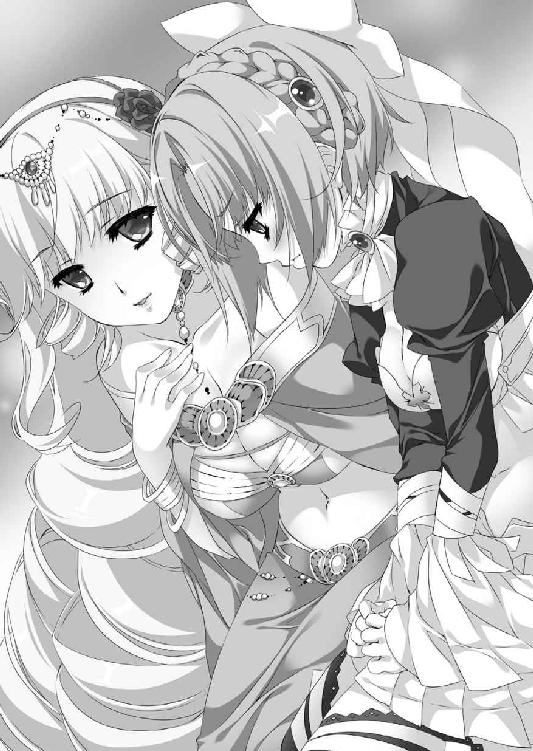

| 魔弾の王と戦姫〈ヴァナディース〉14<魔弾の王と戦姫> (MF文庫J) | |
| 川口 士 | |
| (2016) | |
魔弾の王と戦姫14
川口士

本作品の全部または一部を無断で複製、転載、配信、送信したり、ホームページ上に転載したりすることを禁止します。また、本作品の内容を無断で改変、改ざん等を行うことも禁止します。
本作品購入時にご承諾いただいた規約により、有償・無償にかかわらず本作品を第三者に譲渡することはできません。
本作品を示すサムネイルなどのイメージ画像は、再ダウンロード時に予告なく変更される場合があります。
本作品の内容は、底本発行時の取材・執筆内容に基づきます。
本作品は縦書きでレイアウトされています。
また、ご覧になるリーディングシステムにより、表示の差が認められることがあります。
１ 戦雲迫る
遭遇戦だった。どちらも期せずして、相手の姿を認めあったのだ。
ブリューヌ王国の中央、やや南寄りの一帯である。このあたりは丘が点在し、丘と丘の間を埋めるように森があり、茂みがあり、川がゆるやかに蛇行しながら伸びている。
それらが、両者の視界を遮った。敵の存在に気づくのが遅れた。
初夏を迎えた青空の下、月光の騎士軍の偵察隊とムオジネル軍の偵察隊が、小さな丘の中腹で睨みあう。おたがいを隔てる距離は、約三百アルシン（約三百メートル）。
両軍とも騎兵のみで構成されており、数はどちらもおよそ二百。
ちなみに月光の騎士軍とは、ブリューヌとジスタートの混成軍の通称のようなものである。この偵察隊にも、少数ながらジスタート兵がいた。
敵とほぼ同数であるということが、戦意に火をつけたのだろう。中天を通り過ぎた太陽に照らされて、先に動きだしたのはムオジネル軍だった。
「手柄をたてる絶好の機会だ！ ブリューヌ人どもを蹴散らしてやれ！」
鉄の兜をかぶったムオジネル軍の指揮官の叫びが、兵たちを戦闘へと駆りたてる。彼らは雄叫びをあげ、馬の腹を蹴って月光の騎士軍に襲いかかった。
「迎え撃つぞ！ 俺たちの方が強いということを、わからせてやるんだ！」
月光の騎士軍の指揮官が、大声で兵たちを激励する。くすんだ赤い髪と黒い瞳を持つ若者だ。手には剣でも槍でもなく、漆黒の弓を持っていた。
若者の名はティグルヴルムド＝ヴォルン。親しい者からはティグルという愛称で呼ばれている。今年で十八歳になるが、その年齢と風貌からは想像できないほどの武勲を、彼は今日までに重ねていた。
ティグルの叫びに、兵たちは喚声で応える。何といってもここはブリューヌの大地であり、ムオジネル軍は侵略者なのだ。敵の怒号は、かえって彼らの戦意を煽った。
予想外の出来事にひるみかけていた兵たちが持ち直したことに、ティグルは安堵の息をつく。乱戦は避けたいところだったが、やむを得ない。隊列を整えるために後退すれば、敵を勢いづかせてしまう。
丘の斜面を横切るように駆けて、両軍は激突した。瞬く間に乱戦となる。
馬と馬がぶつかりあい、その上で人間と人間が武器を叩きつけあう。剣も槍も、相手を斬ったり突いたりというよりは、馬上から叩き落とすために用いられた。地面に落ちた者は斜面を転がっていくか、敵味方の馬蹄に踏みつぶされる。
金属音を響かせて、ブリューヌの剣とムオジネルの剣が嚙みあう。馬上でバランスを崩して、ブリューヌ兵が落馬した。とどめを刺すべくムオジネル兵は馬を進ませようとしたが、背後にまわっていた他のブリューヌ兵に棍棒で殴られ、頭部を血で染めて昏倒する。
いつのまにか側面や背後に敵がいることが、乱戦の恐ろしさだった。ムオジネル兵だけでなくブリューヌ兵も、横合いから斬りかかられ、後ろから刺されて地面に倒れていく。熱を帯びた初夏の風に血と土の臭いが混じり、むせ返りそうになる。
不意に、彼らの頭上を一本の矢が通り過ぎた。
その矢は、果敢に槍を振るってブリューヌ兵を打ち倒していたムオジネル軍の指揮官の額にまっすぐ突き立つ。「がっ」と短い悲鳴を残してムオジネル軍の指揮官は落馬し、二度と起きあがってこなかった。
指揮官を失ったムオジネル兵たちは、目に見えて狼狽する。対照的にブリューヌ兵たちは猛々しさを増した。
「一兵も帰すな！」
容赦のないティグルの命令が飛ぶ。敵味方が入り乱れる中で、ムオジネル軍の指揮官を狙って一矢で葬り去ったのは、この若者だった。
ブリューヌ兵たちが突進する。ムオジネル兵は頭に黒い布を巻き、革鎧をつけているだけの軽装だ。頭を斧で割られ、肩を剣で斬られ、腹を槍で貫かれる。草と地面はすでに流血で赤黒く染まっていたが、新たな血しぶきで上塗りされて凄惨さを増した。
ほどなく、ムオジネル兵は次々に馬首を返して逃走をはじめる。懸命にブリューヌ兵と戦う者もいたが、たちまちのうちに囲まれて斬り刻まれた。
さらに、二十本前後の矢が月光の騎士軍から放たれる。ブリューヌ兵ではなく、ジスタート兵が射たものだ。後頭部や背中に矢を受けて、数人のムオジネル兵が落馬する。そこへブリューヌ兵が襲いかかり、とどめを刺していった。
ティグルは黒い弓に矢をつがえた姿勢で、兵たちの戦いぶりを見つめている。
非道ではあるが、わずかであっても彼らに情報を与えるわけにはいかない。また、叩けるときに叩いておかねばならなかった。この場はともかく、全体でみればムオジネル軍は実に十五万の大軍であり、こちらの倍以上なのだから。
一本の矢が、虚空に見事な曲線を描く。逃げていくムオジネル兵たちの先頭にいる男を追うように飛んで、その頭部を射抜いた。ティグルは感嘆の息を吐きだす。ジスタート兵の誰かが射放ったものだろうが、おもわず見惚れるほどの軌道だった。
やがて追撃戦が終わり、二人の男がティグルの前へ報告に現れる。ひとりは一本の毛髪もない見事な禿頭が印象に残るジスタートの騎士で、ルーリックという。もうひとりは灰色がかった黒髪をしたブリューヌの青年貴族で、ガスパールといった。
「確認中ですが、敵の半分近くは討ちとったと思われます」
ガスパールが厳しい表情で口を開く。彼は、ティグルが頼みにしているマスハス＝ローダントの次男だ。ティグルにとっては兄のような存在であり、この偵察隊においてはブリューヌ兵たちをまとめる役割を担っていた。
「こちらの死者は十二。負傷者は三十から四十ほどです。傷を負っておらず、元気な者を十騎ほど丘の上に向かわせ、敵の援軍が近くにいないか確認させております」
ガスパールは、普段はもっとざっくばらんな口調で話す男だが、兵たちの前ではこのような態度と口調でティグルに接している。
続いてルーリックが報告した。彼はジスタート兵たちのまとめ役を務めている。
「ジスタート兵に死者は出ておりません。負傷者は四名ですが、いずれも軽傷です」
それから、ルーリックはガスパールを見た。
「死者の埋葬は、我々も手伝いましょう」
「ありがたい。ところで、ムオジネル兵どもの死体はどうします」
そう尋ねたガスパールに、ティグルは首を横に振った。
「彼らの死体は埋葬しなくていい。武具はいただくが、それ以外は何もせず、なるべく一ヵ所に集めておいてやってくれ。彼らの仲間が回収しやすいように」
逃げていったムオジネル兵が回収に来る前に、死体が野の獣に喰われる可能性はある。だが、ティグルはそれについて考えないことにした。百近い死体を埋葬する余裕は、さすがにない。それに、彼らは敵なのだ。できることには限度があった。
ガスパールとルーリックは兵たちに指示を出すべく馬首を巡らせる。勝利にもかかわらず、彼らの後ろ姿を見送るティグルの表情は晴れなかった。
──こんなところにまで偵察隊が来ているなんて。
この地は、ブリューヌ王国の王都ニースから歩いて一日半ほどの距離にある。
ムオジネル軍十五万は、まだ南部の港町群にいるはずだ。港町群から王都までは、歩いて約二十日かかることを考えれば、この遭遇戦自体に戦慄を禁じ得ない。
もっとも、ムオジネル軍の偵察隊は王都より北のモントゥールにまで姿を見せたことがあるのだから、このようなことは予想してしかるべきだったのだろう。
月光の騎士軍全体の指揮を執るべき立場にいるティグルが、わずか二百騎を率いてこの地を訪れたのは、地図ではなく、自分の目で地形を確認しておきたいところだと判断したからだった。
四半刻ほどが過ぎて、再びガスパールとルーリックがティグルの前に現れる。作業がすべて終わったこと、近くに敵の援軍はいないことを報告した。ティグルはうなずき、王都に帰還することを告げたあと、ふと気になっていたことを尋ねる。
「そういえば、ムオジネル軍が逃げるとき、先頭にいた兵を倒したのはルーリックか？」
「矢を見ただけでわかりましたか。さすがはティグルヴルムド卿ですな」
ルーリックは照れくさそうにつるりとした頭部を手で叩いた。彼は弓を得意とし、己の技量に強い誇りを抱いている。そして、それゆえに自分以上の弓の使い手であるティグルを尊敬していた。ティグルは笑って答える。
「この部隊で、あれぐらい矢を飛ばせるのは俺とルーリックだけだろう。あの矢は、いままでで一番飛んだんじゃないか」
「私もそう思います。最近、訓練ではようやく二百八十アルシン先まで矢を届かせることができるようになったのですが、実戦ではできなかったので内緒にしていまして......」
大陸において、弓の最大の飛距離とされる数字は二百五十アルシンだが、名人、達人と呼ばれるような者でも、そこまで矢を届かせるのは至難の業とされる。
ルーリックはそれをとうに超えて、二百七十アルシン先まで矢を飛ばすことができていたのだが、その数字をさらに伸ばしてみせたのだ。
「見ていてください。いずれ、三百アルシン先まで矢を届かせて、ティグルヴルムド卿に並んでみせますから」
「こいつは俺もうかうかしていられないな」
そのとき、それまで黙って二人の会話を聞いていたガスパールが口を挟む。
「ルーリック殿。ティグル......いや、総指揮官殿の弓の技量というのは、剣や槍にたとえるとどれほどのものなのだろうか。弓を嫌っているわけではないが、疎くてな」
「そうですな。一言で申しあげれば、大陸一というところでしょうか」
「それは、いくら何でも持ちあげすぎじゃないか？」
さすがにティグルは呆れた顔になったが、ルーリックは真剣な表情で首を横に振る。
「何をおっしゃいますか。あなたのような弓の使い手が他にもいたら、たまったものではありません。軍の先頭に立ちながら弓矢で敵を射倒すという行為がいかに非常識で恐ろしいか、ティグルヴルムド卿はもっと自覚するべきです」
「いや、俺だって誰かに守ってもらっているから、そういう真似ができるわけでな......」
ティグルはそう反論したが、ルーリックだけでなくガスパールまでが疑わしげな目を向けてきたので、二人に背を向けることで話を打ち切った。
「引きあげるぞ」
若者の背後で、禿頭の騎士と青年貴族はそれぞれ苦笑したのだった。
◎
ムオジネル王国が、十五万の大軍でもってブリューヌ王国へ侵攻したのは、春の終わりのことだった。総指揮官はクレイシュ＝シャヒーン＝バラミール。ムオジネル国王の弟であり、近隣諸国からは恐れをこめて『赤髭』と呼ばれる屈指の名将だ。
クレイシュの指揮の下、ムオジネル軍はジスタート領となったアニエスの地を一気に駆け抜けて、ブリューヌ領内へ入りこんだ。アニエスが彼らの侵攻を阻むと考えていた多くのブリューヌ人にとっては、まったくの不意打ちとなったのである。
ブリューヌへの侵入を果たしたムオジネル軍は、すぐには王都を目指さず、南へ進路をとった。ブリューヌ南部の沿岸に点在する港町群を狙ったのだ。
その行軍速度は決して遅いものではなく、十五万という大軍に圧倒された港町群は次々に降伏し、恭順の意を示した。虚勢を張ってもむなしいだけであったし、抵抗したときのムオジネル軍の苛烈さは、よく知られていたからだ。
よほどのことがないかぎり、ムオジネルは抵抗した者を許さない。徹底した破壊と略奪によって、都市を廃墟に変える。住人たちは殺されるか、奴隷として連れ去られるのだ。
現在、ムオジネル軍はマッシリアと呼ばれる港町にいた。
この港町から北へ延びる大きな街道を進んでいけば、およそ二十日後には王都ニースにたどり着く。まだ彼らは動きだしていなかったが、ムオジネルの軍装と軍旗が街道を埋め尽くすのは時間の問題だろう。
ブリューヌ王国の現在の統治者は、王女であるレギン＝エステル＝ロワール＝バスティアン＝ド＝シャルル。彼女はムオジネル軍と戦う決意を固め、ブリューヌの各地から兵を集めていた。
その兵を指揮するのは、ティグルヴルムド＝ヴォルンである。内乱を鎮圧し、外敵を退け続けてきた若者は、今度はムオジネル軍に勝利することを望まれていた。むろん、ティグル自身もそのつもりだった。
◎
偵察隊を率いてティグルが王都ニースに帰還したのは、遭遇戦があった日の翌日のことだ。昼前の空は見事なぐらいに青く晴れ渡り、初夏の陽光が燦々と降り注いで、王都を囲む城壁を白く輝かせていた。
王都は、不安と活気と慌ただしさの中にある。王都が敵の大軍に攻められるなど、これまで何十年もの間なかったことだ。ブリューヌを大きく揺るがした内乱と、それにともなう多くの者たちの死が、周辺諸国の野心を強く刺激したのだった。
城壁のあちこちに開かれた門は、出ようとする者と入ろうとする者とで連日ごった返している。王都が戦場になるとあって、北や東へ逃れようとする者もいれば、王都の城壁の内側ならば安全と考えて避難してきた近隣の町や村の者もいた。
その他にも、商売の匂いを嗅ぎつけてきた商人や傭兵、娼婦、ブリューヌ各地から駆けつけた領主の軍や騎士団などもいる。当分はこの状態が続くだろうと思われた。
城壁の外では、民兵たちが壕をより広く、深く掘る作業を進めている。彼らはレギンとティグルの呼びかけに応じて、戦いに加わることを決めた者たちだった。
民兵たちの姿を遠くに眺めやりながら、ティグルは偵察に出る前日のことを思いだす。
その日の朝、若者はレギンとともに、王宮からもっとも近く、王都で最大の面積を持つ広場に向かった。現在の状況について説明すると、あらかじめ布告しておいたのだ。
四方に神々の像を配したその広場は、とうに王都の住人たちで埋め尽くされ、入りきれなかった人々が広場の外にもあふれるほどだった。誰もが緊張に満ちた顔で不安そうにささやきをかわし、レギンの登場を待っていた。
レギンと、そしてティグルが広場に現れると、ざわめきは止んだ。
二人のそばにはレギンの護衛を務めるクロードとセレナが控えていたが、金髪の王女はティグルだけを伴って、広場の奥に設置された壇上に立つ。
「──よく集まってくれました」
集まった人々の数は、一万をゆうに超えていただろう。広場の外にいる者も含めれば、その倍に達したかもしれない。彼らの視線を一身に浴びてもレギンは顔色ひとつ変えず、ひるむ気配もなく、住人たちをまっすぐ見つめた。ティグルも同様だ。
レギンは落ち着いた声で、ムオジネル軍の来襲を告げた。彼女の声は決して大きくなかったが、その決意を示すように凜とした響きを帯びて、多くの人々の耳に届いた。
「ムオジネル軍の数は非常に多く、数々の城砦や都市でもその進軍を阻むことはできないでしょう。私はこの王都で、彼らを迎え撃ちます」
静まりかえった広場が、戦慄と新たな緊張に包まれる。人々の恐怖が爆発する前に、レギンは傍らに立つティグルへと視線を向けた。
「兵の指揮をとるのは、ティグルヴルムド＝ヴォルン。我らが『月光の騎士』について、説明の必要はないでしょう。彼ならば勝利をもたらしてくれると私は信じています」
月光の騎士。それはティグルが二年前に内乱を鎮めた際、レギンの父であるファーロン王から授けられた称号だった。
ティグルは小さく息を吸うと、広場にいるすべての人々へ呼びかけるように、言った。
「約束する。我々の敵を、必ず国境の外へ追い払うと」
ティグルが言い終えるや、広場は歓声に包まれた。噴きあがった感情は共鳴を起こして増幅し、狂熱の渦をつくる。
人々はブリューヌとレギン、ティグル、そして月光の騎士の名を何度も叫んだ。
彼らの声の大きさは、期待の大きさであり、若者が背負う責任の大きさでもあった。
この戦いに敗北すれば、おびただしい量の流血と死とともに、ブリューヌという国が消滅するかもしれないのである。重圧に押し潰されて精神を病むか、ひそかに逃げだしてもおかしくなかった。
ティグルがそうならずにすんだのは、彼を支える多くの者たちの存在に加えて、自分のできることには限界があると知っていたからだ。
ティグルはほんの二、三年前まで、無名といってよい若者だった。伯爵位を持つ領主貴族といっても治めているのは辺境のアルサスであり、弓以外に取り柄がないことから、王都へ足繁く通うようなこともなかった。
内乱の渦中に飛びこんでからも、彼ひとりの能力で戦ってきたわけではなく、勝ってきたのでもない。だからこそ、レギンに全軍の指揮をゆだねられたときも、父の後を継いだときと同じように「まあ、何とかやってみます」と気負いなく言えたのだ。
どれほどの時間が過ぎただろうか。激情の嵐がおさまりはじめたところで、ティグルは手を挙げる。人々は身体の内と外にわだかまる熱気を感じながら、若き英雄の次の言葉を待った。
「約束を違えることはしない。だが、我々がいま直面している困難は、かつてないほどに大きい。私はともに戦ってくれる者を求めている。自らの手と足で、己の生活と家族や友人を守ろうという者、私と勝利をわかちあいたい者は、王宮の前へ来い」
間髪を入れず、レギンが口を開く。
「ムオジネル軍は、南からこの王都へ迫っています。いまなら北や東へ逃げることも可能でしょう。逃れることは恥ではありません。私の名において認めるものとします」
そうして、ティグルたちは広場をあとにしたのだった。
この呼びかけのあと、王都の住人たちの行動は大きく三つにわかれた。
王都から避難しようとする者、迷いつつも王都に留まって、それまで通りの生活を続ける者、そして、民兵となるべく王宮に駆けつけた者とである。
王宮に勤める文官たちの試算では、民兵を募れば四万は集まるだろうということだったが、老若男女合わせて六万近い数の人間が王宮の前に現れた。いますぐ戦場へ向かうと早とちりしたらしく、包丁と鍋のふたで武装した者もいたぐらいだ。
文官たちは嬉しい悲鳴をあげたものの、それもほとんど一瞬だった。
なにしろ老人や女子供もいるのだ。食い詰めたごろつきの隣に、王都の外へ出たことなどないという主婦が立っており、その隣には杖をついた老人がいるという始末で、文官たちは頭を抱えながら、六万弱の民兵志望者をその日のうちに三万以下にまで減らした。
試算よりも少なくなったが、もともと一日で集まるとは思っていない数字だ。それに、王都に残って戦うというレギンの意志に応えようとした人々がこれだけいたというのは、誰にとっても心強いことだった。
──そうして集まった民兵たちは、ティグルがいま見ているように壕を掘る作業をしたり、あるいは城壁の内側に武器を運んだり、城門のそばに土囊を集めたりしている。
偵察隊を解散させ、あとの処理をルーリックとガスパールに任せて、ティグルは軍の専用の城門をくぐろうとした。緊急の報告などに備えて、いくつかの門は軍の関係者しか使えないようになっている。
ティグルの存在に気づいた民兵たちが声をあげたのは、そのときだった。ティグルは苦笑して手を振る。このぐらいのことは故郷のアルサスでもやっていた。民兵は感激したのか、近くにいる仲間たちに大声で話しまわっている。
彼らを横目に、ティグルは城門をくぐった。
王宮は、王都の中心にそびえるリュベロン山の中腹にある。
王宮に入ったティグルは、広い廊下を半分も行かないうちに、淡い金髪と碧い瞳を持つ王女に声をかけられた。
「──ティグルヴルムド＝ヴォルン伯爵」
レギンがそのようにティグルを呼んだのは、公の場で、ついティグルという愛称で呼ぼうとしてしまったのをごまかすためだろう。ティグルは微笑を浮かべて彼女に一礼した。
今年で十七歳になるレギンは、繊細で美しい容姿と華奢な身体つきもあって、一見したところでは優しげな、やや頼りない印象を与える。
しかし、彼女はテナルディエ公爵やガヌロン公爵に命を脅かされながらも内乱を生き延び、亡き父王の後を継いで、ブリューヌを見事に統治してきたのだ。
ボードワンをはじめとする有能な臣下がいるとはいえ、彼女が本当に外見通りの娘であったらブリューヌは混迷の沼から抜けだせずにいただろう。
いま、王女のそばには護衛を務める二人の騎士だけしかいない。レギンは足を止めて、ティグルと話を続けた。
「ムオジネル軍の偵察隊と一戦まじえたと聞きましたが、怪我はありませんか」
「ご安心ください、殿下。ご覧の通りです」
「総指揮官たるあなたが無事で何よりです」
見る者の心をなごませる笑顔でそう言いながら、レギンは話題を変えた。
「民兵ですが、さきほど四万に達したと報告を受けました。一旦、ここで募兵を中断し、このあと来てくれた者については名簿に登録して、予備兵力とするつもりです」
「もう集まったのですか。おおいに助かります」
率直に喜ぶ若者に、レギンは表情を曇らせて、視線を床に落とす。
「彼らをだましたような、卑怯者になった気分です。落ち着いて話しあったというわけでなく、気分を昂揚させ、熱狂に押し包んで......」
レギンの声は小さく、彼女とティグル、それから二人の護衛にしか聞こえないほどのものだった。
「殿下。そんなふうに考えることはありません」
ティグルは不器用な手つきでレギンの手をとって、彼女をなぐさめる。
「勇気を絞りだすのに、そういった雰囲気を必要とする者もいます。誰もが、何にも頼らずに自分を奮いたたせられるわけではないんです」
若者にも経験のあることだった。ティグルの戦いは劣勢ではじまることが多く、自らの言葉や行動で兵を鼓舞して、士気を高めなければならなかった。
レギンはすぐには言葉を返さず、ティグルの手をそっと握り返す。やわらかなぬくもりがティグルの手を包んだ。顔をあげて、金髪の王女はにこりと微笑む。
「ありがとう。あなたにそう言ってもらえて、少し気が楽になりました」
そのとき、ティグルは漠然とだが、彼女の心情を察した気がした。
さきほどの言葉は王女の本心であり、深刻な悩みに違いない。だが、普段のレギンならば、このような弱音は決してこぼさなかっただろう。
あえて口にすることで、彼女はティグルに甘えたかったのだ。そして、彼女の反応を見るかぎり、ティグルはどうにかレギンの望みに応えることができたようだった。
さらにレギンが何かを言おうとしたとき、廊下の向こうから文官のひとりが小走りに駆けてきた。その文官はいくつもの書簡を両手で抱えており、レギンの前にかしこまる。
レギンは王女としての表情に戻って文官に小さくうなずくと、ティグルに向き直った。
「それでは、ヴォルン伯爵。またあとで」
「はい。殿下もあまりご無理をなさらぬよう」
一礼して、ティグルは歩きだそうとしたのだが、一歩目を踏みだしかけたところでレギンに呼び止められた。怪訝な顔で振り返った若者の顔を、金髪の王女はじっと覗きこむ。
「私の顔に何か......？」
困惑した顔のティグルに、レギンはすぐには言葉を返さない。さらに五つ数えるほどの時間、ティグルの顔を見つめたあと、彼女はようやく表情を緩めた。
「驚かせてしまってごめんなさい。あなたが、どこか変わったように思えたので。言葉にするのは難しいのですが、以前にも増して落ち着きがあるような......」
その言葉に、ティグルはもう少しで口の端を引きつらせてしまうところだった。若者の頭の中には、白銀の髪と紅玉の瞳を持つ娘の笑顔が浮かんでいる。ティグルの振る舞いに変化が生まれたとすれば、その原因は彼女に違いない。
深く追及することでもないと思ったのか、あるいはこの状況がもたらしたものと考えたのか、レギンは護衛の二人に守られて、文官とともに歩き去った。ティグルは胸に手をあてて、勘の鋭い王女の後ろ姿を見送ったのである。
◎
レギンとわかれたティグルは、会議室に向かった。会議室の扉の脇には二人の兵士が立っていたが、ティグルの姿を認めて扉を押し開く。
「他の方々はすでにそろっており、総指揮官殿をお待ちしております」
ありがとうと礼を言って、ティグルは扉をくぐった。
会議室はかなりの広さを有している。天井から吊された青銅製のシャンデリアの蠟燭すべてに火が灯されて、室内を明るく照らしていた。
テーブルの上には地図やいくつもの駒、束になった書類や書簡、それから水を満たした七つの銀杯が置かれている。
テーブルを囲んでいるのは六人の男女だ。男はいずれもブリューヌ人で、マスハス＝ローダント、ブルレック伯爵、ナヴァール騎士団の副団長を務めるオリビエの三人である。
ずんぐりとした身体を絹服に包んだマスハスは、今年で五十七歳。ティグルの亡き父の親友であり、若者が誰よりも信頼する老伯爵だ。
ブルレックはブリューヌ南部に領地を持つ貴族で、ザクスタン軍との戦いからティグルの麾下にいる。近隣の諸侯をまとめあげる器量があり、指揮官としても優秀な男だ。
オリビエは西方の国境を守るナヴァール騎士団の副団長であり、団長代理でもある。ティグルは、西方から駆けつけた諸侯の軍や騎士団のまとめ役を彼に任せていた。
女は三人ともジスタート人だ。ジスタート王国が誇る七人の戦姫のひとりエレオノーラ＝ヴィルターリアと、同じく戦姫のリュドミラ＝ルリエ、そしてエレオノーラの副官を務めるリムアリーシャである。エレオノーラはエレン、リュドミラはミラ、リムアリーシャはリムという愛称で、親しい者たちからそれぞれ呼ばれていた。
腰まで届く白銀の髪と覇気に満ちた紅玉の瞳を持つエレンは、青を基調とした軍装に身を包んでいる。ティグルと目が合ったとき、彼女はそっと微笑を浮かべた。
艶のない金髪を頭の左側で結んでいるリムは、エレンのそれと同じ軍装を着て、彼女の隣に座っている。彼女は、ときにティグルの教師役を務めることもあった。
『凍の雪姫』の異名で呼ばれることもあるミラは、肩のあたりでそろえた青い髪と、気の強さを感じさせる青い瞳の持ち主だ。彼女は青い軍装の上に白銀の鎧をつけていた。
「総指揮官がじきじきに出向いての偵察の成果はあった？」
からかうような表情と、何気ない口調とでミラが聞いてくる。その態度に、ティグルは若干の安心感を覚えながらうなずいた。
「ああ。役に立つかどうかはわからないが、俺は自分の目で見てきてよかったと思う」
「それならいいわ」
ある一件から、ティグルとミラの仲はやや気まずいものになっていたのだが、彼女はとりあえず、そうしたわだかまりをおさえてくれたようだった。原因は完全にティグルにあるので、若者としては彼女の配慮に感謝するしかない。
「──ティグルよ。さっそくだが、悪い話がある」
ティグルが席に着くや否や、マスハスが切りだした。その表情はかなり深刻なものだ。
「兵が、予定よりも足りなくなる可能性が出てきた」
ティグルは目を瞠る。マスハスの口調から、よほどのことだろうと充分に身構えていたのだが、驚きがわずかに上回った。
「何があったんですか？」
当然の質問に、マスハスはテーブル上の地図へと視線を向ける。王都ニースから南の一帯を描いた大きな地図だ。
「現在、ムオジネル軍はマッシリアの港町にいるようだが......。マッシリアと、このニースを結ぶ街道上には、三つの城砦がある」
「セヴェラック、ゲルゴヴィア、ヴィエルゾンですね」
確認するようにティグルが応じた。セヴェラックとゲルゴヴィアにはそれぞれ三千、ヴィエルゾンには二千の騎士団が駐留し、街道周辺の治安を守っている。
先日、レギンは彼らに城砦を放棄して王都に集結するよう命じた。十五万を数えるムオジネル軍の前では、たとえ城砦に立てこもろうとも二千や三千の兵力で相手になるはずがない。彼らはすぐに王都へ駆けつけるものと、レギンやマスハスは考えていた。
だが、そうはならなかったのだ。マスハスは苦りきった顔でティグルに告げる。
「この三つの城砦を守る騎士団がな、いずれも城砦に留まると言ってきた」
ティグルは愕然として、とっさに言葉が出てこなかった。彼らは何を考えているのか。
だが、若者はすぐに頭を振って冷静さを取り戻す。まずは理由を知るべきだ。
「騎士団長たちは何と言ってきたのですか？」
「自分たちは城砦を死守し、王都が敵襲に備える時間を稼ぐ。要約すると、そういうことじゃな。言い方は三者三様というところだが」
テーブル上の書簡に視線を移して、マスハスはため息をついた。ティグルもさすがに憮然とした顔になる。ブルレックを見た。
「ブルレック伯爵は、この騎士団長たちの為人についてご存じではありませんか」
ブリューヌ南部に領地を持つブルレックは、これらの騎士団とも交流がある。栗色の髪の先端の巻き毛をいじりながら、彼は慎重に答えた。
「セヴェラックの騎士団長であるコーヴァン卿ならば、たしかにやりかねません。ときとして感情的になりやすい方なのです。普段はそれがよい方に働いて、騎士たちの人望も厚いのですが......」
やや同情する声音で、ブルレックは付け加える。
ザクスタン軍が攻めてきたとき、セヴェラック騎士団は動けなかった。敵が急に進路を変えたり、別働隊を編成したりする可能性があったからだ。
「あのときに戦えなかった悔しさを、彼らはここで晴らしたいのだと思います」
「迷惑な話だな」
冷淡に切って捨てたのはオリビエだ。ひとつの騎士団を束ねる身として、腹立たしさを抑えられないようだった。エレンとリム、ミラは口にこそ出さないが、彼に同意しているのは表情からわかる。ティグルも同じ気分だった。
次に、ゲルゴヴィア城砦を守るガスタルディについて、ブルレックは語った。城砦とその周辺を守ることを自分の使命と考えているような男だと。
「戦士としても、指揮官としても優れているのは疑いありません。ただ、城砦の外の出来事に目を向けようとしない方なのです」
ティグルはマスハスと顔を見合わせる。マスハスは嘆息した。
「ヴィエルゾン城砦は、このニースから四日のところにある。ムオジネル軍が来る前に説得する時間はあるが......」
セヴェラックとゲルゴヴィアの騎士団長たちの説得は、間に合わないだろう。そして、ヴィエルゾンの騎士団の説得も失敗した場合、マスハスが言ったように、戦う前から八千もの兵を失うことになる。総指揮官のティグルとしては頭と胃の痛くなる話だった。
厄介なのは、彼らはレギンやブリューヌに対して敵意や反感を抱いていないということだ。城砦に立てこもって時間を稼ぐことこそが己の役目だと、思いこんでいるのである。
現在の月光の騎士軍はおよそ六万。ティグルの指揮の下、ザクスタン軍やグレアスト軍と戦った、ブリューヌ兵とジスタート兵の混成軍が二万足らず。レギンが文字通り国中からかき集めた兵が四万余りというところだ。
王都に常駐する一万五千の兵と、四万の民兵はこの中に含んでいない。装備や練度を考えても、補助戦力にしかなり得ないからだ。
──ただでさえ兵が足りないというのに......。
声には出さずに愚痴をこぼしたあと、ティグルは気分を切り替えるためにテーブル上の銀杯を手に取った。ただの水だと思って口をつけたのだが、その水は充分に冷やされており、口の中に柑橘類の果実を思わせるさわやかな甘みが広がる。
「ティッタが用意したものじゃよ。おぬしが来る直前にな」
マスハスがさりげない口調で言った。ティグルは栗色の髪の侍女に心の中で感謝したあと、表情をあらためて一同を見回す。
「ムオジネル軍は、この三つの城砦をどうすると思う？」
「敵の狙いは王都です。それ以外のことに余計な手間をかける気はないでしょう。兵力の一部を割いて城砦を包囲し、本隊はかまわず進軍するというところかと」
そう答えたのはリムだ。彼女の隣に座っているエレンも腕組みをしてうなずく。
「私でもそうする。マッシリアからこの王都まで、距離にして実に五百ベルスタだ。要衝に兵を置いておけば、後方の安全を確保することにもつながるからな」
「そうね。ムオジネル軍にとってもっとも恐ろしいのは、ブリューヌ側の抵抗よりも補給線と退路を断たれることでしょうから」
ミラも冷静に賛意を示した。マスハスたちが何も言わないのは、彼女たちと同じ考えだからだろう。彼女らの意見にうなずいて、ティグルは口を開く。
「ムオジネル軍とどう戦うかだが......。まず、軍を二つにわける」
穏やかな口調で発せられたティグルの言葉は、静かな驚きをもって他の者たちに迎えられた。敵の半分にも満たない数の味方を、さらにわけるというのだ。
「詳しく聞こうか。ティグルヴルムド卿がそう言うからには、それなりの理由があるのだろう。敵に勝つための」
緊迫した空気を払うように、エレンが言った。ティグルと呼ばなかったのは、ブルレックやオリビエの前で気さくに接することを遠慮したのだ。
若者は小さくうなずくことでひそかに恋人へ謝意を示すと、小さな駒を二つ手に取る。地図上の王都に置いた。
「ひとつを守備隊、もうひとつを別働隊と呼ぶ。守備隊には、ムオジネル軍からこの王都を守ってもらう。その間に、別働隊は大きく迂回して敵の後方へとまわりこむ」
ティグルの動かした駒は王都を離れ、曲線を描いてセヴェラック城砦に到着する。
「リムアリーシャ殿が言ったように、ムオジネル軍は街道沿いにある三つの城砦を包囲することで無力化し、同時に補給線を確立させるだろう。王都が敵の本隊を引きつけている間に、別働隊はこちらを叩く」
「ふむ。相手の退路、補給線を断つのは籠城戦の常道じゃ。ましてムオジネル軍は十五万の大軍。降伏した都市に食糧や物資を供出させても限界があるじゃろうし、略奪をすれば王都を攻める手は緩む。本国からの連絡が届かなくなるのも愉快ではなかろう......」
マスハスが灰色の髭を撫でながら、低く唸った。言葉はティグルの戦略を肯定しながらも、その声には不安めいた響きがある。
ムオジネル軍の総指揮官が赤髭クレイシュであることは、すでにブリューヌ軍で知らぬ者はいない。そして、名将の誉れ高いクレイシュならば、そのようなことにはとうに手を打っているのではないかとマスハスは思うのだ。
それはマスハスひとりの思いこみというわけではなく、エレンとミラ、リムに加えてブルレックまでもが、全面的には賛成しかねるという表情をしていた。
オリビエが平然としているのは、長く西方国境から動いたことがないために、クレイシュについて他の者ほど詳しくないからだ。また、彼はどれほど過酷な命令だろうと従うつもりでいた。
ティグルは別働隊の駒から手を離さずに、言葉を続ける。
「別働隊はこのあと、マッシリアの港町に向かうふりをしながら、敵に気づかれないよう北上する。そうして敵の本隊を背後から襲い──クレイシュを討つ」
説明を終えたティグルが駒から手を離したときには、室内の空気は一変していた。誰もが愕然とした顔で地図を凝視する。六人の視線は、地図を焼き尽くしてしまうのではないかと思われるほどの強烈な熱を帯びていた。
「なるほど。セヴェラックにいる敵を討ち、そのあとにマッシリアへ向かおうとすれば、ムオジネル軍も我々が補給線を断とうとしていると本気で思うだろう」
地図から真っ先に顔をあげたのは、エレンだ。彼女は手を打ち、気持ちのよい音が室内に響いた。紅玉の瞳には理解と、燃えあがるような戦意が煌めいている。
だが、白銀の髪の戦姫はすぐに冷静さを取り戻し、ティグルを見据えて短く聞いた。
「別働隊の数は？」
「二万」
ティグルの答えはさらに短く、再び六人を驚愕させた。
「たった二万の兵で、十五万の兵に護られた赤髭を討つというのですか」
ブルレックが栗色の髪を揺らし、緊張と昂揚感から頰を紅潮させる。ザクスタン軍やグレアスト軍を相手に戦い抜いてきた勇敢な伯爵が、額に汗をにじませていた。
ティグルは肩をすくめて、やはり穏やかな口調で答える。
「別働隊をこれ以上増やしたら、王都の守りがもたない」
都市や城砦を巡る攻防において、攻める側は相手の三倍から五倍の兵力を必要とするといわれる。言い換えれば、守る側は相手の三分の一から五分の一の兵を用意しなければならないのだ。
大陸の歴史を紐解けば、敵の五分の一どころか、十分の一にも満たない寡兵で城砦を守りきった話もある。だが、そういった奇跡が自分たちにも訪れることを期待するわけにはいかなかった。
「俺たちは街道を使えない上に、敵に見つからないよう迂回する必要がある。この王都からセヴェラック城砦まで、二十日はかかるだろう。首尾よく敵を討って補給線を断ったとしても、その報告がクレイシュのもとに届くまでに五、六日はかかると思う」
そうして考えていくと、王都にはかなりの長期間、敵の攻勢に耐えてもらわなければならない。ティグルはそう説明した。
「セヴェラックではなく、より王都に近いゲルゴヴィア城砦に向かうのではだめなのでしょうか。そうすれば、日数を多少なりとも縮められると思いますが」
リムが淡々とした口調で提案する。愛想のなさはこのようなときでも変わらないが、若者は、彼女のわずかな表情の変化を見逃さなかった。リムはティグルのために、あえて質問をぶつけてくれたのだ。
「それだと、敵にも速く報告が届くから対応も速くなる。何より、クレイシュを油断させることができない」
セヴェラックを狙い、マッシリアを狙うふりをするのは、クレイシュの意識をその方面へと向けるためだ。ゲルゴヴィアや、あるいはヴィエルゾンを狙っては、北上の可能性をクレイシュに考えさせ、警戒させることになる。
こちらの狙いは補給線を断つことだと、相手に思わせなければならなかった。
「敵よりも少ない戦力をさらに二分する上に、遠くの敵を討ちに行く。無謀もいいところだけど、たしかにこれぐらいやらないと、あの赤髭を欺くことは無理でしょうね」
ミラは皮肉っぽい笑みを浮かべながらも、ティグルの策に賛成する。無謀といわれてもティグルはまったく反論できなかった。別働隊は成果をあげられず、王都は陥落するという最悪の結末を迎える可能性も充分にあるのだ。
だが、すべての兵力を王都に集めて籠城したとしても、勝てるとはかぎらない。援軍のあてはなく、ムオジネル軍の食糧が尽きるまで耐え続けられるという保証もないからだ。
全軍を王都の前に布陣させて、正面から決戦を挑むという手も論外である。野戦は物量の勝負になりやすく、ムオジネル軍はブリューヌ軍の倍以上なのだ。ブリューヌ軍が敗れれば、守る者のいない王都がそびえるだけとなる。
そうなれば、破壊と略奪の嵐が王都を襲うだろう。
抵抗する者や、奴隷として価値のない老人や子供は殺される。他の者は奴隷として連れ去られ、少しでも価値があると認めたものは奪われ、そうでないものは打ち壊される。レギンは殺されはしないだろうが、おそらく死よりも悲惨な運命が待っているに違いない。
マスハスは感心した顔でティグルを見た。王都ニースからマッシリアに至るまでの広大な戦場で、よくここまで考え、決断したものだと無言の賞賛を若者に贈る。
「別働隊は誰が率いる？」
オリビエが簡潔に尋ねた。その質問は、彼もこの作戦案を了承したという意味だ。ティグルは当然のように自分を指で示し、その指をエレンとブルレックに順番に向ける。
「俺と、エレオノーラ殿、それからブルレック伯爵の三人です」
ブリューヌ南部を往復する以上、地理に詳しいブルレックは欠かせない。
そして、ティグルがいれば、クレイシュには三百アルシンの距離まで近づけばよいことになる。圧倒的多数の敵に突撃する以上、この利点を活かさない手はない。
エレンの役目は、敵兵からティグルを守ることだ。これも、白兵戦において卓絶した技量を誇る彼女でなければ務まらないだろう。
「何じゃ。わしを連れていかんのか」
真っ先に不満を述べたのはマスハスだった。ティグルは呆れた顔になる。
「マスハス卿は、全体をまとめる役目があるでしょう。それに、どちらかといえば、こちらの方がよほど危険なんですよ。二万かそれ以下の数で、敵陣に飛びこむんですから」
「だが、クレイシュ＝シャヒーン＝バラミールの首級という最大の戦功をつかめるのは、別働隊の方だな」
オリビエも両眼を冷ややかに光らせる。ティグルは突き放すように応じた。
「オリビエ卿には、西方の諸侯の軍や騎士団をまとめてもらいたいんです。それに、レギン殿下と王都を守り抜くという武勲が、敵将の首級に劣るとは思えません。殿下にも、そのようにお願い申しあげるつもりです」
エレンとブルレックは満足そうな顔で座っており、とくに意見はなさそうだ。
「私は副官として、エレオノーラ様のそばにいるべきだと考えます」
リムが淡々と要求する。ティグルは彼女の抗議に驚きつつも、説得の言葉を紡いだ。
「ジスタート兵すべてを別働隊に組みこむことはできない。王都に残す方は、誰かが指揮を執らなくてはならないんだ」
「ルーリックに任せてもいいのでは」
「リュドミラ殿にも残ってもらうし、彼女の相手はルーリックでは荷が重い」
そのミラは不満そうな表情こそ浮かべたものの、感情を言葉に変えることまではしなかった。自分の能力が野戦よりも籠城戦に向いていることを凍の雪姫は理解しており、その方面での活躍を期待されていることもわかっていたからだ。
「他に、何か提案はあるか？」
ティグルが全員に尋ねると、オリビエが手を挙げた。
「クレイシュを討ったら、敵は瓦解するのか？ 他の者が新たな指揮官として、王都を攻め続けるという可能性は？」
「おそらくないと思う」
ティグルの答えは、偵察隊のもたらした報告などから推測したものではなく、今日までに積み重ねてきた経験から導きだされた言葉だった。
「十五万の兵を統率して、ムオジネルを発ってジスタートを通過し、ブリューヌに攻めこむ。海路を使って補給線を確立する。言葉にすると簡単なように聞こえるが、誰にでもできることじゃない。いや、クレイシュにしかできないことだ」
ティグルはさまざまな兵を率いて、ブリューヌの各地を転戦してきた。ジスタートやアスヴァールで戦ったこともある。だから、わかるのだ。この大遠征の総指揮官は、クレイシュ＝シャヒーン＝バラミール以外に務まらないと。
「わかった。総指揮官殿を信じよう」
オリビエは納得したように口を閉じる。次に手を挙げたのは、ミラだった。
「援軍の要請はしないの？」
「あてがない」
彼女の言葉を不思議に思いながらも、ティグルは首を横に振る。
二年前の内乱で打撃を受けた諸侯や騎士団は多く、この春に起きたザクスタン軍の侵攻は、徐々に回復しつつあった彼らの傷口をえぐって多大な出血を強いた。
戦う意思と力のある者たちは、すでに王都に集まり、マスハスかオリビエの指揮下に入っている。それだけの力がない者たちは自領から動かず、防衛に徹していた。
「報告によれば、アスヴァールはザクスタンと戦っている真っ最中だ。ジスタートには、ザクスタンとの戦いで充分に支援してもらっている。これ以上援軍は望めないだろう」
そう説明したティグルに、エレンも同意する。
「国王陛下はともかく、貴族諸侯は援軍を出すことに反対するだろうな。我々は傭兵ではない、なぜブリューヌのために我が国の兵が血を流さなければならないのかと。私も、彼らの立場ならそう言うだろう」
兵士は基本的に、自国のために戦うものだ。ブリューヌに友好的なライトメリッツの兵たちにしても、エレンの命令があるからこの地で戦っているのであって、ブリューヌを守ろうとまでは思っていない。ティグル個人に対する好意などとは、また別のものだ。
エレンの言葉にうなずきつつ、ミラは言った。
「そうね。私も、貴族諸侯はそう主張すると思う。でも、我が国はムオジネルに対して、形だけでも抗議しなければならない立場にある」
エレンがはっとした顔になる。
「ムオジネル軍が、我が国に無断でアニエスの地を通過したことか」
「あら、ちゃんと覚えていたのね。あなたのことだからきれいに忘れたと思っていたわ」
「思いだすのに時間がかかったことは認めよう。なにせ、どこかの誰かと違って、目の前の敵に一杯食わされるという屈辱的な体験をしていないのでな」
当初、ムオジネル軍はブリューヌを油断させるため、ミラの治めるオルミュッツを攻めるかまえを見せた。そうして一気にアニエスを通過し、ブリューヌへ攻めこんだのだ。ミラがムオジネル軍の意図に気づいたのは、彼らがアニエスに入ったあとだった。
ミラはエレンに言い返そうとしたが、寸前で気を取り直してティグルに向き直る。
「いま言ったことに加えて、陛下が太陽祭の場で、ソフィーヤ＝オベルタスとオルガ＝タムにムオジネルを警戒するように命じておられたことは、あなたも覚えているでしょう。この二人なら、多少は兵を動かすかも」
ソフィーという愛称で呼ばれるソフィーヤと、オルガは、エレンやミラと同じくジスタートの戦姫だ。ティグルも彼女らと親しく、その人柄についてもよく知っている。
「ジスタート王と二人の戦姫にそれぞれ使いを出せば、ひとりぐらいは反応してくれるかもしれない。それによって、いくらかはムオジネル軍を牽制できるかもしれない。そういうことだな？」
ティグルが聞くと、ミラはうなずいた。
「ポリーシャもブレストも遠すぎるけれど、何もしないよりはいいでしょう」
ここからソフィーの治めるポリーシャへ行くには、ブリューヌ東部を横切るように駆け抜け、ヴォージュ山脈を越えてジスタートに入り、ミラの治めるオルミュッツを横断しなければならない。たどり着くだけでも数十日は覚悟する必要があるだろう。
オルガの治めるブレストは、そのポリーシャを抜けてさらに東へ行ったところにある。到着するころには、もう何もかも終わっている可能性さえあった。
「わかった。使者を手配しよう」
だが、ティグルはそう答える。ミラの言う通り、打てる手は打っておくべきだった。
もしかしたらソフィーはもう動いているかもしれないと、ミラはひそかに考えている。
魔物の気配を感知して、ミラがブリューヌへ行くことを決めたとき、彼女は王都とソフィーのもとへそれぞれ使者を送った。ソフィーには、ムオジネル軍の動きと魔物のこと、自分の行動予定を伝えたのだ。
ソフィーが事態を深刻に受け止めてくれていたら、兵を動かしているかもしれない。
しかし、ミラはそのことを言わなかった。ソフィーが必ず来るという確証は、彼女にもない。あてにしていた援軍が来ないということほど、味方を失望させるものはない。守りに長けた戦姫と評される彼女は、それをよくわかっていた。
このとき、ティグルもエレンも、そしてミラも、レグニーツァ公国にフィグネリア＝アルシャーヴィンという新たな戦姫が誕生していたことを知らなかった。
もしもティグルがフィグネリアの存在を知っていたら、彼女にも援軍の要請をしたかもしれない。少なくとも、ミラはそうするように勧めただろう。
レグニーツァはブリューヌからそれほど遠くはなく、ムオジネル軍との戦いを拒んだヴァレンティナ＝グリンカ＝エステスや、アスヴァールを警戒するよう命じられていたエリザヴェータ＝フォミナと異なり、フィグネリアは比較的自由な立場にあったのだから。
「別働隊は、いつ王都を発つ？」
マスハスが尋ねる。ティグルは地図を見ながら答えた。
「ムオジネル軍がセヴェラック城砦にどう対処するか。その報告が届いたら、ですね。ただ、二万の兵が一度に動けば目立つので、いまのうちから少しずつ兵を外へ出しておくつもりです」
その後、部隊の編成など細かい部分を決めて、軍議は終わった。
◎
軍議を終えたあと、ティグルは王宮の最上階にある自分の部屋で休んでいた。
レギンへの報告は代わりにマスハスがやってくれる。夕食までのわずかな時間だけでも休むようにと、老伯爵が配慮してくれたのだ。
室内の装飾は簡素で調度品も少ないが、掃除が行き届いて清潔だ。この部屋を用意してくれたのはレギンで、丁寧に掃除してくれたのはティッタだった。
二人に感謝して、ティグルはベッドに寝転がる。だが、天井をぼんやり眺めていると、湧きあがってくる不安をおさえることができなかった。ここ数日は、少しでも時間に余裕ができるとそのことばかり考えてしまう。
十万を超える敵など、ティグルはいままで戦ったことがない。これほど広い戦場もはじめてだ。しかも、この戦いにはブリューヌの命運がかかっている。
軍議が終わったあと、リムは口元に微笑を湛えて「これ以上のものはないでしょう」と言ってくれた。ティグルにとって戦の教師である彼女が、励ましなどではなくそう言ってくれたのだから、自信を持っていいはずだ。
エレンも「これで駄目なら、誰が何をやっても駄目だろう」と背中を押してくれた。
──だが、相手はクレイシュだ。
二年前、彼に率いられてブリューヌに侵攻してきたムオジネル軍を、ティグルは撃退している。その際、クレイシュはティグルに『流星落者』という称号を贈ってきた。
しかし、当時のことを思いだすと、ティグルの背中を幾筋もの冷や汗が流れ落ちる。あれはティグルが敵を押し返したというよりも、クレイシュが退いたのだ。
もしもクレイシュが目の前の戦にとにかく勝とうと考える気性の持ち主であったら、ティグルは敗れていただろう。そうなっていたら、レギンやミラ、マスハスらの現在もなかったに違いない。
首を動かして、ティグルは壁にたてかけている黒弓を見る。弓幹も弓弦も闇の中から取りだしたかのように黒い、ヴォルン家の家宝たる弓。この力を解放すれば、クレイシュを討てるだろうか。
──討つことはできるかもしれないが......。
人智を超えた力を目の当たりにして、動揺せずにいられる者はどれだけいるだろうか。混乱は避けられない。最悪の場合、ティグルを敵視する者とかばう者とで、ブリューヌはまた真っ二つに割れる。そのような事態は避けなければならなかった。
「おまえとのつきあいも長いけど、扱いの難しさは変わらないな」
黒弓に笑いかける。黒弓はもちろん微動だにしなかったが、自分のせいばかりではないと答えたように思えた。錯覚だろうが、あるいは黒弓に宿っている何かが、無言のうちにティグルに語りかけたのかもしれない。
そのとき、扉が外から叩かれる。ティグルが誰何の声をあげる前に、やや堅苦しさを帯びたエレンの声が聞こえた。
「ヴォルン伯爵。私だ」
ティグルは身体を起こし、扉に歩み寄って鍵を開ける。開いた扉の隙間から、白銀の髪と紅玉の色の瞳が覗いた。
「少し話がある。入っていいだろうか」
ここがブリューヌの王宮なので、戦姫として振る舞っているのだろう。ティグルはうなずいて、彼女を部屋の中へ招き入れた。
扉が閉まると、エレンは笑ってティグルの見慣れたいつもの表情になる。
ティグルは椅子を勧めたが、彼女は首を横に振って、ベッドに腰を下ろした。若者を見上げて自分の隣を軽く叩き、座るように促す。ティグルは自分の気の利かなさに苦笑しつつ、白銀の髪の戦姫の隣に座った。
「先に、真面目な話をしておこうか」
エレンはそう言って、若干の皮肉が入り混じった目でティグルを見る。
「別働隊の編成だが、ブルレック伯爵を入れたのはわかる。彼は南部の地勢に詳しいし、指揮官としても優秀だからな。私を入れたのはなぜだ？」
「不思議に思うようなことか？」
ティグルが聞くと、エレンはしかつめらしい顔で答えた。
「念のため、な。誰かが邪推しないともかぎらない。少なくとも、おまえと私とで意見を明確に一致させておく必要はある」
エレンの言う通りだった。西方国境から来た者たちの中には、ジスタート軍に対して警戒心を抱く者が少なくない。だからこそ、ティグルは彼らのまとめ役をオリビエに任せたのだが。
「戦士としても、指揮官としても君が優れているからだ。ブルレック伯爵も、ザクスタンとの戦いを通じて君を認めている。兵の中に不満を抱く者がいても、俺だけじゃなく彼も仲裁してくれる」
その点、ザクスタンとの戦いのあとに軍に加わってくれたミラでは、いささか不安な部分がある。ミラを外した理由には、得意とする籠城戦で力を貸してほしいという以外に、それもあった。リムやマスハスについては軍議で説明した通りだ。
「だから、どう考えても君しかいなかった」
ティグルの話を聞き終えて、エレンは満足そうに笑った。
「そうか。そんなに私の力が必要か」
彼女の表情を見て、ティグルはそういうことかと納得する。念のためと言ったように、エレンもあるていどわかってはいたのだろう。そして、彼女はそのわかりきった説明をティグルの言葉でほしかったのだ。
「俺は、いつも君を頼りにしてきただろう」
「嬉しい台詞だが、こういう場でしか聞けないのは少し寂しいものだな」
エレンがティグルの古参の部下というのであればともかく、他の者がいるところで言っては贔屓ととられかねない。地位が上がるほどに、言葉には気をつけねばならなかった。
エレンは笑みを消して、決意を宿した紅玉の瞳で若者をまっすぐ見つめる。
「わかった。どんな敵が来ようと、おまえには決して近づけさせない。おまえに降りかかってくる矢も、ことごとく吹き散らしてやる」
「頼む」
虚勢も何もない、本気でのやりとりだった。クレイシュを狙うのだ。どれだけ多くの敵が向かってこようと斬り伏せられる戦姫と、はるか遠く三百アルシン先まで矢を放つことのできる弓使いが、力を合わせてようやく指がひっかかるぐらいだろう。
話が一段落したところで、エレンは表情を緩めて、ティグルにもたれかかってきた。気恥ずかしさを覚えたティグルは、つい余計なことを口走ってしまう。
「そ、そうだ。ティッタに何か飲みものでも用意してもらうか」
たちまちエレンは渋面をつくって、若者の頭を軽くこづいた。
「本当にティッタを呼ぶのなら、私はさっさと自分の部屋へ戻るぞ」
「......すまなかった」
ティグルは素直に謝る。エレンは仏頂面を崩して、再びティグルに肩を寄せた。いたずらっぽい笑みを浮かべ、吐息がかかるほどの近さから若者を見つめる。
「おまえらしいといえば、おまえらしいがな」
ベッドに置かれたティグルの手に、エレンはそっと自分の手を重ねた。
長年、剣を振るってきたにもかかわらず、エレンのてのひらはやわらかく、しっとりとしている。伝わってくる彼女の体温が心地よい。
ティグルは言葉をさがそうとして、すぐにその考えを消し去る。そんなものはいらないとわかったからだ。この場合の沈黙は、心安らぐものだった。
しばらくの間、二人はそうしておたがいのぬくもりを感じあっていた。
どれぐらいの時間が過ぎただろうか。不意に、エレンが重ねている手にかすかな力をこめる。ティグルは首を動かしてエレンの方を見た。
自分を見つめるエレンの頰は上気して、紅玉の瞳は潤んでいる。ティグルもさすがに彼女の望みを察して、顔を寄せた。二人は唇を押しつけあう。
身体を重ねたのは、まだあの晩だけだが、口づけは二人きりになれる状況をつくって何度となくしていた。
おたがいの額といわず頰といわず唇を押しつけあったこともあれば、舌を絡めあい、その行為と感触に酔うような激しい口づけをしたこともある。
だが、今回はそこまでせず、相手の唇の感触をたしかめるような優しいものに留めた。
二人とも、腕を伸ばして相手を抱きしめたくなる衝動を懸命におさえこむ。ここは王宮だ。さすがにこれ以上の行為は自重するべきだった。
どちらからともなく、二人は離れる。エレンは頰を染め、上目遣いにティグルを見上げると、その肩に自分の頭を預けた。その重みと、白銀の髪の感触はティグルを穏やかな気持ちにさせてくれる。
「不思議な気分だ」
熱を帯びた息とともに、幸せという言葉から紡ぎだしたような声でエレンは言った。
「こうやって誰かを愛する日が来るなんて、想像したこともなかった」
「俺もだ。いつかは父のように、誰かと結婚するだろうとは思っていたが......」
その言葉に、エレンの顔がいくらか真剣なものになる。
「その誰かというのは、ティッタか？」
彼女から出す分には、他の娘の話をしてもいいということなのだろうか。ティグルは苦笑しながらも「いや」と答える。エレンが若者の肩に頭を預けたままでなければ、首を横に振っていただろう。
「結婚や夫婦の意味もよくわかっていないぐらい小さなころのことだからな。とくに誰も想像しなかったよ」
「いまは？」
含みのある声で、エレンが問いかける。ティグルは顔が熱くなるのを感じながら、答えずに目をそらした。エレンは喉の奥でくっくっと笑う。
「一段落したら、花嫁修業もしないとな。いつになるかわからないとはいえ、夫となる者に恥をかかせるわけにはいかん」
その言葉に、ティグルはエプロンをつけて厨房に立っているエレンを想像してみた。似合わないわけではないが、見た目も味つけも豪快な料理が出てきそうに思えた。
「何を想像している？」
エレンが睨むように目を細めて顔を近づけてくる。もっとも、本気で怒っているわけではないのは、甘さと優しさを多分に含んだ視線からわかる。ティグルは彼女の頰にそっと唇を押しつけてから答えた。
「そういえば、君のつくる料理を食べたことはなかったなって思っただけだよ」
「そういうことにしておいてやるか」
エレンも同じように若者の頰に口づけをしてから、胸を張って言葉を続ける。
「言っておくがな、これでも簡単なものならつくれるんだぞ。戦姫になる前は、リムと交代で食事をつくっていたんだからな」
「君とリムが傭兵だったころか。よかったら、そのころの話を聞きたいな」
ティグルがそう言うと、エレンは不思議そうに首をかしげた。
「いままでにも何度か話したことはあっただろう？」
「もっと、いろんなことを知りたいんだ。君の昔のことを。もちろん俺だって、君が聞きたいと言ってくれるならいくらでも話す」
これまでは、おたがいの立場や、いつか訪れるだろう別離を考えて、立ち入ったことを聞かないようにしてきた。だが、いまの二人の関係はそのときのものとは違う。
ティグルに真面目な顔で言われたエレンは、何とはなしに頰を赤くして、若者から顔をそむけた。
「そう言われても、急には難しいな。おまえにはどんなことでも話せると思うが、何だ、その......少し、恥ずかしい」
最後の言葉は消え入りそうなほど小さく、そばにいたティグルでなければ聞きとれないだろうほどの声だった。はにかむような笑みを浮かべてもじもじとするエレンがあまりに可愛らしく思えて、ティグルは彼女を抱きしめたくなったが、どうにか自重する。
「俺も、いま思いついて言っただけだからな。また今度、余裕のあるときにでも」
「わかった。私も、おまえの小さいころの話を楽しみにしているぞ」
エレンはティグルを見上げてそっと目を閉じる。
二人はもう一度口づけをかわした。
◎
フィグネリア＝アルシャーヴィンがレグニーツァの統治者となってから、一ヵ月ばかりが過ぎている。彼女は早くも戦姫として認められつつあった。
フィグネリアにとっても、彼女を支える官僚たちにとっても意外だったのは、戦姫としての政務が彼女の気性に合っていたことだろう。どのような選択を迫られようとも、黒髪の戦姫は動じたり、悩んだりせず、淡々と迅速に決断していった。
ときに判断を間違えることもあったが、フィグネリアは己の誤りを認め、修正することをためらわなかった。官僚たちの意見にも素直に耳を傾けた。
そうして、先代の戦姫であるサーシャ──アレクサンドラ＝アルシャーヴィンが亡くなってから滞っていた案件のいくつかは驚くほどの早さでかたづき、レグニーツァの公宮はにわかに活気づいたのだ。
フィグネリアは、サーシャのころの統治を大きく変えようとはしなかった。サーシャが善政を敷いていたということもあるが、大部分をそのまま継承し、現状に合わなくなってきた部分だけを、官僚たちの進言を容れて調整するに留めた。
その一方で、彼女は戦士としてのたしかな力量を騎士や兵たちに認めさせた。
ひとつは、技量に自信のある騎士や兵を集めて手合わせをさせたことだ。
手合わせは審判の立ち会いのもと、一対一の形式で行うのだが、フィグネリアは休憩を挟むことなく十人以上の部下を相手にして完勝をおさめた。さすがにうっすらと汗をかきはしたものの、大きく息を乱すようなことはなかった。
もうひとつは、領内視察を兼ねて行った野盗討伐だ。
二十人ほどの野盗の集団に対し、そのとき連れていた四人の兵と、さらに近くの村から募った三人の民兵を率い、彼女自身が先頭に立って野盗と戦った。
これも完勝である。二人の兵が負傷したが、十日ほどで完治する傷だった。彼女は捕らえた野盗をことごとく殺すことはせず、村で働くことを条件に何人かを助命した。
「アレクサンドラ様に続いて、我々はよい戦姫に恵まれた」
「まったくだ。これでレグニーツァも安泰だ」
公宮の内外で、人々はそのような言葉をかわすようになったのである。
今日もフィグネリアは早朝の鍛錬を終え、食事をすませたあと、官僚たちが用意した書類に目を通していた。現在二十五歳。均整のとれた長身を、隼の模様が縫いこまれた黒い服に包んでいる。彼女が傭兵だったころから着ている服と同じつくりのものだ。
左目を隠すように流れている長い黒髪もそうだが、フィグネリアは外見に無頓着なところがあり、相手におかしな印象を与えなければそれでいいと考えている節があった。
侍女のひとりが祝宴のときに着るドレスをつくってはどうかと提案したときも、面倒くさげな顔で「また今度」と答え、侍女たちを嘆かせたものだ。
昼になる少し前、文官のひとりが客の来訪を告げた。
「エリザヴェータ＝フォミナさまがおいでになりました」
「予定通り、応接室に通してくれ。従者たちには客室でくつろいでもらうように」
フィグネリアは椅子から立ちあがって、そう指示を出す。
エリザヴェータは、レグニーツァの北にあるルヴーシュ公国を治める戦姫だ。親しい者からはリーザという愛称で呼ばれており『異彩虹瞳』と呼ばれる特殊な瞳の持ち主としても知られている。
リーザは、フィグネリアがレグニーツァで過ごすようになって間もないころに、戦姫誕生を祝う使者を派遣してきた。そして、しばらくは戦姫としての生活に慣れるので忙しいだろうから、落ち着いたころに挨拶に伺うと伝えてきたのだ。フィグネリアは礼を述べ、リーザと会う日程を決めたのだが、今日がその日だった。
黒髪の戦姫は執務机のそばに下げておいた双剣を手に取って、腰に差す。手を伸ばせる位置に武器を置いておくのは、傭兵時代からの癖だ。
彼女は執務室を出て、応接室に向かった。
応接室はなかなかの広さで、壁の一部を四角くくりぬいた窓からは初夏の陽光が射しこんでいる。部屋の中央には熊の毛皮が敷かれており、その上に円形のテーブルが置かれ、革張りの椅子が三つ、テーブルを囲むように設置されていた。
フィグネリアは椅子に座らず、窓際に立って外の風景を眺める。
ここから見えるのは城下の町並みだ。豆粒のような大きさの人々が、せわしなく、あるいはのんびりと動きまわっていた。
ふと、フィグネリアはひとつの光景に目を留める。とある広場の一隅で、傭兵団とおぼしき者たちが兵を募っていた。この位置から一目でそれとわかったのは、職業柄というものなのだろう。
──いまの私を見てどう思うか、あんたに聞いてみたいものだね。
声に出さず、フィグネリアはつぶやく。それは死者に向けた言葉だった。『白銀の疾風』という、いまはなき傭兵団。その団長だったヴィッサリオンに。フィグネリアに政務の才能があるとすれば、それは間違いなく彼との交流によって磨かれたものだった。
外から扉を叩く音がフィグネリアを我に返らせ、彼女の感傷を消し去る。言葉を返しながら振り返ると、扉が開いてひとりの娘が入ってきた。
腰まで届く鮮やかな赤い髪や、紫を基調とした豪奢なドレスよりも、左右で色の異なる目こそが見る者に強い印象を与えるだろう。フィグネリアも例外ではなかった。
──金色の右目と碧色の左目......。これが異彩虹瞳か。
「はじめまして、レグニーツァの戦姫殿。雷渦に選ばれ、ヴィクトール陛下よりルヴーシュの地を賜ったエリザヴェータ＝フォミナと申します。お目にかかれて光栄ですわ」
リーザはドレスの裾を左手でつまんで、優雅に一礼する。ドレスの右腰に下げてある、丸く束ねた黒い鞭がかすかに揺れた。彼女の竜具であるヴァリツァイフだ。
フィグネリアは、自分より六つ年下の戦姫に歩み寄って左手を差しだした。
「よく来てくれたね。フィグネリア＝アルシャーヴィンだ。あなたを歓迎しよう」
リーザはフィグネリアと握手をかわし、彼女が戦姫になったことについて祝いの言葉を述べる。独創的なものではなかったが、礼儀にかなった言葉選びだった。
「飲みものを用意するから、もうひとりの客が来るまでくつろいでくれ」
フィグネリアがそう言ったとき、再び応接室の扉が外から叩かれる。入ってくるようにというフィグネリアの言葉を待って、扉が開かれた。
入ってきたのは白いドレスをまとい、奇怪な形状の大鎌を軽々と担いだ娘だ。フィグネリアもリーザも充分に美しいが、この娘も二人とは異なる美しさを備えている。艶やかな黒髪は長く、ドレスには色とりどりの薔薇があしらってあった。
「はじめまして、煌炎の戦姫殿。虚影に選ばれ、ヴィクトール陛下よりオステローデの地を賜りし、ヴァレンティナ＝グリンカ＝エステスと申します。以後、お見知りおきを」
ヴァレンティナと名のった戦姫は、それからリーザの方を向く。
「おひさしぶりですね、エリザヴェータ。太陽祭以来でしょうか」
「そうですわね。こんなに早く再会できるとは思いませんでしたわ、ヴァレンティナ」
リーザは微笑を浮かべているが、それはこの部屋の主であるフィグネリアに配慮したものだった。彼女の声には、ヴァレンティナを警戒する響きがかすかにある。
二人の戦姫が同時にフィグネリアのもとを訪れたのには、ちょっとした事情があった。
ブリューヌから船でジスタートに帰還したヴァレンティナは、レグニーツァ領内にあるプシェプスの港町に着いたとき、新たな戦姫の誕生を知ったのだ。
ヴァレンティナはプシェプスからまっすぐ王都シレジアを目指すつもりだったのだが、その予定を変更して、フィグネリアのもとへ使者を送った。戦姫誕生を祝い、ぜひとも挨拶に伺いたいと伝えたのである。
ヴァレンティナの治めるオステローデは、レグニーツァから遠い。この機会を逃すと、次に彼女がレグニーツァを訪れようとすれば、そうとうな日数を要してしまう。
フィグネリアは、ヴァレンティナの申し出を断りはしなかったが、日程をずらしてくれるように言った。その日はリーザが来る予定になっているという理由も添えて。
他の来客があるから、と言わずにリーザの名を出したのは、ヴァレンティナを蔑ろにしているわけではないというフィグネリアなりの配慮だった。先約が同格の戦姫であれば、彼女も納得するだろうと考えたのである。
ヴァレンティナの使者はその返事を主のもとに持って帰ったのだが、彼はヴァレンティナの提案を携えて、再びフィグネリアのもとを訪れた。
「あなたとエリザヴェータさえよければ、その席にごいっしょさせていただけませんか」
要約していえば、そういう内容だ。フィグネリアはリーザのもとへ使者を出し、事情を話した。リーザからは承諾の返事が来た。
かくして、三人の戦姫が一同に集う形となったのである。
フィグネリアは二人の客に椅子を勧めた。それぞれ己の竜具を足元に置いてから、二人の戦姫は椅子に腰を下ろす。フィグネリアも同じようにして、椅子に座った。
侍女が、銀杯や葡萄酒、菓子などを銀の盆に載せて現れる。
小さく切ったイチジクをビスケット状の生地に挟みこんでじっくり焼いた菓子と、よく冷えた杏やスモモをガラスの器に盛ったもの、蜂蜜で薄めて甘みを強めた葡萄酒がテーブルに置かれた。焼き菓子の香ばしい匂いに、リーザとヴァレンティナは表情を緩める。
「さっそくだが、感想を聞かせてもらっていいか」
葡萄酒を満たした銀杯を手に取りながら、フィグネリアは静かに聞いた。
「何の感想でしょうか？」
「私の顔を見に来たんだろう」
不思議そうに尋ねたヴァレンティナに、双剣の戦姫は何でもないことのように答える。これにはヴァレンティナだけでなく、エリザヴェータも戸惑いを隠せなかった。
はじめて会ったばかりだというのに、ずいぶんと無茶な問いかけだとフィグネリア自身も思う。だが、彼女としては、この戦姫たちの為人を知っておきたかった。このような質問をぶつけられてどのような反応を示すか、見ておきたかったのだ。
「勇ましい方ですわね」
挑発的に胸をそらして答えたのはリーザだ。金色の右目と碧色の左目に楽しげな感情がちらついている。
「そのような質問をしておきながら、自分がどう見られているかについて何の関心もないということだけはわかりますわ。そういう姿勢は嫌いではありません。これで答えになっているかしら」
「けっこう。充分だ」
フィグネリアはそう言って、リーザに謝意を示した。自分の意図をほぼ正確に見抜いたというだけでも、この娘の器量がうかがえる。
フィグネリアはヴァレンティナに視線を移した。彼女はどう答えてくれるだろうか。
「そうですね。この段階でお答えできることがあるとすれば、先代の煌炎の戦姫とはまるで印象が違う、ということぐらいでしょうか」
銀杯を手に取って微笑みながら、ヴァレンティナは言葉を続けた。
「アレクサンドラ＝アルシャーヴィンは穏やかなひとでした。炎にたとえるなら、焚き火だとか、暖炉の火のように、ひとを集めて心を落ち着かせる人柄の持ち主でした。その一方で、彼女の戦いぶりはことごとくを焼き尽くす猛火のようでした」
「私はどんな炎に見える？」
「それはまだわかりません。ただ、こうしてご尊顔を拝したかぎりでは、穏やかさとは無縁であるように思えます。ところで──」
ヴァレンティナはにこりと笑って言った。
「私の顔を見たあなたの感想についても、聞かせていただいていいでしょうか」
「面の皮が厚い」
簡潔な即答に、ヴァレンティナははじめて当惑したような表情を浮かべる。堪えきれずにくすりと笑ったリーザを横目に、虚影の幻姫は困った顔でフィグネリアに聞いた。
「その......そんなふうに見えるでしょうか」
「気に障ったのならすまないが、褒め言葉だ」
それはフィグネリアの本心だった。自分の質問に対してしっかり答え、さらに同じ質問をぶつけてくるあたり、たおやかな外見通りの娘ではない。
──こちらも、かなりの度胸の持ち主だね。
「先日まで、ブリューヌに行っていたと聞いているが」
フィグネリアは、自分から話題を転じた。焼き菓子を口に運びながら、ヴァレンティナはうなずく。
「ええ。ブリューヌが西のザクスタンに攻めこまれ、私とライトメリッツの戦姫エレオノーラが援軍として赴きました」
エレンの名を聞いたとき、フィグネリアはわずかに眉を上げた。もっとも、それはヴァレンティナやリーザも気づかないほどの小さな反応だったが。
「詳しい話を聞かせてもらえないか。私は、こちらが勝ったらしいとしか知らなくてね」
「私もブリューヌの状況には興味がありますわ、ヴァレンティナ」
上品に咀嚼していた果物を吞みこんで、リーザも真剣な顔でヴァレンティナを見た。ヴァレンティナはわかりましたと答えて、話しはじめる。
ザクスタンは西と南の二方向からブリューヌに攻めこんだのだが、いずれの局面でも彼らを迎え撃ったのはティグルヴルムド＝ヴォルンだと虚影の幻姫は語った。自分とエレンは彼の下で兵を率いて戦ったと。
ヴァレンティナの話に余計な装飾は一切なく、戦の流れもよく整理されており、フィグネリアとリーザは感心して彼女の言葉に耳を傾けた。
話はザクスタンとの戦いだけでは終わらず、その合間にブリューヌの王宮で叛乱が起きたこと、またグレアスト侯爵がティグルの率いる月光の騎士軍を一時的にとはいえ追いつめたこと、さらにはミラの単独参戦と、ムオジネル軍が攻めてきたことにまで及んだ。
エレンとミラがブリューヌに留まったという話に、顔をしかめたのはリーザだった。
「では、あなたはエレオノーラたちを置いて、戻ってきたということですの？」
「私が置き去りにしたわけではありませんよ、エリザヴェータ。彼女たちが自分の意思でブリューヌに残ったのです」
にこりと笑ってヴァレンティナは答える。
「太陽祭のあの場には、あなたもいたでしょう。陛下が私とエレオノーラにお命じになったのは、ザクスタンとの戦いにおいてブリューヌに協力すること。それ以外の戦いに対しての備えなど、私はしていませんでしたから」
リーザはきわめて非友好的な視線をヴァレンティナに向けたものの、彼女の言葉の正しさを認めて渋々沈黙する。何杯目かの葡萄酒に口をつけながら、フィグネリアは尋ねた。
「あなたの考えは正しいと私も思うが、それではライトメリッツの戦姫がブリューヌに残ったのは、どういう理由だ？ あなたの話を聞くと、彼女がグレアスト軍とやらに捕らえられたのを、ヴォルン伯爵が助けたからというわけでもなさそうだが。オルミュッツの戦姫のように、ムオジネルの動きや戦力をつかんでおく必要性も薄いだろう」
「彼女はティグルヴルムド＝ヴォルンと以前から親しい間柄です。ブリューヌというよりも、彼を見捨てることができなかったのでしょう」
「だが、それでは陛下の命令に背くことになるんじゃないか」
「いいえ」と、ヴァレンティナはゆっくりと首を横に振る。
「なぜ、陛下が他国の戦に私とエレオノーラを派遣したのか。その意図はブリューヌの弱体化を防ぐこと、これに尽きます。まして、ムオジネルが勢力を強めるとなれば、その影響は間違いなくジスタートにも及ぶでしょうから」
「そこまでわかっていて、あなたというひとは......」
リーザが憤然として悪態をついた。もっとも、それ以上ヴァレンティナを責めることはしない。エレンとヴァレンティナの違いは、性格的な面だけでなく、地理的な面もあることを彼女は理解していたからだ。
エレンの治めるライトメリッツはブリューヌ王国と国境を接しているが、ヴァレンティナの治めるオステローデはブリューヌから遠い。戦いの長期化は、オステローデ軍の兵士の心身をより消耗させることは疑いなかった。
リーザとて、ヴァレンティナの立場だったら悩むだろう。彼女の治めるルヴーシュも、海路を使えるとはいえブリューヌからは遠い。
フィグネリアは無言でヴァレンティナを見つめる。自分が責められるようなことを、初対面の相手がいる前で話すとは。それも、自身を擁護する言葉の一片も口にせず。
──やはり面の皮が厚いな、この女。
そうした内心の感想をまったく表情に出さず、フィグネリアはリーザに聞く。
「あなたは、ライトメリッツの戦姫と親しいのか？」
いまのやりとりの中で、リーザはあきらかにエレンのことを心配していた。赤い髪の戦姫は眉をひそめて、ぶっきらぼうな口調で答える。
「別に、親しくはありませんわ。もちろん、同じ戦姫として言葉をかわす機会もあれば、戦場で相まみえたこともありますけれど」
「照れることはないでしょう、エリザヴェータ。太陽祭でヴォルン伯爵やエレオノーラと話しているあなたは、気になるひととなかなか話すきっかけをつかめなかった子供がついにその機会を得たという感じで微笑ましいものでしたよ」
「へ、変なことを言わないでちょうだい！」
横から茶化すヴァレンティナを、リーザは顔を真っ赤にして睨みつける。その表情を見るかぎり、半分は当たっていそうだなと、フィグネリアは果物を口に運びながら思った。
「あなただって、ヴォルン伯爵に流し目を送っていたでしょう、ヴァレンティナ」
「あら、よく気づきましたね。やはりヴォルン伯爵のことを見ていたからですか」
「......そうでなくても気づきますわ。あれだけ、あからさまなら」
余裕に満ちた笑みを浮かべて切り返すヴァレンティナに、エリザヴェータは鼻を鳴らして応じる。だが、一瞬言葉に詰まったことが、雷渦の戦姫の動揺を表していた。
「ヴォルン伯爵というのは、他の戦姫にも好かれているのか」
フィグネリアの言葉に、リーザとヴァレンティナは舌戦を中断して向き直る。答えたのは気を取り直したリーザだ。
「ええ、そうですわね。オルミュッツを治めるリュドミラ、ポリーシャを治めるソフィーヤ、ブレストを治めるオルガは、彼に好意を持っていると言って差し支えないでしょう。彼女らの信頼と好意を得るだけのことを、ヴォルン伯爵はしていますから」
戦姫のほぼ全員じゃないかとフィグネリアは思った。エレンも、そして目の前にいるリーザも、ティグルに好意を抱いている。ヴァレンティナはいまひとつ不鮮明だが。
「機会があれば、会ってみたいものだね」
「ムオジネルとの戦が終われば、そうした機会もあると思いますわ」
「ブリューヌが勝てば、ですけどね」
すました顔でヴァレンティナが付け加える。リーザは不満そうな目を彼女に向けた。
「どうして、あなたはいちいち突っかかるようなことを言うのかしら」
「そうやって感情を態度と言葉で示してくれるエリザヴェータがおもしろいからですよ」
「私はあなたの玩具ではありませんわ」
「そんなに怒らないでくださいな。ほら、お菓子をあげますから」
「子供扱いしないでちょうだい。あなたの用意したものではないでしょうに」
この二人とまとめて会ったのは失敗だったかなとフィグネリアは思った。
ヴァレンティナの要請であり、リーザも承諾したのでこのような形にしたのだが、初対面だからということに関係なく、若い娘同士がはしゃいでいるような光景は、フィグネリアには馴染みがたい。麦酒か火酒を飲みながら、黙って眺めていたい心境だった。もっとも、ヴァレンティナは二十三歳であり、フィグネリアとは二つしか違わないのだが。
──とはいえ、二人ともいるような場でなければ聞けない話だろうな。
フィグネリアはそれほど雄弁ではない。傭兵だったころから、誰かといっしょにいても聞き役にまわることが多かった。リーザとだけ、あるいはヴァレンティナとだけ会っていたら、もっと事務的な会話に終始していただろう。
二人の戦姫のやりとりが一段落したところで、フィグネリアは再び話題を転じた。
「あなたたちは、自分がどうして戦姫に選ばれたと思う」
やや唐突だったということもあるだろうが、この質問はそうとうに二人の意表を突いたらしい。ヴァレンティナもリーザも、呆然とした顔でフィグネリアを見た。フィグネリアは足元に置いた双剣に視線を落として続ける。
「私がこいつに選ばれてから一月余り。どうしてこいつは私を選んだのか、自分なりに考えて答えも出しはしたが、その答えが正しいのか、いまだに判断がつかずにいる」
リーザはすぐには答えず、フィグネリアの顔をじっと見つめた。その真意を推し量ろうとするかのように。先に答えたのはヴァレンティナだった。
「私には、かなえたい夢があります」
そう言ったときの虚影の幻姫の表情は、リーザが目を瞠るほど真剣なものだった。
「そのために、竜具──エザンディスは私の前に現れてくれたのだと思っています」
「夢、か」
「小さな女の子みたいでしょう？ 笑ってくださってけっこうですよ？」
淡々とした態度のフィグネリアに、ヴァレンティナはすぐに表情を緩めて冗談めかした笑みを浮かべる。しかし、双剣の戦姫は首を横に振った。
そして、リーザも答えた。
「私もヴァレンティナと同じようなものですわ。自分の手で成し遂げたいことがある。それができるのかどうかを試す機会を、私のヴァリツァイフは与えてくれたのだと」
「思いつかなかったからって、真似をしてまで格好をつけなくても......」
またもやヴァレンティナがからかったが、今度はリーザは彼女の挑発に応じなかった。背筋を伸ばし、胸を張ってヴァレンティナを見返す。
「何とでも仰いなさい。私の望みは、私だけが知っていればいいことだもの」
ヴァレンティナは意外そうな感情を紫色の瞳ににじませたが、それ以上リーザに言葉を返すことはしなかった。二人に問いを投げかけたフィグネリアはといえば、感心した顔で二人の戦姫を見つめている。
──夢。そして、成し遂げたいことか。
これまでのやりとりで、二人の違いは多少なりとも理解したつもりだ。どのような質問をぶつけても異なる答えを返してくるだろうこの二人が、ほとんど同じ答えをしたというのは興味深い。
そして、フィグネリアにもそのような望みはある。傭兵の身でありながら、誰もが笑って暮らせるような国をつくるという壮大な夢を持っていたヴィッサリオン。彼とのつきあいの中で自分の中に少しずつ育まれていったものが。
竜具は、自分たちがひそかに抱いていた夢を感知して、現れたのだろうか。
フィグネリアの胸の中に、十四歳のエレンの姿が浮かんだ。
──エレオノーラは、やはりヴィッサリオンの夢を受け継いだのか？
だが、フィグネリアはすぐにその想像を打ち消した。いずれ、エレンは自分の前に姿を見せるだろう。考えるのは、それからでも遅くないはずだ。
そのような思考を微塵も表情に出さず、フィグネリアはリーザたちに言った。
「二人とも、ありがとう。戦姫になったばかりの私には、参考になる答えだった」
その後、フィグネリアはヴァレンティナとリーザを食事に誘い、二人は礼を述べてその招きに応じた。戦姫たちとの会合は、無事に終わったのだった。
２ 大切な者
クレイシュ＝シャヒーン＝バラミールをはじめて見た者は、戸惑いを覚えるといわれている。中肉中背で引き締まった身体をしているが、大きくくぼんだ目、長い鼻と耳は、胸元まで伸びた赤髭とあいまって奇相と呼んで差し支えない。
もっとも、王弟であるクレイシュに、面と向かって顔の造形を評した者はいない。当人は「顔で女に好かれたことはないな」と冗談にさえしているのだが。
今年で三十九歳になるが、敗走せしめた敵、陥とした城砦は数知れず、名将と呼ばれるにふさわしい能力と実績の、彼は所有者だった。この男だからこそ、十五万の兵を統率してブリューヌに侵攻するなどということができたのだ。
そのクレイシュ率いるムオジネル軍は、マッシリアの港町に一万の歩兵を置いて、行軍を開始した。ティグルヴルムド＝ヴォルンが王都ニースで軍議を行った日の、翌日のことである。
ムオジネル軍は、補給線を海路に絞っている。陸路の補給線は長すぎるというだけでなく、ジスタート領であるアニエスを通過するため、妨害が予想されたからだ。海路の補給線を結ぶマッシリアの守備に一万の兵を割くのは、むしろ当然のことだった。
ブリューヌの地形はおおむね平坦で、見晴らしもいい。季節も初夏とあって、本国の暑さに慣れたムオジネル兵にとっては、むしろ過ごしやすいぐらいである。
先頭を行くのは、エクレムとアヴシャールに指揮された二万の騎兵だ。頭に黒い布を巻き、革鎧を身につけ、手に槍を持ち、腰にはムオジネル独特の反りのある剣を下げている。ムオジネル産の馬の肌は、やや黒みがかっていた。
馬蹄を響かせて二万もの騎兵が整然と進むさまは、鉄の森が動くかのようだ。随所ではためく緋色と金色の彩りは、戦神ワルフラーンを象徴する彼らの軍旗である。
エクレムとアヴシャールは今度の遠征においてクレイシュが抜擢した者たちで、いずれも若く、三十に達していない。だが、その指揮能力はたしかなものだった。
二万の騎兵のあとには、七万の戦奴が続く。彼らの装備は不統一で、剣しか持っていない者もいれば、槍しか持っていない者もいる。鎧どころか、薄汚れた服だけしか身につけていない者までいた。行軍も整然という言葉からはほど遠い。
彼らの後ろには、ヤルガシュとムラトに率いられた二万五千の歩兵がいる。この二人もエクレムたちと同じく、クレイシュに選ばれた将軍だ。ただし、ヤルガシュとムラトは三十半ばというところである。
歩兵たちは、槍と剣の他に弓も持っていた。二万五千の弓の群れが前進する様子は、草原に無数の波頭が出現したかのような錯覚を見る者に起こさせる。
戦奴を前後から挟んで進軍しているのは、クレイシュの指示によるものだ。もしも戦奴が逃げだそうとしたら、たとえ王都を目前にしているときであっても容赦なく殺すように赤髭は命じていた。
彼らの足音と角笛や太鼓の音が、途切れることなく初夏の風に乗って響きわたる。
マッシリアと王都ニースを結ぶ街道はしっかり整備されており、大軍が進むのにも支障はないのだが、さすがに数が多すぎて半分以上の兵が街道からあふれていた。
街道の外側にはひなげしや木春菊、矢車草などが色とりどりに咲き誇っていたが、彼らは目を留めることさえなくそれらを踏み潰し、土煙を巻き起こして進んでいく。
しんがりは、クレイシュの率いる二万の歩兵と五千の騎兵が務める。クレイシュはこれまでのように輿に乗り、側近たちがそのまわりを囲むように馬を進めていた。
側近たちの数は十人を超える。これは十四万もの兵を指揮する以上、仕方のないことだった。クレイシュは各部隊の管理を将軍たちに任せていたが、彼自身が指示を下さねばならないことはどうしても出てくる。そのため、側近を増やさざるを得ないのだった。
その側近たちに混じって、ダーマードがクレイシュのそばに控えている。
月光の騎士軍がグレアスト軍を打ち破った一戦を見届けたあと、彼は予定通り本隊に帰還した。そして、クレイシュに自分が見たものをあまさず報告したところ、ねぎらいの言葉とともに、王弟のそばにいるように命じられたのだ。
俸給が上がったわけではなく、役職も地位もそのままなので昇進とは言い切れない。ただ、クレイシュに呼びだされ、言葉をかわす機会は増えていた。
「それにしても、ザクスタンとやらには感謝しなければな」
「まったくだ。我々のために、ブリューヌを消耗させてくれたようなものだからな。しかも、やつらはアスヴァールと戦いをはじめ、こちらに手出しはできないそうだ」
「ジスタートもわずかしか援軍をよこしていないということだし、ブリューヌ一国だけでは我々とろくに戦えぬだろう」
談笑をしている側近たちを、ダーマードは冷ややかに眺めている。
彼らの言葉は正しいが、ザクスタンとアスヴァールをぶつけ合わせたのはムオジネルではない。ブリューヌ、正確にはティグルヴルムド＝ヴォルンだ。そのことをわかっていないと、痛い目を見るのではないか。
ジスタートの援軍も、わずかとはいえ決して見くびってよいものではない。
猛り狂う獅子のようなすさまじさで敵陣を突き進んでいた白銀の髪の女剣士の姿を思いだすたびに、ダーマードのてのひらには汗がにじむ。
その女剣士が、ジスタートの戦姫エレオノーラ＝ヴィルターリアらしいと知ったのは本隊に帰還してからだ。彼女は、二年前からティグルに何かと力を貸しているということも併せて知った。この戦にも当然加わっているのだろう。
──閣下には報告したから問題ないだろうが......。
輿に乗って彼らに囲まれているクレイシュは、金の刺繡をほどこした緑の絹服を着て、五枚重ねのマントをたなびかせている。
マントの色は上から赤、水色、黄、紫、白であり、それぞれが薄絹でできているので重くも暑くもない。五重のマントが風をはらんでふわりと広がるさまは、壮観だった。
あるとき、ダーマードはクレイシュに呼ばれて御前に参上した。
「ブリューヌ軍は、どう出てくると思う」
とくに前置きもなく、率直にクレイシュは尋ねる。ダーマードは慎重に答えた。
「ブリューヌが我々と同じだけの兵力を用意できるのならば、いまごろこちらへ向かってきているでしょう。両軍合わせて三十万の兵を展開できる地形をさがして、正面から挑んでくると思われます」
ブリューヌ兵は、決して弱兵ではない。馬を並べ、槍先をそろえてのブリューヌ騎士の突撃には、ムオジネルだけでなく、ザクスタンやアスヴァールも苦しめられてきた。クレイシュでさえ、ブリューヌ騎士とは正面から戦わないように心がけてきたのだ。
「ですが、私が調べたかぎりでも、ブリューヌ軍は十万に満たないとわかっています。これでは一戦に耐えられるかどうかも疑わしいでしょう。そこで、彼らは兵を二つにわけると思われます」
一方で王都を守りながらムオジネル軍を奥深く誘いこみ、もう一方でムオジネル軍の背後にまわって、補給線と退路を断つ。ダーマードにとっては自信のある案だった。
だが、クレイシュは頰杖をついて、出来の悪い弟子を見る師のような表情になる。
「それで終わりか？」
ダーマードは戸惑ったものの、うなずくことしかできない。てきとうな言葉を付け足せば、かえって王弟の不興を買うとわかっていたからだ。クレイシュは言った。
「他の者たちも、同じようなことばかり言いおった。だが、ぬるい。おぬしも剣を使うならば、腰の引けた一撃では浅傷しか負わせることができぬとわかっておるだろう」
つまり、大きく踏みこみ、相手の懐に飛びこむような一手を打てということか。ダーマードはそう解釈したが、彼が何かを思いつくよりも、赤髭の言葉の方が早かった。
「やつらは、私を狙ってくる」
「まさか」
おもわず、ダーマードの口から否定の言葉がこぼれ出る。とうてい考えられないことだった。十万を超える兵に囲まれたクレイシュを狙うなど。
しかし、ムオジネルの王弟は平然として説明する。
「敵の総指揮官は、かつて私が流星落者の称号を贈った若者だ。三百アルシン以内の敵ならば仕留められるという、常識外れの弓の才能を持っている。二年前の戦いでも、カシムをはじめとして多くの者があの若者に討ちとられた」
ティグルの名が出てきて、ダーマードは顔を強張らせた。自分でもよくわからないのだが、彼はいまだにティグルに対する友情にも似た感情を捨てきれずにいる。
戦場で対峙すれば割り切れると思っているのだが、そのときが訪れないかぎり、この感情は未整理のまま抱えておくしかないようだった。
風にひるがえるマントを指先でもてあそびながら、クレイシュは笑った。
「はっはは。人間、先を見通すことはできぬものだな。あの若者に流星落者の称号を贈ったのは、テナルディエ公爵やガヌロン公爵とせいぜい派手に嚙みあってもらうための、箔付けであった。強敵だから撤退したという言い訳にも使わせてもらったがな。だが──」
笑みを消して、クレイシュは落ちくぼんだ目を鋭く光らせる。
「テナルディエ公を討つどころか、内に外にと勝利を重ね、ついにはブリューヌの全軍を率いる身にまでなるとは、まったく予想できなんだ。これだから世の中はおもしろい」
「総指揮官ともあろう者が、閣下を狙うためとはいえ突撃してくるものでしょうか」
ダーマードはためらったものの、疑問を口にした。無謀を通り越して、自殺行為にすら思えるのだ。矢を届かせることができなければ、全滅はまぬがれないではないか。
クレイシュはダーマードをとがめようとはせず、その真面目さを笑うように答えた。
「いま言ったであろう。先を見通すことはできぬと。想像し、対策を練っておくしかないのだ。あとは、流星落者が何を仕掛けてくるか、待つだけよ」
クレイシュが手を振ったので、ダーマードは彼の前から下がる。自分の馬にまたがって前方に目を向けた。
陽光に照らされた草原の緑を、鉄色と褐色とが埋めつくしている。武器と鎧の海が、無数の音を響かせながら大地を覆っていた。緋色と金色の軍旗は、その海の中にただよう小船団の群れだ。太鼓や角笛は鳴り止むことなく大気を震わせ続けている。
──突破してくるというのか。
この人間たちの海を。鍛え抜かれた兵の一団でも、半ばで溺れてしまいそうな大海を。ダーマードにはとうてい信じられないことだった。
「だが、閣下はあいつが来ると思っている。ならば俺なりに考えてみるか......」
自分でできることをさがすのが、あるいは現在のダーマードの役目かもしれなかった。
マッシリアを発ってから三日目。それまで抵抗らしい抵抗を受けずに街道を進んでいたムオジネル軍は、最初の障害と対峙する。
セヴェラック城砦である。平坦な地形の多いブリューヌにおいては珍しく、このあたりには小高い丘が連なりを見せており、セヴェラック城砦は二つの丘に東西を挟まれる形でそびえていた。
城砦の中には約三千のブリューヌ騎士がいて、城門を固く閉ざしつつ、城壁上でさかんに鬨の声をあげて徹底抗戦のかまえを見せている。もっとも、十四万のムオジネル兵からすれば、子犬が懸命に吠えたてているようなものだ。
クレイシュは将軍のひとりであるアヴシャールを呼んだ。
「敵の狙いをどう見る？」
「彼らの目的は時間稼ぎでしょう。城砦に立てこもり、我が軍の兵をひとりでも多く道連れにしつつ、我々の進軍を遅らせようというところかと。悲壮な決意ですが、我々がブリューヌののろまなロバどもにつきあってやる理由はありませんな」
アヴシャールの明快な返答に、クレイシュは満足そうな息を吐きだす。敵をロバ呼ばわりするなど、アヴシャールは相手を見下しがちなところがあるが、それが問題にならないていどには充分な戦功をあげていた。今回もその洞察は正確だ。
「よろしい。おぬしにこの城砦を任せる」
九千の歩兵と一千の騎兵を与えられたアヴシャールは、セヴェラック城砦を遠巻きに包囲した。討って出てくるならば容赦なく撃退するつもりだ。こちらは一万。敵は三千である。野戦となれば、ブリューヌ側にとうてい勝ち目はない。
ムオジネル軍の残り十三万は、たちまちのうちに進軍を再開した。一旦街道を外れて丘を越え、それから街道に戻る。留まっていた時間は一刻半といったところで、長めの休息と変わらない。
ムオジネル軍の本来の流儀からすれば、徹底して破壊し、ブリューヌ兵たちもひとり残らず打ち倒すところだが、クレイシュはあえて戦を避けた。兵の血を流さねばならぬとしたら、それは王都ニースを攻め落とす戦いで行われるべきだったからだ。
セヴェラック城砦の騎士たちは討って出ることもできず、ムオジネル軍が北へ進んでいくのを、憤怒と屈辱に染まった顔で眺めることしかできなかった。
セヴェラック城砦が包囲されたという報告は、この五日後にニースへ届くこととなる。
◎
ムオジネル軍がセヴェラック城砦を通過したころ、ティグルは五人の兵をともなって王都の見回りをしていた。自分の姿を見せることで、王都の住人や兵たちを勇気づけようというのだ。この見回りを、若者は一日おきにやっていた。
ティグルは麻の服の上に革鎧をつけ、青い外套を羽織っている。外套にはヴォルン家を象徴する白い半月と流星が大きく刺繡されていた。
この外套は、総指揮官として威厳が必要だからという理由で、レギンがティグルに贈ったものだった。麻の服や革鎧といっしょでは不釣り合いに思えるが、身につけている本人に気負いがないせいか、不思議と違和感なくおさまっている。
兵たちにまわりを囲んでもらっているので、ティグルに話しかけたり、駆けよったりしてくる者はいない。
だが、四方八方から注がれる強烈な期待の視線や、ときおり聞こえる熱狂的な賛美の声には正直、辟易していた。感情を顔に出さないようにするだけでもひと苦労だ。
──それにしても、日ごとにひとが増えている気がするな。
城門のそばを通っても、王都から逃げていく者より、王都に逃げてくる者の方が目立つようになっていた。通りには小さな露店が増え、行き交う人々の中に一目で娼婦とわかる格好の娘や、怪しげな風体の者が目につく。
城壁の近くを通ったとき、ティグルは通りの端に知っている顔を見かけた。兵たちには休憩がてら待ってもらうことにして、そちらへ足を向ける。
「オージェ子爵！ ジェラール！」
ティグルの声に、薄地の外套を羽織っていた小柄な老貴族がこちらを見た。好々爺然とした顔に笑みを浮かべる。
老人の隣に立って、不機嫌そうな顔で書類の束を見つめていた褐色の髪の若者も、同じくティグルを振り返る。こちらは、やや皮肉っぽい笑みを浮かべた。
「おや、まだ王都にいらっしゃったんですか。しばらく顔を見なかったので、とうに発ったものと思っていましたよ」
「数日中には出ることになるさ。敵が急に引き返しでもしないかぎりはな」
ティグルは若者──ジェラールに笑いかける。その隣にいる老人は、ジェラールの父ユーグ＝オージェだ。二人ともティグルとは長いつきあいであり、マスハスやルーリックらと同様に信頼できる者たちだった。
ジェラールの身体から香ばしい匂いが漂っている。見ると、彼は小脇に小さな麻の袋を挟んでいた。匂いのもとはそれらしい。
ティグルの視線に気づいて、ジェラールは空いた手で麻の袋を取りだした。
「最近はゆっくり食事をする暇もありませんのでね。一本どうですか？」
袋に入っているのは数本の串焼きだった。ティグルは礼を言って、一本もらう。小さく切った肉片を連ねた串焼きは、まだかすかに熱を持っており、嚙んでみるとたしかな弾力がある。塩と脂と肉のうまみとが口の中に広がって、ティグルは顔をほころばせた。
「うまいな。羊か」
「捌きたてだそうです」
ジェラールの言葉に、ティグルは首をかしげる。この王都で捌きたての羊など、なかなか食べることはできないはずだ。まして串焼きの材料に使うはずがない。自分も串焼きを食べながら、手品の種明かしをするような口調でジェラールは説明した。
王都に避難してきた者の中には農民もいる。家畜を連れてきた者も少なくない。彼らにとって貴重な財産だからだ。だが、王都で家畜の世話をしようとすれば、その苦労は尋常ではない。場所の確保すらままならず、設備を借りるにも金がかかる。
そこで、家畜を丸ごと売り払って金に換える者が現れはじめたのだ。
「新鮮な肉を食べるというのは、なかなかない経験ですからね。ティグルヴルムド卿もそうでしょう」
「暇ができたら、いっしょに狩りに行くか？ 新鮮な肉を食い放題だぞ」
ティグルが笑って弓をかまえる真似をすると、ジェラールはぽかんとした顔になり、次いで肩をすくめた。隣で、同じく串焼きをかじっているオージェが苦笑している。
「そういえば、あなたは指揮官だの領主だのである前に、生粋の狩人でしたね。その外套のせいで忘れかけていました」
ジェラールの口調は皮肉っぽいが、これでもティグルを賞賛しているのである。串焼きを食べ終えたところで、ティグルはジェラールたちに尋ねた。
「二人はここで何をやっているんだ？」
「簡単にいえば、物資の管理と配置じゃな」
オージェが答える。ジェラールは手に持っている書類の端を、指で弾いた。
「投石用の石や、油、水などを城壁の下に置くようにしているんです。城壁の上でこれらがなくなったとき、すぐに補充できるよう。ですが、指示通りの量になっていないわ、指示通りでも、城壁から離れたところに置いてあるわ......」
そこまで言ってから、ジェラールは声を潜める。
「最近は、もうひとつ面倒ごとが増えましてね。大きな声では言えないのですが、王都に逃げこんだものの、頼る者もなく宿に泊まる金もないという者たちが、城壁の下に天幕を吊って生活しているんです。彼らを立ち退かせるのも私たちの仕事でして」
「近隣の住人から苦情がきているし、物資を運ぶときの妨げになるのでな。そういった者たちには神殿へ行くよう説得しているのじゃが......。なかなか難しい。神殿も、無制限にひとを受けいれることはできんのでな」
皺だらけの顔をおおいにしかめるオージェに、ティグルは聞いた。
「俺に何かできることはありますか？」
「ありません」
冷淡な口調でそう答えたのはジェラールだ。これにはティグルも困った顔になる。
「そっけないな」
「当然でしょう。こういうことであなたの手を煩わさないように、私たちがいるんです。どうしても何かしたいと言うのでしたら、一日でも早く勝ってください」
一分の隙もない正論だった。ティグルも、息子の態度に眉をひそめたオージェも、これには苦笑混じりに同意するしかない。
「やれるだけのことはやる」
もっとも、ティグルとしてはそう返すのが精一杯だった。ない知恵を必死に絞って、ムオジネル軍に勝つための戦略を考えたとき、何度ため息をつき、何度頭を抱えそうになったかティグルは思いだせない。
「ところで、勝ったあとのことですが、ティグルヴルムド卿はどうする予定ですか？」
楽しそうな笑顔をつくってのジェラールの質問に、ティグルは首をひねった。
「もう勝ったあとのことを考えているのか？」
「現実を見つめていても、負けたときのことを考えても、気が滅入るだけですからね。それに、いまも私たちは大勢のひとに注目されているんですよ。深刻な顔ばかり見せても暗くなるだけでしょう」
「ならば、おまえはもっと真面目な態度をひとさまにお見せするべきじゃろうな」
横からオージェが嫌味をぶつけたが、息子は涼しい顔で聞き流す。
ティグルはくすんだ赤い髪をかきまわして、複雑な苦笑を浮かべた。この二人や、あるいはガスパールとマスハスの間でかわされる他愛もないやりとりは、四年前に父ウルスを亡くしたティグルにはもはや望み得ないものだった。
「まだ俺は何も考えていないよ。ジェラールはどうなんだ？」
「それはもちろん出世です。いまよりもさらに上へ。ボードワン殿からも、いくつか仕事を任されるようにはなってきましたから」
何のてらいもなくジェラールは即答する。ボードワンは先王ファーロンの御代から宰相の位にある男で、レギンの信頼も厚い。その宰相から仕事を任されているとなると、ジェラールは宮廷の書記官として順調に評価を上げているようだった。
「だが、テリトアールのことはいいのか？」
ティグルが尋ねる。ボードワンに請われて、オージェとジェラールは宮廷に勤めているが、彼らはティグルと同じく領地を持つ貴族だ。ジェラールは、いずれはオージェの後を継いでテリトアールの領主となる身である。しかし、ジェラールは首を横に振った。
「だからこそ、ですよ。いまのうちに、王都とテリトアールの間に強力なつながりをつくっておきたい。テリトアールを飛びだして王都で活躍したいという者が現れたとき、その世話ができるように。私自身が王都で栄達したいというのも、もちろんありますが」
「わしも、若いころはウルスやマスハスらと王都を訪れて多くのことを学んだからの。マスハスのやつは遊びまわっておったが......。見聞を広めるために王都を訪れるのであれば、それはテリトアールを富ませることにもつながるじゃろう」
オージェはそういう言い方で、息子の考えを認めたようだった。ジェラールが続ける。
「そこで私としては、ティグルヴルムド卿にも出世してほしいわけです。あなたがいれば心強いし、あなたのためなら多少の無理もしましょう。これは噂ですが──」
そこで言葉を一旦切ってから、ジェラールはおおげさに声を潜めた。彼とオージェ、ティグルの三人にしか聞こえないような声量で言う。
「この戦いが終わったら、あなたを王にしたいという話もあるとか」
ティグルは絶句した。おもわずジェラールの顔をまじまじと見つめる。褐色の髪の書記官は笑みこそ浮かべていたが、青銅色の瞳には真剣な光が揺れている。オージェは無表情だが、息子の言葉を否定しようとはしない。
「......こうやって祭りあげられていれば、そんな噂も流れるだろうな」
ティグルは肩をすくめて笑うことで、冗談にまぎらわせようとした。ジェラールも若者に合わせて笑ったものの、続けて発せられた言葉は煽るような響きを帯びている。
「私個人の意見をいわせてもらえば、おもしろいと思います。弓嫌いのブリューヌで、弓の得意な男が王になる。痛快じゃありませんか。この役職に就いてから諸国の歴史に触れる機会が増えましたが、名もなき小貴族が武勲を重ねて王になるというのは、古い神話や吟遊詩人のつくり話にかぎったことではありませんからね」
「王というのは、おもしろいかどうかで決めるものじゃないだろう」
笑みを消し、愉快ではないという表情でティグルは言ったが、それでもジェラールの熱意を退けることはできなかった。
「ティグルヴルムド卿も、あなたについてくる者たちがすべて、どこぞの禿頭のように尊敬の念から従っているとは思っていないでしょう。あなたがつかむだろう栄光のおこぼれを望む者は、少なくない。先の内乱では、レギン殿下がその役目を果たしましたが」
「夢を見るのはけっこうだがな......」
ティグルはため息をついて、じろりとジェラールを睨む。
「その噂は、戦いが終わったら叛逆罪で俺を処分する前振りにも思えるぞ。俺も諸国の歴史を勉強させられたことはあるが、そういう例もいくつかあっただろう？」
ちなみに、ティグルが諸国の歴史を学んだ場所は、ジスタート王国の南西にあるライトメリッツ公国の公宮の一室だった。艶のない金髪を頭の左側で結んだ無愛想な教師が、できのよくない生徒につきっきりで根気よく教えこんだのである。
さすがにここまで露骨に不機嫌になってみせると、ジェラールも攻勢を弱めた。
「──わかりました。まだ狩ってもいない獣の肉の味について論じるのは、このへんにしておきましょう。あなたを長く足止めするのもよくありませんからね。ただ、そういう噂があるということと、私の意見は、覚えておいてください」
ティグルに一礼すると、ジェラールは踵を返して仕事に戻る。オージェは息子の後ろ姿を見送ってから、ティグルに深く頭を下げた。
「忙しいというのに、息子がよけいなことを言いたてて申し訳ない、ヴォルン伯爵。ジェラールめ、この王都の雰囲気に酔ってしまったらしく、どうしても言わずにはおれなかったようでな。息子の非礼を、この通り許してもらえぬか」
なるほどとティグルは理解する。オージェは、あえて息子を止めなかったのだ。自分の見ているところで吐きださせてしまった方がいいと考えたのだろう。
「顔を上げてください、オージェ子爵。俺は気にしていません」
ティグルは笑顔をつくって、オージェの肩に手を置く。
老子爵は王都の雰囲気と言ったが、それをつくったひとりは、まぎれもなくティグルだった。いわば、自分のつけた火で火傷をしたようなもので、若者はジェラールを責める気にはなれなかったのである。
オージェと別れたティグルは、兵たちのもとへ戻って見回りを再開した。
──先のことか......。
人々の視線を浴び、ときおり手をあげて彼らに応えながら、ティグルはジェラールの言葉を思いだす。この戦いがどのような結末を迎えるのかはわからないが、終わったあとのことを考えておく必要はたしかにあった。王になる云々は論外としても。
その日の夕方、ティグルは王宮にあるマスハスの部屋を訪ねた。
マスハスの目元には疲労がうかがえ、灰色の髪にも数本の白髪が交じっていたが、彼は屈託のない笑顔で若者を迎え入れる。従者に葡萄酒とチーズを用意させた。
マスハスの部屋は、ティグルのそれと違って客室ではない。宮廷勤めが予想よりも長引いたので、ボードワンが宮廷顧問官の役職とともに部屋を用意したのだ。マスハスは自分が領主貴族であることと、老齢を理由に役職は辞退したが、部屋だけは受けとった。
ティグルの借りている客室よりも一回り広く、床にはムオジネル産の質のよい絨毯が敷かれている。部屋の奥には書棚が並び、その手前に古びた執務机があった。窓からは、西の彼方に沈みゆく赤い太陽が見える。
窓のそばにテーブルと革張りの椅子を置いて、二人は向かいあうように腰を下ろした。
「お疲れのところ、すみません」
「なに、今日はどちらかといえば暇な方だて。ムオジネル軍を迎え撃つ準備は順調に進んでおるし、この戦が終わるまでは、ボードワンが面倒な話を持ちこんでくることもないのでな。おぬしはどうじゃ。おそらく数日中には、ここを発つことになるだろうが」
「はい。それで、マスハス卿にお願いしたいことがあって来ました」
膝の上に置いた手を握りしめて、ティグルは真剣な面持ちでマスハスを見つめる。その態度に、老伯爵も表情をあらためた。小さくうなずくことで若者を促す。
「ティッタのことです」
自分にもしものことがあったら、彼女のことをお願いしたい。
ティグルは静かな声で言って、頭を下げた。
十数万の敵に、二万の兵で突撃をかけるのだ。クレイシュを討ちとることができたとしても、生きて帰れる保証はない。
むろん、何も言わずとも、ティグルに何かあれば、マスハスはティッタの面倒を見てくれるだろう。だが、ティグルとしては自分の口からちゃんと頼んでおきたかった。
「ふむ......」
マスハスは即答せず、灰色の髭を撫でながら、何ごとかを考えこむように唸る。思いもよらない反応に、ティグルは訝しげに眉をひそめた。
「のう、ティグルよ。ひとつ聞きたいのだが」
いつにないしかめっ面をつくって、マスハスはティグルに問いかける。
「ティッタは何と言っておる？」
若者は困惑し、答えに詰まった。マスハスから同じ質問をもう一度ぶつけられて、聞いていないと正直に答える。老伯爵は鼻を鳴らした。
「ならば、それが先じゃな。ティッタの望みならば、わしもできるかぎりかなえてやりたい。だが、おぬしがそれを知らぬというのはいかんじゃろう」
「すみません......」
ティグルは恥じ入って頭を下げた。マスハスの言う通りだ。
ティッタは、ティグルやマスハスがこうしてほしいと言えば、その通りにするだろう。だが、それは自分の意思を持たないからではない。それがティッタにとって最善の方法であるとしても、彼女の考えを無視していいはずがなかった。
「ティグルよ。ちょうどいい機会だから聞くが、おぬしはティッタのことをどう思っておるのだ」
「それは、その......」
ティグルはまたもや答えに詰まる。
小さなころから常にそばにいてくれた少女で、何かと頼りにしている大切な侍女だ。だが、その答えでは何もかもが足りないとわかっていたので、口にはできなかった。
マスハスはチーズをひとかじりして、銀杯の中の葡萄酒を飲む。
「年が明けて、おぬしは十八に、ティッタは十七になった。いいかげんに嫁なり婿なりをさがさなければならん。おぬしがこの国に帰ってきたら、そのことについてゆっくり話しあおうと思っておったのだがな、ザクスタン軍やらメリザンドやらグレアストやら......」
よほど腹立たしかったのか、マスハスはすぐに銀杯を空にして二杯目を自分で注ぐ。それもすぐに乾すと、忌々しげにため息をついた。
「はてはムオジネル軍まで出しゃばってきて、いつのまにやらもう夏じゃ」
「この戦さえ終われば、さすがに落ち着くと思いますが」
ティグルはなぐさめるように言ったが、マスハスはそっけなく切り返す。
「メリザンドが死に、ザクスタン軍が撤退していったとき、わしはそう思っておったよ」
くすんだ赤い髪をかきまわして、ティグルは肩をすくめた。マスハスは話を戻す。
「おぬしがティッタを大切に思っていることは、いまさら確認するまでもない。だが、大切に思うことと、この先、ティッタをどうするのかということは違う。自分に何かあったら、とおぬしは言った。それでは問うが──」
マスハスは身を乗りだして、逃がさぬとばかりにティグルをまっすぐ見据えた。
「戦が終わって、おぬしが無事に生き延びたとき、ティッタをどうするのだ。いままで通り、侍女としてそばにいてもらうのか？ さっきも言ったが、おぬしもティッタもそろそろ身を固めることを考えねばならんのだぞ」
「俺は......」
ティッタの笑顔がまぶたの裏に浮かんで、ティグルは苦しげな表情で視線をテーブルに落とす。窓から射しこむ朱色の光が、若者の顔に色濃い影をつくった。
今年のはじめにアルサスに立ち寄ったときのことを思いだす。町の代表たちや代官のエルバインに、世継ぎのことを考えてはどうかと言われた。
ガスパールにも同じようなことをからかい気味に言われたが、そのときはティッタを愛妾にするつもりはないとはっきり答えた。
だが、そのときといまとでは状況が異なる。ティグルは、エレンに対して自分の想いを明確にした。エレンもその想いに応えてくれた。
二人の間に生まれた輝きの結晶は、それに関わる想いや考えを曖昧なままにはさせてくれない。答えを出すべきときが、きているのだ。
テーブルを見つめて、ティグルは黙りこむ。マスハスは若者を急かそうとせず、銀杯を傾けて静かに待った。遠くで烏の声が聞こえる。
たっぷり三十は数えられただろう沈黙を、震える声が破った。
「俺は、ティッタにそばにいてほしいと思っています」
そう言った若者の表情に、マスハスは顔をしかめる。ティグルの言葉は充分に予想できたものだった。とくに恥じ入ったり、ためらったりする必要などないはずだ。
喉の奥から絞りだすように、ティグルは続ける。
「ただ......俺には、他に好きな娘がいます」
「ほう」
おもわずマスハスは感心した声をあげた。
驚きはしたが、意外ではない。マスハスとて、いまのティグルと同じ年齢だったときは複数の女性と楽しくやっていたのだ。その点において若者を責めるつもりはない。極端な話、家に迷惑をかけるほど揉めなければいいのだ。
「ティッタとその娘の、どちらを選ぶのだ」
穏やかな口調でマスハスは尋ねた。ティグルは頭に手をやって、首を左右に振る。選べないと言おうとしたが、その言葉は喉の奥に引っかかって出てこなかった。
選べない。その言葉で正しいはずだが、そうではないと心の奥で訴える声がある。
結局、何も言えずにティグルが黙っていると、マスハスは腕組みをして言った。
「おぬしの考えを、その娘なり、ティッタなりに話すしかなかろうな。娘たちの返事を聞けば、一歩か二歩ぐらいは先に進むこともできるじゃろうて」
「......はあ」
マスハスを見つめて、ティグルは間の抜けた声を出す。
「その、おかしな言い方になるのですが、叱らないのですか？」
「叱るような話題か？」
マスハスは灰色の髭を震わせて苦笑した。
「おぬしとティッタが市井の男女で、わしが近所の世話焼きの老人というのであれば、叱ったかもしれん。だが、おぬしは領地を持つ貴族じゃ。正妻の他に愛妾を持つことが許されておるし、場合によっては愛妾を持たなければならないときもある」
たとえば、正妻との間になかなか子が生まれない場合。家の断絶は、領地の不安定化につながる。後継者の座を巡って親族が争うこともあるし、搾取することしか考えない代官が領地に派遣されることもある。その地で生きる者にとっては迷惑きわまりない。
愛妾を持ってでも世継ぎを、とまわりが望むのは当然のことだった。実際、子に恵まれずに家が断絶し、親族が領地の支配権を巡って争い、荒廃した地をマスハスは見たことがある。そのときはやりきれない気持ちになったものだ。
また、これは多くの貴族にあることだが、政略結婚による場合。
家や領地の発展のために、結婚は利害の一致する相手と行い、愛する者は愛妾としてそばに置くということの他にも、正妻の座を他の貴族の娘にとられた者が、自分の娘や姪を侍女という名目で愛妾の位置にねじこんでくるということもある。断れば、その貴族との関係が悪化するので、夫も妻も断れないという形だ。
自分の領内にいる者で、戦などで家族をすべて失った女性を、領主が愛妾に迎える場合もあった。救済のためではあるが、そこから愛情が発生しないとはかぎらない。そうした女性が領主の子を身籠もったという話はいくらでもあった。
「重要なのは、おぬしがどうしたいか。そして、ティッタと、その娘が納得できるかどうかじゃろう。おぬしが考え、動くしかない。わしは何の助言もしてやれん」
マスハスの言葉に、ティグルは困ったような顔になる。自分でも迷い、悩んでいるだけに、できれば年長者の話を聞きたかった。
「マスハス卿は、若いころは父やオージェ伯爵が呆れるほどの彩りに満ちた日々を送っておられたと聞いていますが......」
老伯爵は、この人物にしては珍しい、意地の悪い笑みを浮かべた。
「否定はせん。それによってわしが知ったことはな、他人の体験談なんぞ、うぶ毛一筋ほども参考になりゃあせんということだけじゃよ」
啞然とするティグルに、マスハスは銀杯を傾けながら言葉を続ける。
「考えてみれば当然じゃな。男女の関係など、他に似ているものがあったとしても、似ているだけであって、よく見ればまるで違うのだから。下手に他人の真似をすれば、違っている部分から強烈な一撃がくる」
「......たいへん勉強になりました」
ティグルとしてはそう言って引き下がるしかなさそうだった。マスハスは笑いをおさめると、いくばくかのほろ苦さをにじませた表情をつくる。
「ひとつだけ、話をしようか。わしの乳母だったマチルダのことは覚えておるか？」
ティグルは気を取り直しつつ記憶をさぐって、うなずいた。
「ええ。オードへ行ったときに可愛がってもらいましたから」
オードはマスハスの治める領地であり、ティグルは小さいころ、父に連れられて何度か訪れたことがあった。マチルダは七十歳を超えた老婆で、マスハスの屋敷で侍女として働いており、ティグルにも親切に接してくれたものだ。
「マチルダは、わしが生まれる前から屋敷で働いておった。小さいころから面倒を見てくれてな。愛敬があって、わしも頼りにしていた」
若者から視線を外し、遠くを見るような目でマスハスは続けた。
「二十三のとき、わしはリリアーヌを嫁にもらった」
リリアーヌはマスハスの妻だ。細身ながら威厳を感じさせる領主夫人というのが、ティグルが彼女に抱いている印象である。ガスパールは「背だけは追い越したが、一生かなわんだろうなあ」とティグルに笑いながら話したことがあった。
「惚気に聞こえるじゃろうが、当時のリリアーヌはまだ二十にもなっておらず、美しくて気立てもよかった。まわりはうらやましがったし、わしも幸せだった。だが──」
銀杯の中の葡萄酒に口をつけながら、しみじみとした口調でマスハスは言った。
「結婚してからの数年は、実にしんどかった。リリアーヌが、マチルダに嫉妬してな」
「嫉妬......ですか？」
ティグルはよくわからないという顔で老伯爵を見る。マスハスは苦笑した。
「わしもすぐには理解できなかったよ。十九の美しい領主夫人が、五十を超えた、決して美しいとはいえない乳母に嫉妬したのじゃからな。──理由はわかるか？」
ティグルは首を横に振る。そもそも、若者の知るかぎり、リリアーヌとマチルダが険悪な雰囲気になっていた記憶はない。ティグルが彼女らにはじめて会ったときには、もう和解していたということなのだろうか。
「妻をなぐさめて、なだめて、説き伏せて、ようやく聞きだせた。わしがマチルダを頼りにしていること、マチルダがわしの考えを読みとって動いてくれること、それが気に入らなかったらしい」
そんなことでとティグルは言いかけて、言葉を吞みこんだ。
リリアーヌにとっては『そんなこと』ではすまなかったのだ。自分がマチルダに勝っている点をすべて数えあげても、おさえることのできない憤りだったのだから。
「わしにも非はある。屋敷のことでは、ついマチルダに頼ってしまったからな。何十年も仕えてくれているだけあって、マチルダはどのようなときに何をやるべきか、身体に染みついていた。二人が和解するまでに三年だか四年はかかったよ」
「どうやって和解に至ったんですか？」
「妻が屋敷のやり方に慣れた。わしも意識して妻に相談するようにした。だが、妻とマチルダが打ち解けるようおたがい努力した、というのがもっとも大きいじゃろうな」
当時のことを思いだしているのか、疲れたような表情でマスハスは若者を見つめる。
「嫉妬というものは、どこからどう湧きだすのか見当がつかん。解決も一朝一夕というわけにはいかん。世の中には複数の女性と親しくしながら、誰にも嫉妬を起こさせない希有な男もいるようだが、おぬしがそうとはかぎらん。わしから言えるのはこれだけじゃ」
そう締めくくったマスハスに、ティグルは深く頭を下げた。
エレンがティッタに、あるいはティッタがエレンに嫉妬する光景は考えにくいが、それはティグルの思いこみに過ぎないのかもしれない。事前の説明では納得しても、いざそういう状況に置かれたら、思ってもみなかった感情が噴きだすのかもしれない。
──とにかく、やってみるしかないということか。
ティッタに話すことを考えると、胃が締めつけられるような不安を覚えるが、ティグルはすでに半歩踏みだしているのだ。引き返すつもりはなかった。
「それで、話というのはティッタのことだけか？」
空になっている二つの銀杯にそれぞれ葡萄酒を注ぎながら、マスハスが尋ねる。
考えてみれば、マスハスとゆっくり話したのはひさしぶりだった。ジェラールたちともそうだが、誰もが多忙で、世間話をする余裕さえなかったのだ。
「もう少しだけ、時間をいただいてもいいですか」
マスハスは、ティグルにとって何気ないことでも話せる相手だ。
レギンとともにした演説のことや、王都の見回りで気がついたこと、敵の動きなど、とりとめのない話をティグルはした。マスハスはときに笑ったり、茶化すような感想を言ってティグルを笑わせてくれた。
ふと、ティグルはジェラールが言っていたことを冗談めかして口にした。ティグルを王にするという動きが王宮にあるという噂話をだ。
「ボードワンめ......」
マスハスはティグルから視線を外し、部屋の隅をにらみつけて小さく舌打ちをする。その声は小さかったので、ティグルにははっきりとは聞き取れなかった。
「そういう噂は、本当にあるんですか？」
マスハスの反応を見たティグルは、戸惑いも露わに尋ねる。
「ある」
老伯爵は渋々といった感じで認めた。しらを切ることはできるが、ジェラールがほのめかしたように、いずれは誰かがティグルに言うだろうからだ。
「噂に過ぎんとはいえ、おぬし以上の武勲の持ち主がおらんのは事実だ。そして、この戦に勝てば、もはやおぬしの立ち位置は揺るがぬものとなるじゃろうな」
「武勲だけで、王になれるわけでもないでしょう」
「当然じゃ。だが、いまの我が国で王たらんとするならば、戦場での強さが求められる。それはわかるな？」
ティグルはうなずいた。内乱に敵国の侵攻が相次ぎ、人々は戦に疲れている。
「ただ、こういうのは当人の意志が何よりも大事だとわしは思っておる。ティグルよ、おぬしは王になりたいか？」
率直に聞かれて、ティグルは目を丸くした。慌てて首を横に振る。
「マスハス卿、冗談はやめてください。そんなの考えたこともありませんよ」
「ならば、やめておけ」
ごくあっさりとした口調でマスハスは言った。
「仮に能力の点では申し分ないとしても、意志がなければどうにもならん。まわりに推されたからという中途半端な気持ちで玉座についた者は、中途半端な理由で玉座を投げだすものじゃ。──二年前の内乱を覚えておるか？」
唐突な問いかけにティグルは眉をひそめたが、当然ですという顔でうなずいた。忘れるはずがない。あの内乱が、若者の人生を大きく変えたのだから。マスハスは続ける。
「どれひとつとして楽な戦はなかった。いつ心が折れても不思議ではなかった。だが、おぬしには最初から最後まで、決して揺るがぬ想いがあった。そうじゃろう？」
アルサスを守る。若者にとって、二年前の内乱はそのための戦いだった。その信念があったからこそ、ティグルはテナルディエ公にも、黒騎士ロランにも、ムオジネル軍にも立ち向かっていけたのだ。そのことを、マスハスは正確に理解していた。
「玉座を望むには、せめて同じていどの想いが必要じゃろう。それがないのなら、聞き流すがいい」
ティグルは深々と頭を下げる。ひとつには、赤くなった顔を隠すためだった。
マスハスの言葉を聞くうちに、心の中に、玉座を望む気持ちがないわけでもないことに若者は気づかされたのだ。しかも、それは子供が食べたことのない菓子に憧れるのと同じ類のものだった。
話題が途切れる。頃合いと見てティグルは席を立った。頭を冷やしたいという思いもあったし、あることについて自分ひとりで考えたいという気持ちもあった。
「マスハス卿。ありがとうございました」
一礼して、ティグルはマスハスに背を向ける。扉に手をかけたとき、椅子から動かなかった老伯爵が「ティグルよ」と若者の名を呼んだ。
「おぬしが自分の意志で決めたことであれば、何であれ、わしは協力を惜しまんよ」
ティグルはもう一度感謝の言葉を述べて、静かに退出した。
夕食をすませて自分の部屋に戻ったティグルは、椅子に座って葛藤を続けている。
戦のことではない。ティッタのことだ。ティグルにとって、栗色の髪の少女は、あるいは戦のこと以上に熟考するべき存在だった。床を眺め、壁を眺め、天井を眺めて半刻ほどが過ぎたころ、ティグルは小さくため息をつく。
自分のそばにいてほしい。この想いが、偽りやごまかしではないと再確認する。
侍女として優れているからではない。家事の不得意なティッタなど想像できないが、もしそうだったとしても、彼女に対するティグルの愛情は変わらなかっただろう。
しかし、この想いを自分の本心だとすると、あることを認めなくてはならない。
「俺は、節操なしの女好きだったのか」
ティッタにも、そしてエレンにもそばにいてほしいのだから。
選べない。マスハスの部屋で、ついに口から出てこなかった言葉だ。どうして出てこなかったのかが、ようやく理解できた。心の底では選ぶ気がないのだから、違和感を覚えてためらってしまうのは当然だ。
額を手で覆う。自分の身勝手さに呆れたからだが、それだけではない。
──このことをティッタに話して、わかってもらえるのか。
ティグルの胸中を、重く粘りけのある汗が幾筋も伝う。自分がおとぎ話の暴君になったような気分だった。政略的な理由があった方が、よほど納得してもらえるのではないか。
このまま甘えてしまってもよいのではないかとささやきかける声がある。ティッタならば、何も言わずともわかってくれるだろう。世の中には、言葉や形にしない方がいいことがたくさんあるではないか。
──いや、言うべきだ。
ティッタがどのような反応を見せるかはわからないが、とにかく言わなければ先には進めない。
いますぐ言おうと若者は決心した。先に延ばすと、決心が鈍ってしまう気がする。
何より、今夜のような時間が明日も訪れるとはかぎらなかった。ムオジネル軍の動きがわかり次第、ティグルは王都を発つのだから。
ティッタを呼ぼうと椅子から腰を浮かせかけたとき、扉が外から叩かれて、ティグルはおもわずびくりと肩を震わせる。扉越しに聞こえた声がティッタのものだったので二重に驚いた。
顔を覗かせたティッタは、若者の見慣れた屈託のない笑顔で小さく頭を下げる。
「ティグル様。何か冷たいお飲みものでもお持ちしようと思ったのですが」
本格的な夏が迫り、夜気にも昼の間の熱がこもるようになっている。ティッタの気遣いにありがとうと礼を言ってから、ティグルはちょうどいいと思って言葉を付け足した。
「ティッタ。二人分頼めるか」
「このあと、どなたかいらっしゃるのですか？」
不思議そうに尋ねた少女に、若者は首を横に振る。
「おまえの分だ。少し話したいこともあるからな」
気負いのない調子でティグルは言った。ティッタははしばみ色の瞳を輝かせて、元気よく「はい」と答える。栗色のポニーテールが小さく揺れた。
ティッタは盆に二つの銀杯とひとつの皿を載せて、すぐに戻ってきた。銀杯の中身は葡萄酒だ。皿に盛られているのは小さく切ったスモモや木イチゴだった。それらをテーブルの上に置いて、ティッタは行儀よく椅子に腰を下ろした。
「ティグル様とこうしてお話しするのは、なんだかひさしぶりな気がします」
「おたがい忙しいからな。おまえはどうだ？」
「忙しいといえば忙しいですが、みなさんによくしていただいているので、へっちゃらです。ティグル様こそ、だいじょうぶですか？ 無理をせず、ちゃんとお休みにならないとだめですからね」
「昔は、そんなに休んでばかりだとだめだって叱られていたのにな」
ティグルが苦笑しながら言うと、ティッタは少し怒ったように顔をしかめる。
「あたしは本気で言っているんです。ティグル様がたくさんのひとに褒め称えられるのは嬉しいですし、戦のことはまるでわかりませんけれど、とにかくお身体は大事になさってください」
「そうだな。今度の戦が終わったら、そうするよ」
「きっとですよ。いざとなったらベッドに縛りつけちゃいますからね」
他愛のない会話が、心に染みこんでいくように楽しい。「そいつは困るな」と笑って、ティグルは銀杯の中の葡萄酒に口をつけた。意外な驚きが若者の心を捉える。
「アルサスの葡萄酒か......？」
「はい。この前、料理長さんから王宮にあったものを一本いただいたんです。いつか、ティグル様にお出ししようと思っていたんですが、ちょうどいいと思って」
おかしなことではない。領主貴族が王家に納める税が、すべて現金であることの方が珍しいからだ。ティグル自身、葡萄酒や毛皮を納めたことがある。マスハスやオージェも絹布や蜂蜜などを税として納めたと聞いていた。
「こんなところで、こいつを飲めるとは思わなかったな」
香りはやや強くて、甘い。他の葡萄酒とくらべて格段に美味いというわけではないが、若者にとってはやはり特別な酒だった。前に飲んだのは、年のはじめにアルサスに立ち寄ったときだったろうか。
ティッタと二人だけでこの葡萄酒を飲んでいると、アルサスにいるかのような気分になってくる。
ティグルは、アルサスの中で起こった出来事にのみ対処すればよかった。日々のささやかな幸せを積み重ねながら、少しずつアルサスを豊かにしていき、父がそうしてくれたように、いつか自分の子に己の領地を受け継がせる。それだけを考えていればよかった。
だが、もはやそのころには戻れない。ティグルはアルサスのみならず、ブリューヌ全体のことを考え、そのために行動することを求められている。アルサスのような小さな地の平和は、ブリューヌの平和あってこそのものだともわかっている。
葡萄酒を半分ほど飲んだところで、ティグルは銀杯をテーブルに置いた。
「──ティッタ」
真剣な顔で、栗色の髪の少女を見つめる。その表情から、しっかり聞くべき話だと感じたらしい、ティッタも同じく銀杯をテーブルに置いて、姿勢を正し、若者の視線を受け止める。ティグルはおもいきって一気に言葉をほとばしらせた。
「俺には、好きな娘が二人いる。そのひとりはティッタだ」
口にしてみると、不埒なもの言いなどというどころではない。
思いもよらない告白を聞いたティッタはといえば、何度か瞬きをしたあと当惑の表情になり、それから自分が好きだと言われたことをようやく理解し、顔を耳まで赤く染めた。膝の上に置いていた手をあわあわと意味もなく動かす。
ティグルは彼女が落ち着くまで、微動だにせず、黙って待った。その間も、緊張感と不安とが若者を押し潰そうとしている。
エレンのときはおたがいが感情的になっていたので、かえって上手くいった。どちらかが冷静であれば、あのようにはならなかっただろう。
ティグルは膝が痛くなるほど強く握りしめ、もっと言葉を続けたい気持ちをおさえて、待ち続けている。
気を抜けば、自分がいかにティッタのことを大切に思っているかを長々と語ってしまいそうだった。だが、さきほどの発言のあとでは言い訳にしか聞こえないだろう。
「ど、どういうこと、でしょうか......？」
ティッタが困惑も露わに、震える声で聞いた。
「俺は、これからもティッタにそばにいてほしいんだ。侍女としてだけじゃなく」
彼女が息を吞む気配が、ティグルに伝わる。その言葉こそ、栗色の髪の少女が長い間、半ばの諦めとともに願い続けてきたものだった。
ティグルの父ウルスが王都の女性を妻としたように、いつかはティグルもそうするだろうと思っていた。貴族として、アルサスを治める者として、それが当然の考えだからだ。アルサスの者たちがそのような話をしているのを、ティッタも聞いたことがある。
だから、まずないことだと思っていた。侍女としてそばにいられればいいと、思い続けていた。だが、ティグルは言ってくれたのだ。望み続けていた言葉を。
全身が熱くなり、頭がぼうっとする。目の奥からあふれてくる涙を、ティッタは押しとどめることができなかった。気がついたときには目が潤んで、涙がこぼれ落ち、瞬く間に頰に幾筋もの跡をつくる。ふぁ、とか、ふぇ、とかいう言葉が彼女の口から漏れた。
「......ティッタ？」
ティグルの表情と声音がたちまちのうちに深刻さを帯びる。数万の敵と対峙したときでさえ、これほどはっきりと顔色を変えたことはなかっただろう。
若者が自分の言葉を瞬時に思いだし、どこに彼女を泣かせてしまう要素があったのかを驚くべき速さで確認していると、ティッタは右腕の袖で涙を拭いながら、慌てた様子で左手を振る。
「ち、違います。違うんです。その、わからないんですけど、止まらなくて......」
上手く言葉が見つからないらしく、違うという言葉を繰り返しながら、ティッタは何度も左手を振る。ティグルはまたも辛抱強く待った。
どれぐらいの時間が過ぎただろうか。ようやく泣き止んだティッタは、まだ赤い顔のまま首をかしげて、ティグルに尋ねる。
「その、こんなことを聞くのは申し訳ないんですが......。ティグル様は、アルサスのみなさんから何か言われたんでしょうか」
「世継ぎについて考えろとは言われたな。マスハス卿からも、身を固めろとね」
ティッタを不安がらせてしまわないように、ティグルは優しい口調で答えた。
「でも、誰かに言われたからじゃない。ティッタにそばにいてほしいというのは、ずうっと前から思っていたことだ。俺の意気地のなさから、言うのが遅くなったけど」
「ずうっと前から......」
「ああ。何年も前からだ」
ティグルは力強くうなずく。ティッタは再び頰を染めて、うつむいた。意味もなく両手の指を絡めて、たどたどしく動かす。また感情が昂ぶってきたらしく、鼻をすすった。うつむいたまま、上目遣いで彼女はティグルを見る。
「ティグル様、ひとつ、お願いしてもいいですか」
「言ってごらん」
ティグルが優しく促すと、ティッタは恥ずかしそうに身体を縮こまらせて言った。
「あたしを、抱きしめてください。これは本当のことなんだって、夢でも何でもないんだって、わからせてください」
顔を上げ、はにかむような笑みを浮かべて栗色の髪の少女は続ける。
「もうひとりの方がいらっしゃるというのも、ティグル様は、きっと、よくよく考えたんだと思います。でも、それでも、あたしにそばにいてほしいと言ってくれて......」
それ以上は言葉が続かなかった。少女は再び顔をうつむかせる。ティグルは席を立ち、テーブルを回りこんでティッタのそばに立つと、彼女の肩に優しく手を置いた。
ティッタが顔を上げる。ティグルと目が合った。
彼女は若者に支えられながら立ちあがって、そっと目を閉じる。
ティグルはティッタを抱きしめて、額と頰に口づけをした。
半月に照らされた庭園に、リムアリーシャはたたずんでいる。軍装ではなく、飾り気のない麻の服の上に、外套を羽織っていた。念のため、剣を腰に帯びている。
今日は珍しく仕事が速く終わったのですぐにベッドに入ったものの、どうにも目が冴えてしまったので風にあたりにきたのだ。
ブリューヌの夏はジスタートのそれよりも長く、不快感を覚えるような暑さでもない。涼むにはちょうどよいぐらいだった。
リュベロン山の中腹から見下ろす夜の町並みはひっそりとして、昼間の喧噪が噓のようだ。明かりが多いのは、まともな家も持たず、天幕などを吊って暮らしている者が多いからだと聞く。
十五万の軍と聞いても、リムもすぐには想像できない。だが、毎日のように足を向けている厚みのある城壁や、その下に掘られた長大な壕のことを考えると、だいじょうぶではないかと思えてくる。しかし、そう考えてもリムの気分は晴れなかった。
「どうした、浮かない顔をして」
暗がりから明るい声をかけられ、リムははっとして顔を上げる。しかし、すぐに表情を緩めて言葉を返した。
「気分転換に見回りをしていただけです。お気になさらず」
「眠れないのか？ 最近のおまえは、余裕があれば身体を休めろと私やティグルにうるさく言っているのに」
そう言って暗がりから姿を見せたのは、リムの主にして親友である白銀の髪の戦姫だった。リムは苦笑を浮かべてエレンの疑問に答える。
「半刻前には横になったのですが、なかなか眠れなくて」
「これから初陣を迎える戦士みたいだな。おまえにしては珍しい」
エレンは笑って、リムの隣に立った。二人は並んで、何気なく遠くに目をやる。王都を囲む城壁の黒い輪郭と、等間隔に灯されている松明の明かりが見えた。
「別働隊の方は、だいじょうぶですか？」
ぽつりとリムが尋ねる。その言葉はエレンを気遣うものだったが、同時に自分を連れていかないことへの不満でもあった。そのことを、エレンは正確に察する。
「心配するな。こちらにはティグルもいる。私とあいつが肩を並べて戦えば、どんな相手だろうと負けることはない。おまえにはすまないと思うが、前にも言った通り、リュドミラの世話を任せられるやつは他にいないんだ。頼む」
それも本心には違いないが、エレンなりの気遣いであることもリムは知っていた。王都を守る守備隊と、別働隊のどちらがより危険かと問われたら、リムは別働隊だと答えるだろう。敵に囲まれてしまえば、別働隊は文字通り逃げ場がない。
そして、それゆえにリムの不満は募る。なぜ、自分を置いていくのかと。
だが、リムはその本心を吐露せずに、うやうやしく答えた。
「ライトメリッツの恥にならぬよう、微力を尽くします」
エレンは「うん」と答えて言葉を続ける。
「十五万の敵というのはいまだに想像ができないが、敵陣に突撃したら、たぶん私は他を見る余裕がなくなる。ティグルのことさえ、かまっていられなくなると思う」
とにかく前に進む。そのことだけを考え、立ちふさがる敵はことごとく斬り捨てる。クレイシュすら見ない。クレイシュは、ティグルが射倒してくれるはずだからだ。自分のやるべきことは、ティグルが自分の隣か後ろから離れないと信じて、前に進むだけだ。
「足を止めたくないんだ。何があっても」
それは、戦場でリムに何かあれば、エレンは間違いなく足を止めてしまうだろうという意味だった。実際、二年前に『七鎖』という暗殺者たちの襲撃を受けた際、エレンは倒れたリムを前にしてどうしようもなく取り乱した。
戦士や指揮官としてのリムを侮っているのではない。戦場では、何が起こるかわからないということを、二人とも身をもって知っている。傭兵として生きていたころから、いったい何度、予想もしない事態に愕然とさせられ、不本意な行動を強いられただろう。
「ティグルヴルムド卿だけは、引きずってでも連れていっていただかなければ困ります」
リムはいつもの淡々とした口調で、そう返す。「善処しよう」とエレンは笑った。
「いまのうちに、何か言っておくことはあるか？ しばらくの別れになるからな」
何気ない口調で聞いたエレンに、リムはふと思ったことを尋ねる。不意に思いついたというよりは、そのうち聞こうと思って機会を逸していた疑問だ。
「エレオノーラ様。ティグルヴルムド卿と、何かあったのですか？」
「......何か、とは何だ？」
エレンは笑ってごまかそうとしたが、それに先立つ不自然な沈黙が、かえってリムに疑惑を深めさせた。リムがそう思った根拠は、二つある。
ひとつは、エレンとティグルがとくに言葉をかわさず、視線のみをかわす行為が多くなったように思えたことだ。また、そうするときの二人の表情には、信頼を超えた何かが満ちているようにリムには見えた。
根拠のもうひとつは、リュドミラ＝ルリエの態度だ。城壁をともに守る立場として、リムはミラと二人で話しあうことが増えたのだが、ティグルやエレンのことに触れると、青い髪の戦姫は複雑な表情をして話を続けることを拒むような態度をたびたび見せた。
エレンとミラが犬猿の仲であることはリムももちろん知っている。しかし、ミラの顔に浮かぶ感情は嫌悪や敵意などではなかった。では何なのかというと、よくわからない。ともあれ、リムに奇妙だと思わせるには充分な反応ではあった。
「エレオノーラ様が言いたくないというのであれば、私から聞くことはいたしません」
突き放すように、リムはそう言った。ただ、若干の未練が彼女に言葉を続けさせる。
「ティグルヴルムド卿にどのような励ましの言葉をいただいて立ち直ったのかも、いまだに聞かせてもらえていませんから」
グレアストとの戦いのあと、ずうっと沈んでいたエレンを、リムは元気づけることができなかった。やむを得ずティグルに相談し、若者は二つ返事で引き受けた。
はたして、エレンはいつもの明朗さを取り戻したのだが、原因は何だったのか、ティグルがどうやってエレンを励ましたのかについて、リムは詳しいことを知らされていない。エレンもティグルも「一晩中語りあった」というようなことしか言わなかったのだ。
そのことについて、リムはむやみに想像の翼を広げないようにしてきた。二人とも、リムにとっては大切なひとだ。だが、のけ者にされたという思いは拭えなかった。
「すまないな」
呼吸二つ分ほどの間を置いて、エレンが申し訳なさそうに言った。
「私とあいつの間に何かあったのかと問われれば、あるにはあったと答えるしかない。詳しくは話せないが、私にとっては......おそらくあいつにとっても、喜ばしいことだ」
「それなら、よいのですが」
これはリムの本心だ。エレンにとってよいことならば、リムは異を唱える気はない。
「おまえに聞かれるまで黙っていたことは悪いと思う。ただ、いまはこれだけしか言えないんだ。いずれは詳しく話すが、もう少し待ってくれないか」
リムはすぐには言葉を返さなかった。沈黙が二人の間に横たわる。
十を数えるほどの時間が過ぎて、不安に耐えかねたエレンがリムの名を呼ぶと、頭の左側で結んだ金色の髪を小さく揺らして、リムはくすりと笑った。
「わかりました。エレオノーラ様が話してくださる日を、お待ちしましょう」
リムの声音から、エレンは彼女にからかわれたことを悟ったが、反撃はせず、腕組みをして黙りこむ。彼女を不安にさせたのは自分なのだ。このていどのお返しですんだことに安堵するべきだろう。
「それでは、エレオノーラ様。私はこのへんで失礼させていただきます」
「うん？ 眠くなったのか」
「ええ。休めるときに休んでおかなければなりませんから」
「そうか。私も部屋に戻るとしよう」
二人は踵を返して歩きだす。夏の夜風が、二人の髪を優しくなびかせた。
セヴェラック城砦がムオジネル軍一万に包囲されたという情報が王都ニースにもたらされたのは、夜が明けたころだった。ムオジネル軍のほとんどは、城砦の脇を通って進軍を続けているとも。
ティグルヴルムド＝ヴォルンとエレオノーラ＝ヴィルターリアはわずかな兵を連れて、昼になる前に王都を発つ。その後、すでに王都の外にいたブルレック率いる別働隊と合流し、セヴェラック城砦へと向かった。
◎
王都を発つティグルを見送ったあと、オリビエは王宮の廊下を歩いていたところを、数人の男たちに呼び止められた。
いずれもブリューヌ西方に領地を持つ諸侯で、一千から二千弱の兵を率いて王都に駆けつけた者たちだ。現在はオリビエの指揮下に入っている。
「オリビエ卿、折り入って相談したいことがあるのだが」
諸侯のひとりがそう言って、人目をはばかるように周囲を見回す。オリビエは怪訝そうに眉を動かしたが、彼の態度を追及することはせずに落ち着いた態度で応じた。
「ならば、私の部屋へおいでになるか」
オリビエも他の者たちに劣らず多忙の身だが、こういう手合いを放っておくとろくなことにはならないと、経験からわかっていた。それに、現在だけとはいえ自分の部下だ。
諸侯たちがうなずいたので、オリビエは彼らを己の部屋へと案内する。オリビエの勧めた椅子に座るなり、彼らは口早にティグルへの不信と不満を語った。
「ブリューヌの存亡をかけた重大な戦の総指揮を、あのような若造に任せてよいのか」
「ジスタートと懇意にしているともっぱらの噂ではないか。ザクスタンとムオジネルを撃退したあとにジスタートを呼びこまれては、我が国は諸国のいい笑いものだ」
「数々の武勲をたてたというが、どうにも信じがたい。アルサスといったか、あの若者の領地は小さく、百の兵をそろえるのも容易ではなかろう。名門の出というわけでもなく、親類縁者に名の知られた者もいない。どうやって手柄をたてられるというのだ」
諸侯が口々にまくしたてるのを、オリビエは黙って聞いていたが、彼らが一息つくのを待って、ようやく口を開いた。
「あなたがたは、我々ナヴァール騎士団の団長を務めていたロランをご存じか？」
諸侯たちは一様に当惑の表情を見せる。質問の意味がわからなかったからではない。あまりに唐突に思えたからだ。
「何をおっしゃるのかと思えば。ブリューヌ西部に領地を持つ者で、ロラン卿の名を知らぬ者などひとりもおらぬに決まっているではありませんか」
「黒い甲冑に身を包み、陛下より預かりし『不敗の剣』を振るう忠勇無双の騎士。彼の存在が、どれほど我々を勇気づけてくれたか。ガヌロンのような男に殺されたのが悔やまれてなりませぬ」
「いやまったく。ロラン卿が存命であれば、ムオジネル人どもも恐れをなして逃げ帰るでしょうに」
ロランに対する彼らの惜しみない賞賛を、オリビエはやはり黙って聞いた。そして、室内が静かになってから、冷ややかな口調で訊いた。
「そのロランが為人と力量を認め、不敗の剣を預けた男こそ、ティグルヴルムド＝ヴォルンだ。このことはご存じか？」
諸侯たちは口をつぐんで押し黙った。オリビエは抑制のきいた口調で続ける。
「ヴォルン伯爵は剣も槍も不得手だ。正確には、弓しか取り柄がない。だが、その弓だけを持って、戦場でロランの前に立つ勇気がある。引き分けるだけの技量も持っている。ナヴァール騎士団の騎士で、そのことを知らぬ者はいない」
オリビエの眼光が鋭さを増し、諸侯たちを見据えた。
「ロランが存命であれば。あなたがたはそう仰るが、もしもロランが生きていれば、彼はヴォルン伯爵に全幅の信頼を寄せ、その指揮に従っただろう。我々はそのことを確信しているからこそ、伯爵に従っている」
ティグルに不満があるのならば、ナヴァール騎士団が相手になるとオリビエは暗に言っているのだった。
「もうひとつ申しあげておこう。今度の戦において、我々は勝利のためならば、騎士らしからぬ戦い方にも手を染めるつもりでいる。あなたがたは、どうか？」
その迫力に、諸侯たちは沈黙する。顔を見合わせ、一礼して退出した。
部屋の中でひとりだけになると、オリビエは物憂げに虚空を見上げてつぶやく。
「死してなお名前を使われるのは不本意だろうが、許せ。もしも生きていれば、おまえは間違いなくそうしたはずだ」
その言葉は独り言ではなく、このリュベロンの山頂、その神殿のそばに葬られている友に向かって発せられたものだった。
そうして片手で数えられるほどのわずかな時間、感傷に身をゆだねると、オリビエは気を取り直して椅子から立ちあがる。
「十万を超える敵から、四万の兵で王都を守るか......。途方もないことだが、弓矢だけを持って黒騎士に挑むことにくらべれば、案外たいしたことではないのかもしれんな」
部屋を出たオリビエは、謹厳な表情をつくって廊下を歩きだした。西部の諸侯や騎士団を束ねる身として、やらねばならないことはいくらでもあった。
３ 王都攻防
セヴェラック城砦の脇を素通りしたムオジネル軍は、寄り道らしい寄り道もせず、街道を北上する。三日後には街道沿いにあるウィクスの都市を降伏させ、その数日後にはゲルゴヴィア城砦を、セヴェラックのときと同じように一万の兵で包囲した。
ゲルゴヴィア城砦を包囲した部隊の指揮官は、ムラトである。
髪は短く、鼻の下にのみ黒々と髭をたくわえている。口数が少なく、感情を顔に出すこともめったにないので、同僚からは賭けをしたくない相手と揶揄されていた。だが、指揮官としてはやはり優れており、クレイシュの信頼は厚い。
十二万となったムオジネル軍は、さらに進む。
ヴィエルゾンの城砦は無人であるばかりか、内部から火を放たれて完全な廃墟となっており、使用に耐えなかったので素通りした。
「セヴェラックやゲルゴヴィアと違い、この城砦の主は頭のまわる男だったようだな」
輿の上からヴィエルゾン城砦を見やって、クレイシュはそう評した。
それから二日後、降伏したラフェルテの都市にクレイシュは一万の兵を残し、食糧や物資の集積地とした。ラフェルテからニースまでは徒歩で二日と少しというところで、何かあればムオジネル軍本隊がすぐに駆けつけられる。補給線が断たれても長期間、軍を維持できるだけの食糧の備蓄を確認すると、クレイシュは出発を命じた。
このとき、側近のひとりがクレイシュに進言した。補給線を維持するのはたしかに重要だが、四万の兵を四箇所に一万ずつ配置するのでは、各個撃破の対象になりかねないと。
「各個撃破か。よいではないか」
楽しげな笑みを浮かべながらのクレイシュの発言に、側近は啞然とした。赤髭の王弟は側近をその場に留めて、ダーマードを呼ぶ。参上した黒髪の戦士に、側近の進言について聞かせた。
「おぬしの考えを申してみよ」
自分を試しているのだろうかとダーマードは思ったが、クレイシュの命令となれば答えないわけにはいかない。
「ブリューヌに充分な兵力があれば、各個撃破を狙うこともできるでしょう。ですが、敵の兵力は民兵などを除けば、せいぜい七万というところ。本来なら王都を守るだけで精一杯の数です」
このころには、クレイシュは偵察隊の報告や、降伏した都市から得た情報などをもとにして、月光の騎士軍の兵力をほぼ正確につかんでいる。ダーマードも、クレイシュからそのことを知らされていた。
「敵が我々の補給線を断つには、食糧と物資を集めているラフェルテか、マッシリアの港町のどちらかを取り返すしかありません。ですが、ラフェルテもマッシリアもしっかりとした城壁を持つ町です。数日は持ちこたえることができるでしょう」
ラフェルテの近くにはムオジネル軍本隊が、マッシリアの近くにはアヴシャールの部隊がいる。ムラトの部隊はどちらにでも動ける。数日間耐えれば、援軍が来るのだ。
「そういうことだ」
締めくくるように、クレイシュが笑った。
「ブリューヌが各個撃破を狙うのであれば、やればいい。その分、王都の守りが薄くなるのなら願ってもない。我々の狙いはあくまで王都なのだからな」
恐ろしい方だ、とクレイシュに頭を垂れながらダーマードは思う。この王弟は、長大な補給線すらも敵に対する挑発として使っているのだ。
もし補給線が断たれたとしても、ムオジネル軍には略奪という手段が残っている。
マッシリアを発ってから、クレイシュは兵に略奪を一切許していない。それは、降伏した都市には寛容であるという評判を維持するためだけではない。
側近とダーマードを下がらせると、クレイシュは前方を進んでいく兵たちを満足げに眺めやる。マッシリアから王都ニースまでの距離は、五百ベルスタ（約五百キロ）。ニースに着くまでに二十日前後はかかるだろうと将軍たちは計算し、その通りになりつつある。
──ただ一度の戦闘もない長い行軍の中で、兵たちの戦意は充分に高まっている。これを、王都の城壁に叩きつけてくれよう。
「さて流星落者よ、そしてレギン王女よ。どう動く」
戦の前の昂揚感を身体中にたぎらせて、赤髭は不敵な笑みを浮かべた。
◎
その日の朝、彼らの姿を最初に発見したのは、王都の南側の城壁に立つ兵士だった。
地平線の彼方に薄くかかっていた朝霧が不自然に揺らいだかと思うと、その奥に、墨を垂らしたような黒い点が生まれる。
黒い点はいびつにふくらみながら、徐々に街道を埋めつくしていった。
それまでは何かの見間違いではと思っていた兵士も、慌てて近くにいる仲間に呼びかける。ほどなく、知らせを受けたマスハスとリム、ミラの三人が南側の城壁に現れた。三人ともそれぞれ甲冑をまとっている。
そのときには、もはや点どころか途切れることのない黒い濁流となったそれが、あきらかにこちらへ向かってきているとわかった。
「敵は十一万と聞いていたが、いやはや......」
マスハスは顔を引きつらせて、低い呻き声を漏らす。リムとミラは身体の震えをおさえるのがやっとだ。他の部署を守る兵や騎士も続々と押し寄せ、誰もが呆然とした顔で立ち尽くした。
「あれがムオジネル軍か......」
兵たちでいっぱいになった城壁の上で、恐怖を帯びたささやきがかわされる。
長く見張りを勤めていた兵士ほど、衝撃は大きいようだった。遠くに人影が見えたときなど、彼らは経験によって、そこまでの距離や人数をつかむことができる。その彼らが「途方もない数」としか言えなかったのだ。
「案ずるでない。敵はたしかに大軍じゃが、空を飛べるわけではないのだ」
ことさらに陽気な声を出して、マスハスが兵たちに笑いかける。
「おぬしらはあの大軍に驚いたようだが、ここまで来れば、今度はやつらがこの城壁に驚くじゃろう。壕も広く、深い。十万の兵でもこの城壁を越えることはかなわぬと、教えてやろうではないか」
民兵たちが城壁の下で大きく広げた壕は、南と東においてはそれぞれ幅十七アルシン、深さ四十チェート（四メートル）に及ぶ。
北と西の壕はもう少し幅も狭まっており、深さもそれほどではないが、王都の北側は城壁から離れるとすぐ斜面になっており、西側は近くを川が流れている。どちらも大軍を展開するのは難しい。
これらの壕を埋めようとするだけでも、そうとうな日数を稼げるだろう。
マスハスの激励に、兵たちはどうにか持ち直す。自分たちと同じものを目にしても悠然と笑っていられる老伯爵の態度と、甲冑に覆われたずんぐりとした体軀には、不思議な貫禄があった。
誰かが自分を奮いたたせるように大声をあげると、それに呼応して他の者たちも腹の底から叫んだ。
リムとミラは視線をかわして、そっとうなずきあう。戦う前から気圧されていては、勝利など望めない。リムはいつもの愛想のない表情に戻って、マスハスに声をかけた。
「敵があの位置に見えるということは、ここまで来るのにあと二刻ほどかかるでしょう。あらためて各所を見直しておくべきかと思います」
「そうじゃな。このようなときこそ、基本をおさえておかなければ」
城門の閉め忘れがないか、城壁に置かれた武器や物資に問題はないか、城壁の下は動きまわる余裕があるか、西に流れている川と王都を結ぶ上下水道の管理など、点検するべきことはいくらでもあった。
そして、太陽が中天に達するころ、ムオジネル軍は王都ニースの前に到着した。
王都の城壁から五百アルシン（約五百メートル）ほど離れたところで彼らは行軍を止めて、幕営を設置する。この役目を命じられたのは将軍のひとりであるエクレムだ。
彼の指揮の下、六、七人の兵が共同で使う白い天幕が一万五千近く張られる。これだけの数になると天幕同士がぶつかりあったり、兵が通る隙間がなくなったりして混乱が起きるものだが、エクレムは巧みに処理して短時間で作業を終わらせた。
エクレムやヤルガシュたち将軍らの天幕は赤や青といった絹布をふんだんに使い、紫や銀などの刺繡をほどこした豪奢なもので、大きさも兵たちの天幕の倍以上ある。
クレイシュの天幕は、兵たちの天幕の十倍近い。何十もの天幕を組みあわせて二十近い部屋を内部に用意し、大人の胴体ほどもある太い柱を十本も使って天幕を支えていた。
天幕の色こそ純白だが、それは金色の刺繡を強調するためのものだというのが誰の目にもあきらかだった。角を生やした黄金の兜をかぶり、黄金の剣を持つ戦神ワルフラーンが大きく縫いこまれている。
そうして、見渡すかぎりの大地がムオジネル兵の天幕に埋めつくされた。
城壁に立つ兵たちにとって、これほど圧迫感を覚える光景はない。落ち着きを失い、持っている槍を支えにして、どうにか膝をつくことをまぬがれた者もいた。
幕営の設置が終わったのは、二刻後のことだ。夕方に近い時刻となっていたが、夏の太陽はまだ強い陽射しを地上に降り注いでいる。
その強烈な陽光を浴びて、ムオジネル軍の幕営から四千の兵が進みでた。彼らの先頭には、輿に乗ったクレイシュ＝シャヒーン＝バラミールがいる。
彼らは矢や投石の届かないところまで前進すると、左右に散って横一列に並んだ。
「ブリューヌの統治者たるレギン王女殿下よ！」
クレイシュが叫び、それを四千の兵が唱和する。その叫びは他のあらゆる音を圧して大気を震わせ、城壁を越えてニースの住人たちの耳にまで届いた。
通りを駆けていた子供たちも、露店のそばで世間話をしていた主婦たちも、城壁の近くでさまざまな作業に従事していた民兵たちも、夏の陽射しに閉口していた老人たちも、誰もが呆気にとられた顔で立ち止まり、あるいは動きを止めて城壁を見上げる。クレイシュの言葉は、子供でもわかるほどの流暢なブリューヌ語で発せられていた。
「降伏を許そう！」
城壁上の兵たちの中で、この呼びかけに啞然としない者はいなかったに違いない。クレイシュとムオジネル軍は続けた。
「ブリューヌの地より永久に去るか、それともムオジネルの臣となるか、選ぶがよい。そなたの命は保障され、無用な流血は避けられ、この美しき都は破壊をまぬがれることができよう。──だが！」
ムオジネル兵たちはいっそう声を張りあげる。
「この言葉を聞いてなお、我々に刃を向けるというのならば、この都は文字通り地上から消え去るだろう。我々は城壁の一片すらも残さず運び去り、生者はことごとく奴隷として連れ去る。残るものは、ただ荒れ果てたリュベロン山のみ！ いまなら、そのような痛ましい未来を避けられるのだ！」
クレイシュの言葉は力強く、聞く者を圧倒する自信に満ちており、彼の言う痛ましい未来を頭の中に鮮明に描いてしまった兵が続出した。反論の言葉を浴びせようにも、クレイシュを見下ろせば、広大な幕営と十万を超える兵たちまでもが視界に飛びこんでくる。
「......とんでもない連中ね」
ブリューヌ兵やジスタート兵に混じって城壁上からムオジネル軍を見下ろしていたミラは、険しい表情で吐き捨てた。
彼女の苛立ちは、ムオジネル軍だけでなく、周囲の兵たちにも向けられている。ひとりの恐怖は、多数に容易に伝染するのだ。とくに、このような状況においては。
クレイシュのことだから、当然それも狙っているに違いないが、こうも簡単に怖じ気づいてしまうようでは先が思いやられる。
ミラの隣に立っているリムは、兵たちの様子を気にしつつも慎重な口ぶりで尋ねた。
「彼らは、言った通りのことを本当にやるのでしょうか」
「ただの脅しだと笑いとばせないのが、連中の厄介なところよ」
ミラは笑って答えたが、その表情は彼女らしい闊達さと冷ややかさに欠けている。
ブリューヌ全土を支配するならば、ニースは重要な拠点になる。だが、彼らならばニースを破壊し、その跡地にムオジネル風の都市を建設することぐらいはやりかねない。
──ここにティグルがいて、やつらに矢を射放つぐらいのことをしてくれれば......。
届かないとしても、相手に対する明確な意思表示となるだけでなく、兵たちの士気を回復させることもできるのに。
あるいはマスハスでもよい。今朝、兵たちを安心させたあの行動は、彼にしかできないものだった。この時間は全軍をまとめるため王宮にいるはずだが。
そんなことをミラが思ったときだった。彼女たちの背後でどよめきが湧き起こる。何ごとかと振り返ったミラとリムは、驚きに目を見開いた。
二人の護衛に挟まれて、レギンが姿を見せたのだ。
彼女は絹服の上に鎧をつけて、マントを羽織っている。鎧は全身を覆うようなものではなく軽装といってよいが、その姿は見る者に息を吞ませるほどの美しさと気高さ、凜々しさを備えていた。
淡い金色の髪を夏の風にそよがせながら、レギンはクレイシュのすさまじい恫喝にも毅然とした態度を崩さずにいる。
兵たちが道をあけた。レギンは城壁の中央まで歩いてくると、ムオジネル兵たちに自分の姿がよく見えるよう前に出る。碧い瞳が、地上のクレイシュらを冷たく見下ろした。
女性の護衛が、左腕に抱えていた剣を両手に持ってレギンに差しだす。
「どうぞ、レギン様」
「ありがとう、セレナ」
レギンはその剣を受けとり、鞘から抜き放った。高々と掲げると、黄金をあしらった柄と鍔、鋼の色をした刀身が陽光を眩く反射する。
兵たちが驚きの声をあげた。レギンが手にしている剣は、王国の宝剣と謳われた不敗の剣と同じつくりだったからだ。
違うのは、その大きさだ。本来のデュランダルは、黒騎士と呼ばれた巨軀の戦士ロランが持って、ようやく釣り合いがとれる大剣である。デュランダルを振りまわした始祖シャルルも大男だったという記述が残されている。
だが、彼女が持っている剣はそれより二回りは小さい。
レギンは何も言わず、その剣をまっすぐ振りおろす。風を切る音が、ミラたちの耳にかすかに聞こえた。
レギンは長剣を鞘におさめると、セレナに渡す。こちらを振り返った。静かな決意を宿した碧い瞳が兵たちを見回す。胸に手をあてて小さく息を吸い、彼女は言葉を紡いだ。
「──彼らが、私たちの倒すべき敵です」
レギンの声に震えはなく、人々を鼓舞する戦意を帯びている。
「勝つための手は打っています。ただ、それを成功させるには皆の力が必要です。守りたいものを守るために、力を貸してください」
その言葉は涼気を含んだ風に乗って、兵たちの耳に届いた。
ひとりが大声で叫び、数人がそれに続き、瞬く間に南側の城壁にいるすべての兵が喊声をあげた。その熱気は他の城壁にも伝わって、ついには城壁に立つすべての兵が吼える。
──まったく、たいしたものだわ。
ミラは声には出さず、心からの賞賛をレギンに送った。十一万の敵を前にして、ここまで堂々たる態度をとることのできる者が、どれだけいるだろうか。
ミラの記憶にあるレギンは、もっと頼りない印象を持つ少女だった。少なくとも、二年前にこの国で内乱が起きたとき、ティグルに助けられ、彼を頼るしかなかったころのレギンはそうだった。当時、ミラはレギンのことを「邪魔」とはっきり言ったものだ。
だが、彼女は知らぬ間に見事な成長を遂げていた。頼もしいと思えるほどに。
レギンがミラとリムに気づいて、こちらへ歩いてくる。笑顔で手を差しだした。
「リュドミラ殿。ジスタートの戦姫たるあなたに参戦いただけたこと、どれほど感謝の言葉を尽くしても足りない思いです。あなたは賓客であると同時に、戦友であるとも思っています。我が国としても可能なかぎり、あなたの勇戦に報いさせていただきます」
一国の統治者が戦友と呼ぶのだ。最大の賛辞といっていいだろう。ミラはうやうやしくレギンの手をとり、丁重に頭を下げた。王女の碧い瞳と戦姫の青い瞳が一瞬まじわる。
「──殿下。過分な評価、痛み入ります。私のような者を戦友と呼んでくださった殿下のためにも、戦姫の名に恥じぬ戦いぶりをお見せすること、約束いたしましょう。それに、私もムオジネルには浅からぬ因縁がありますゆえ」
ミラにとっても、レギンにとっても重要な場面だった。ブリューヌとジスタートの結束は固く、ブリューヌにとってジスタート軍は大切な戦友であることを、統治者たるレギンが兵たちに示し、ミラも礼節を守ってそれに応じたのだ。
──あきらかに、雰囲気が変わった......。
ミラは、自分に向けられている視線の変化を敏感に感じとっていた。
今朝までは、まだ彼女のことをよそ者という目で見ていたブリューヌ兵が少なからずいたのだが、それが一気に薄れたのだ。もちろん、一時的なものだという可能性はあるが、それでもありがたかった。
次いで、レギンはミラの隣にいるリムに声をかける。
「リムアリーシャ殿。エレオノーラ殿も、その名代たるあなたも頼りにしております。異国の地にて苦労の多いことと思われますが、何かありましたら遠慮なくおっしゃってください。私は、あなたのことも戦友と思っていますので」
さすがにリムは膝をつこうとしたのだが、それはレギンに止められた。リムはやむなく立ったままでレギンの手をとり、深く頭を下げる。
「私などにはもったいないお言葉です、殿下。主の名を傷つけぬよう、そして殿下のご期待に添えるよう微力を尽くします」
リムの口調はいつもの淡々としたものとはならず、かすかな緊張を帯びた。
レギンは兵たちに軽く手を挙げて応え、城壁の内側──城下の者たちにも自分の姿を見せてから、ゆっくりとした足取りで歩き去っていく。それにともない、兵たちの熱を帯びたざわめきが城壁上を支配した。
「これは負けていられないわね」
腰に手を当てて、ミラが感嘆のため息を吐く。彼女の視界に映る兵たちの昂揚ぶりを見ていると、ムオジネル軍がどのように攻めよせても、この王都は陥ちないのではと思えてしまう。士気が高まっているのはブリューヌ兵だけではない、ジスタート兵もだ。
「本当に驚きました。まさか、すべて計算ずくだとは思えませんが」
リムも、レギンが去っていった方角をぼんやりと見つめている。彼女もミラと同様、レギンに抱いていた印象は二年前のものだ。その認識は、どうやら大きく修正しなければならないようだった。
ちなみに、二人の会話は兵たちの熱狂ぶりにかき消されて、おたがいにしか聞こえていない。ミラが肩をすくめて冷静に答える。
「半々というところでしょうね。ひとりでも兵がほしいのは間違いないもの。私が彼女の立場なら、戦姫が二人も参戦すると聞いたら小躍りして喜ぶわね」
「リュドミラ様が、小躍りですか......？」
その光景が想像できなかったのか、リムは眉をひそめた。「もののたとえよ」とミラは苦笑する。
「ともあれ、こんな場面を見せつけた以上、無様な真似はできないわ。戦姫と呼ばれる者にふさわしい活躍をしてみせないとね」
「私も尽力します。エレオノーラ様のためにも、ティグルヴルムド卿のためにも」
リムの言葉に、ミラは怪訝そうな顔で彼女を見た。いま、リムはごく自然な口調でエレンとティグルの名を並べたが、二人の関係を知っているのだろうか。
「リュドミラ様？ 私の顔に何か......」
急に見つめられて、リムは困惑したような顔になる。ミラは迷った末に、からかうような表情と口調をつくって聞いた。
「リムアリーシャ。あなたはティグルのことをどう思っているのかしら？」
ティグルとエレンが結ばれたことについて、ミラは誰にも漏らさないとティグルたちに約束している。だからこのような質問になったのだが、リムの反応は、ミラにとってわかりやすいものだった。
「ティグルヴルムド卿のこと、ですか」
いつもの愛想のない表情をつくろうとして、リムは失敗する。青い瞳は答えを求めるように左右に揺れ、彼女の口は無難な答えを紡ぐのに二呼吸分ほどの時間を必要とした。
「エレオノーラ様とは異なる意味で、大切な方です」
「それは好きということ？」
市井の娘のような問いかけだと自分でも思ったが、こういう話には慣れていないのだからいいだろうとミラは自身を納得させる。リムは少し考える様子を見せたあと、やわらかな微笑を浮かべて答えた。
「そうですね。好意を抱いているという自覚はあります」
リムの頰が赤く染まって見えるのは、西の空へ傾いている陽光のせいだろうか。
「はじめて会ったのは二年前ですが、今日までの間にあのひとの立場は何度も変わりました。ですが、あのひとはいつも変わらない態度で私に接してくれています。これからも、あのひとはそうしてくださるでしょう」
それは、ミラにもよくわかることだった。ティグルには驕りというものがない。相手の地位が自分より高かろうと低かろうと、その場の状況に適した礼節を守りつつ、態度を変えることはなかった。
「自分を貫くというのは、決して傍若無人に振る舞うことではないのだと、あのひとは言葉ではなく態度で教えてくれました。私はできるかぎりあのひとの力になりたいし、あのひとの意思を尊重したいと、そう思っています」
──そこまで想っているなら、いっそ告白してしまえばいいでしょうに。あなたの立場は、私やエレオノーラよりも融通が利くものなんだから。
ミラはそう思ったものの、口には出さなかった。ティグルとエレンの関係を知っていながら、そのようにけしかけるのは卑怯だろう。
──それに、この様子なら私が何か言う必要もないでしょうし。
リムは、普段からエレンのことをよく見ている。ティグルに対してもこれだけの想いを抱えて接していれば、いずれは二人の関係に気づくだろう。いま気づいていないのは、多忙ゆえにすれ違いや別行動が多いからだ。
「ティグルは幸せ者ね。そこまで想ってもらえるなんて」
ミラはおおげさに肩をすくめると、青い瞳に覇気を輝かせる。
「がんばって、ここを守り抜くとしましょうか。ティグルの帰ってくるところをね」
凍の雪姫の言葉に、リムは小さく、そして力強く首を縦に振った。
太陽が、空と地上を朱色に染めあげながらその日の仕事を終えようとしている。東の空では、藍色の空を衣のようにまとった月が、その輪郭を際立たせつつあった。
地上にあるムオジネル軍の幕営では、夜営の準備がはじまっている。
兵たちには羊肉の燻製と乾燥した根菜、ひよこ豆のスープに、小麦が支給されていた。この小麦は練ってパンのようにしてもいいし、スープに入れて粥にしてもいい。ただし、酒にするのだけは禁じられている。
他に、何種類かの香辛料と薬草も配られる。香辛料は羊肉やスープを自国の味に近づけるためのものだが、薬草は体調を崩さないためのものだ。これらの薬草は苦かったり、やたらと硬かったりして兵からは評判が悪い。
水は沸騰するまで湧かすようにという命令も、徹底された。これについては各部隊の長たちが交代で見回りまで行うほどだったので、兵たちも守らざるを得ないのである。
これらは、行軍中も繰り返されてきたことだ。遠い異国の地での戦となれば、どれひとつとして欠かしてはならないことだった。
総指揮官のクレイシュは、己の天幕の中で上機嫌である。レギンを侮っていたつもりはなかったが、城壁の上に姿を見せるだけでなく、言葉ではなく行動で意思表示をしてくるとはさすがに思わなかったのだ。赤髭は、胸のすくような爽快感を味わっていた。
「十七の小娘とは思えぬ、いい返礼だった。殺すのは惜しいな」
側近たちと食事をしながら、クレイシュはそう語る。ちなみに、彼らの食事は兵たちとほとんど変わりない。ムオジネル産の葡萄酒が追加されているぐらいである。
季節によっては、降伏した都市が差しだしてきたものがクレイシュの前に並ぶこともあるのだが、いまは夏だ。口に入れるものには慎重を期するべきだった。
羊肉をかじっていた側近のひとりが、身を乗りだす。
「では、レギン王女を生かして捕らえるようあらためて厳命しましょう」
宝石を埋めこんだ銀杯で葡萄酒を飲みながら、クレイシュは首を横に振った。
「無用だ。あの様子なら、十日やそこらで降伏するということはなさそうだからな。じっくりと攻めたてて疲れさせ、追い詰めたところで、あらためて考えるとしよう」
「どれほどでニースを陥とせるでしょうか」
麦粥をすすっていた別の側近が尋ねる。クレイシュはふと真剣な顔になって、銀杯の中の葡萄酒に己の顔を映した。
「そうだな。何ごともなければ四十......いや、四十五日というところか」
側近たちの半数が驚きの表情を浮かべる。彼らを見回して、クレイシュは笑った。
「当然であろう。そこらの山城ではなく、豊かな大地に恵まれた国の王都だぞ」
食事のあと、クレイシュはエクレムを呼んで、翌日からの戦いの先鋒を命じた。
エクレムは謹んで拝命した。
◎
エクレムは平民出身で、今年で二十六歳になる。クレイシュに付き従う将軍たちの中ではもっとも小柄で、年齢よりもはるかに若く見られることが本人の悩みの種だ。
髭を伸ばしたこともあったが、三ヵ月ほど過ぎたころ、同僚のヤルガシュに「付け髭か？」と真面目な顔で聞かれ、自分でも似合わないと思ったので剃ってしまった。
彼は、クレイシュに従う以前は、王宮の警備隊長の従者を務めていた。
もっとも、従者になった経緯は前任者が老齢を理由に引退する際、遠い親戚であるエクレムを推薦したというものであり、平均的な能力はあると評価されても、傑出した何かを見出されたわけではない。
クレイシュが彼の存在を知ったのは、その警備隊長の部屋を訪れたときのことだ。いつもは派手に散らかっている彼の部屋が、驚くほど見事に片付けられ、整理されていた。
「きれい好きの女でもできたのか？」
感心して聞いたクレイシュに、警備隊長はエクレムを紹介したのである。話を聞いてみると、細々とした地味な作業が好きな若者だということがわかった。
後日、クレイシュは警備隊長からエクレムを借りて、戦場へ連れていった。天幕の設置を命じると、的確な指示と無駄のない動きとで、たちどころに終わらせてみせた。
「何をするにも、決まった順序があります。私はその通りにやっているだけです」
クレイシュに褒められたエクレムは、照れくさそうに顔をそらしながら答えた。このとき、彼は赤髭の王弟に従うことが決まったのである。
その後、エクレムは何度も戦場へ出向き、指揮官としての技量を磨き続けた。戦士としての能力こそ平均的だったが、クレイシュが彼に期待しているのはそれではない。戦場には戦士以外の存在も必要であることを、赤髭もエクレムも知っていた。
王都攻めの先鋒を命じられたエクレムは、東の空が白みはじめるころに目を覚ました。
数人の部下をともなって幕営を出ると、一刻近い時間をかけて王都ニースのまわりを一周し、壕を観察する。
城壁上のブリューヌ兵やジスタート兵は彼らの存在に気づいたが、まだ空が薄暗いことと、エクレムたちが十人に満たない数であることから、警戒はしても攻撃はしなかった。この状況では、投石もほとんど意味がないと判断したのだ。
幕営に帰還したエクレムは、朝食もそこそこにすませると、おもだった部隊長たちを集めて短く告げた。
「南と東の壕を埋める」
幅の広い壕と堅固な城壁に囲まれ、城門を固く閉ざされた王都を攻めるのだ。たとえクレイシュであっても、この日はそれ以外の指示を出しようがなかっただろう。
エクレムがクレイシュから与えられたのは一万の歩兵と三万の戦奴だったが、彼は四千の歩兵を手元に置き、残り三万六千の兵を三組にわけて、作業を分担させた。
ある組は離れたところから土を運び、別の組がそれを壕に投げいれる。その間、もう一組は休息するのだ。エクレムは一定時間ごとに作業を交代させ、絶えず土を運ばせて、壕を埋めていった。
月光の騎士軍の兵たちが、その作業を黙って見ているはずもない。彼らは壕に近づくムオジネル兵に向かって、さかんに石を投げつけた。
しかし、土を投げ入れる兵のそばには、必ず大盾を持った兵がついている。盾の大きさはちょうど人間二人分を覆えるほどで、投石はほとんどが大盾に弾かれた。
それでも上から石が飛んでくるという状況は、ムオジネル兵にとって恐怖であり、彼らの動きは目に見えて鈍くなる。だが、エクレムは作業を急がせなかった。
「このていどの妨害なら気に留めることもない。弓矢を軽蔑しているブリューヌでは、石とて貴重な武器だろう。せいぜい無駄に使わせてやれ」
ところが、月光の騎士軍の兵たちもそのことに気づいたらしく、半刻ばかり過ぎたところで投石をやめた。
王都攻防戦の初日は、地道に壕を埋めるムオジネル兵と、それを忌々しげに見下ろす月光の騎士軍の兵という構図で終わりを告げた。
日が傾き、ムオジネル軍が幕営に引きあげていったあと、マスハスとミラは城壁上に並んで壕の底を見つめた。マスハスは甲冑をまとっており、ミラは白銀の胸当てをつけ、竜具を肩に担いでいる。甲冑を鳴らして老伯爵が聞いた。
「どうじゃろうか、リュドミラ殿」
「そうね......。今日と同じ調子で壕を埋めていくなら、七、八日後には歩けるていどに埋まるところが出てくるんじゃないかしら」
「そうじゃな、そんなところか」
マスハスの口からため息が漏れる。壕をまんべんなく埋める必要はない。兵たちが城壁にとりつくための道さえできればよいのだ。
七日という数字の貴重さはわかっているが、王都にいるすべての兵を統率する立場の彼としては、もっと戦いを遅らせたかった。ミラが慰めるように笑いかける。
「こういった戦いで、七日稼げると思えば上出来よ。それに、道をつくるといっても、大軍がなだれこんでくるようなものは数日じゃさすがにできないわ。この壕の幅なら、攻城梯子を橋代わりにすることもできないでしょうし」
「うむ。そう考えなければならんな。いや、情けないところをお見せした」
灰色の髭を乱暴に撫でて、マスハスは無理に笑顔をつくった。
「しかし、あなたが以前から守りの戦いに長けているというのは知っていたが、その年齢で見事なものじゃ。あなたの協力に対して、我々はどのように報いればいいものやら」
「気にしないでいいわよ。ティグルにまとめて返してもらうから」
何でもないような口調で言って、ミラが笑う。予想もしなかった返答に、マスハスは呆気にとられた顔で青い髪の戦姫を見つめた。
「ティ......ティグルに？」
「ええ。以前ならともかく、いまのティグルはブリューヌ全軍を束ねるほどの存在。我が国の国王陛下も、彼を高く評価しているわ。そろそろ、これまでの貸しに、少しは上乗せして返してもらってもいいかなと思っているのだけど？」
愛敬たっぷりの表情で説明して、ミラが片目をつぶってみせる。後頭部に結んでいる白いリボンが、風を受けてひるがえった。
「そ、そうですな。あなたはティグルを何度も助けてくださっているのですから」
一呼吸の間を置いて驚きから立ち直ると、マスハスはもっともらしくうなずく。内心ではほっと胸を撫で下ろしていた。老伯爵が思いだしていたのは、十日以上前のティグルとのやりとりだ。ティッタの他に好きな娘がもうひとりいると、若者は告白した。
──もうひとりというのは、おそらくエレオノーラ殿のことじゃろう。レギン王女もティグルを好いておられると、ボードワンめは言っておった。まさかとは思うが、これ以上増えたらかなわん。
ミラが冗談にまぎらせたために、マスハスは、青い髪の戦姫が抱える想いには気づかなかった。もっとも、気づいたとしても老伯爵は素知らぬふりをしただろう。若者の問題は、若者が解決すべきだった。
王都攻防戦の二日目も、初日と同じ形で終始した。ムオジネル軍が壕を埋め、月光の騎士軍が申し訳ていどにそれを妨害するという図である。
あと幾日かはこの状況が続くだろうと、兵だけでなく各部署の指揮官たちまで思いはじめた。実際、攻める側の立場で考えてみても、まずは壕を埋めるしかないという結論しか出てこないのだ。数日前にマスハスが言ったように、兵は空を飛べないのだから。
「日が沈むのを待って、城門を少しだけ開けて外へ出られないものかな。そうしたら、やつらが壕に投げいれた土を外へ放りだしてやるのに」
「やめとけ。おまえじゃ壕から出るときに、方向を間違えて敵さんの方へ行っちまうよ」
兵士たちでさえ、そんな冗談をかわす余裕がある。食事を運んでくる民兵たちにも、彼らは愛想よく応対していた。
そのような中で、ミラだけは不機嫌そうな表情でムオジネル軍の幕営を睨んでいる。
──幕営に、動きらしい動きはない。壕を埋めている兵と、土を運んでくる兵以外は休んでいるように見える。でも......。
何かを仕掛けてくるのではないか。その疑念が消えない。根拠があるわけではなく、勘のようなものだ。これまで戦場で鍛えあげてきた戦士としての直感が、ミラの意識に警戒を呼びかけている。
ミラはリムとともにマスハスのところへ足を運ぶと、自分の思っていることを伝えた。話を聞いた老伯爵は不思議そうな表情をして、ミラの隣に立つ金髪の女騎士を見る。
「リムアリーシャ殿も、同じ見解かな」
「私には、リュドミラ様のような直感は働きません」
リムは静かに首を横に振ったが、マスハスをまっすぐ見据えて言葉を続けた。
「ですが、リュドミラ様は私よりもはるかに、こういった戦いを経験されているのです。耳を傾ける価値はあると思います」
「さすがに十万の兵に囲まれたことはないわよ」
苦笑混じりにそう言ったミラと、リムを見つめてマスハスは真剣な表情でうなずいた。
「いや、わしもリュドミラ殿のことは頼りにしている。それに、戦場の勘は馬鹿にしたものでもないからな。オリビエ卿の率いる一団を西の城壁に待機させ、何かあったらすぐに駆けつけるように頼んでおこう」
「助かるわ。ありがとう、マスハス卿」
ナヴァール騎士団の強さを、ミラはリムやマスハスから聞いている。何より、西方の諸侯の軍や騎士団を束ねているのだ。期待していいはずだった。
「何の。何か起きたときに嘆くよりも、取り越し苦労と笑った方がいいからの」
そうして、それまで城壁の北側を守っていたオリビエ率いる二千の騎士は、城壁の西側への移動を命じられた。
西側を守っていた騎士や兵士は心強い味方が来ることに喜んだのだが、姿を見せたオリビエたちを目にすると、驚きを隠せなかった。銀色に磨かれた甲冑や、腰に下げた剣はよい。彼らを瞠目させたのは、オリビエたちが肩に担いでいる弩だった。
「オリビエ卿。それは......？」
兵たちを指揮する部隊長のひとりが、おもいきって問いかける。弩などという忌むべき飛び道具を、なぜ彼らが持っているのか。端整な顔をしたナヴァール騎士団の団長代理は、平然と答えた。
「むろん、使うために持ってきた。城下で買いあげたものと、カルヴァドス騎士団からいただいたものと、ザクスタンとの戦で敵から回収し、修理させたものがある」
カルヴァドス騎士団において弩に注目したのは、オーギュストというアルサス出身の騎士だった。メリザンドの叛乱によって彼が命を落としたあと、オーギュストが王宮に用意した弩はそのまま放置されていたのだ。
オリビエは、オーギュストとそれほど親しかったわけではない。ただ、ロランが彼のことを実直で信頼できる男と評していたことと、二年前にロランがティグルの評判を集めた際、ティグルがいかに信頼に足る人物かを長々と書き綴った手紙を送ってきたことは覚えていた。
そのオーギュストが死んだと宰相のボードワンから聞かされたとき、オリビエは彼が用意していたすべての弩をもらい受けることにしたのである。
「ナヴァール騎士団が、そのような武器に頼るなど......」
質問をぶつけた部隊長の顔には、苦々しい感情が見る間に広がっていく。だが、オリビエはひるむ様子もなく、淡々と応じた。
「敵の数は十万以上。まして、この一戦には文字通りブリューヌの存亡がかかっている。飛び道具など、というつまらぬ面子にこだわって危機を招くぐらいならば、ナヴァールの騎士はいかなる汚名をかぶってでも敵を多く討ちとることに専念する」
部隊長をはじめとする幾人かの兵たちは、無言で後ずさった。オリビエだけではない、彼の後ろに控える騎士たち全員の鋭い眼光に気圧されたのだ。
それ以上、彼らにかまうことなく、オリビエたちは南側の城壁に近い位置に陣取った。騎士のひとりが、弩を手でいじくりながらオリビエに尋ねる。
「団長代理。俺たちは、弩の訓練なんて全然やっていませんが、だいじょうぶですかね」
その疑問に対するオリビエの返答は明快そのものだった。
「弩の矢は、太矢という専用のものだ。無駄に使っている余裕はない」
「実戦で覚えろってことですよね。けっこう無茶じゃないですか」
「城壁を上ってくるだろう敵に向けるなら、どんなに外れても味方には当たらん」
初日と二日目の、南と東の城壁における戦いは、オリビエも見ている。投石だけでは不足だと、彼は悟っていた。
「気にするな。剣や槍での戦いまでの、つなぎに過ぎん」
その言葉は、どちらかといえば騎士たちを安心させるためのものだった。オリビエは、まず精神面から騎士たちを弩に慣れさせていかねばならなかったのだ。
◎
三日目。ミラが懸念した通り、月光の騎士軍にとってよくない変化が起こった。
ムオジネル兵たちは、数十人がかりで巨大な何かを押して、幕営から現れたのだ。
南の城壁からそれを見下ろしたミラは、ムオジネル軍が攻城兵器の類でも用意してきたのかと思った。
長さ、高さともに四十チェート（約四メートル）はあるだろうそれは、全体的に泥を塗りたくられて真っ黒だ。左右には車輪が二つずつついている。さらに、十数本もの太い綱がところどころに結びつけられ、ムオジネル兵たちがそれらの綱の端を握りしめていた。
このムオジネル兵たちは、すべて戦奴である。彼らが軍から支給されていたのは、投石を防ぐための大盾だけであり、装備は変わらず不揃いだった。
月光の騎士軍の兵たちは、警戒と困惑の入り混じった視線をそれに向けている。ミラの隣に立っているリムも、どのような指示を出すべきか迷っていた。攻城兵器だとしても、いままで見たことがないのだ。
その何かは、幕営から合計六つ現れる。前後に三つずつわかれ、ムオジネル兵たちに押されながら、ゆっくりと南の壕に向かって前進していた。
「リュドミラ様は、あれを見たことがありますか？」
不安と警戒心を帯びたリムの質問に、ミラは答えない。目を大きく見開いて、ムオジネル兵たちが押してくるそれを観察するように睨みつけていた。
彼女がそれの正体に気づいたのは、ムオジネル兵たちが壕の近くまで来たときだ。
「噓......！」
愕然とした表情で呻いたミラは、血相を変えてリムを見上げた。
「あれをいますぐに破壊させて！ 投石でも火でも何でもぶつけて！」
「落ち着いてください、リュドミラ様」
尋常でないミラの剣幕にリムは驚いたものの、冷静に彼女をなだめる。
「いったい、あれは何なのですか」
「すぐにわかるわ」
ミラはリムから視線を外して、地上のそれらを睨みつけた。
ムオジネル兵たちは、それを壕の先へと押しだしていく。どうやら壕の中へ落とそうとしているようだった。目のよい者ならば、彼らの誰もが必死さと緊張に彩られた表情をしているのが見えただろう。
三分の一ほどが壕の先まで押しだされたところで、それは大きく傾いた。ムオジネル兵たちは、結びつけられていた太い綱をすかさず握りしめる。それのとてつもない重量に引きずられながらも、彼らは懸命に持ちこたえた。
それは、壕の縁を削りながら、慎重に底へと下ろされていく。そのときには、城壁上にいる誰もがその正体に気づかされていた。
「階段......？」
誰かが呆気にとられた顔でつぶやく。
ムオジネル兵が幕営から運び、壕の底に下ろしつつあるそれは、高さ四十チェート、幅二十五チェート、二十段に及ぶ木製の階段だった。階段といっても、骨組みの表面に樫板を張りあわせただけのつくりだが、それでも並みの攻城兵器に劣らぬ重量がある。
階段が、壕の底に沈みこむ。巨人の足踏みを思わせるすさまじい地鳴りが大地を揺るがし、大気を震わせて、城壁の上にいる者たちの肌を痺れさせた。土煙を派手に巻きあげ、細かな土が壕の外にまで飛び散る。
地鳴りはひとつでは終わらず、さらに二度、重なるように響き渡った。
「馬鹿げたことをやってきたわね......」
そう吐き捨てるミラの額には、汗がにじんでいる。
昨日、一昨日と敵が壕に土を投げ入れていたのは、このような意図があることを悟らせないためだったのだろう。とはいえ、敵がこのような真似をしてくるなどと予想できた者が、はたしていただろうか。
「申し訳ありません。もっと早く気づくべきでした」
配下の兵たちに攻撃の命令を出したあと、リムは顔を青ざめさせてミラに謝罪する。だが、ミラは首を横に振った。
「仕方ないわ。あれは、すぐにはわからないもの」
六つの階段のうち、三つまでが壕の底に置かれたことで、ミラとリム以外の兵たちもようやく事態を理解する。投石に加えて、階段を焼き払うべく油をいっぱいに満たした麻袋と、火のついた松明を地上のムオジネル軍へと投げつけた。
リムの指揮するジスタート兵たちは、次々に火矢を射放つ。これは、投石以外に飛び道具はないだろうとたかをくくっていたムオジネル兵たちを驚かせた。
階段を押してきたムオジネル兵たちのまわりには、大盾を持った者たちがいる。彼らは大盾をかざして石と油と炎の雨を防ごうとしたのだが、石はともかく、それ以外のものはそうはいかなかった。
ムオジネル軍の大盾は、表面に獣の毛皮を張った木製のものだ。麻袋の油を浴びたところに火矢や松明の火の粉が飛ぶと、たちまちのうちに燃えあがった。
炎はムオジネル兵の髪や服にも燃え移る。身体を火に包まれた兵たちは悲鳴をあげ、地面に転がってのたうちまわった。壕に落ちて息絶える者もいれば、助けを求めて火のついた身体で仲間につかみかかり、犠牲者を増やす者も現れる。
あちらこちらに油溜まりが生まれて炎が踊り、立ちのぼる黒煙が風に吹き散らされて霧のようにわだかまる。
炎に焼かれずにすんだムオジネル兵たちはたまらず壕から離れたものの、ぎりぎりのところで立ち止まった。勇敢さや使命感からではない。壕から離れすぎた者は逃げたと見なすと、事前に言われていたからだ。戦奴である彼らは、逃げれば味方から容赦なく矢を射かけられる身だった。
月光の騎士軍の苛烈な攻撃に、後方の三つの階段を押していた兵たちは前進を止める。大盾を持っていても役に立たないと、後方で指揮を執っているエクレムに報告した。
報告を聞いたエクレムは、冷淡な態度で命令を下す。
「盾の表面に土や泥を塗りたくれ。水も、土も、いくらでもあるだろう。貴様ら戦奴は、何のために階段を泥で覆っているのかもわからないのか」
この命令は、それなりに効果を発揮した。火を浴びても大盾は燃えにくくなり、火傷を負うムオジネル兵も目に見えて減る。
炎の恐怖がなくなったわけではないが、作業が中断することがなくなったのは、彼らにとってはありがたかっただろう。絶え間なく石と矢と炎と油が降り注ぐこの状況から逃れるためには、少しでも早く作業を終わらせるしかないのだから。
一方、リムや部隊長らの命令を受けた月光の騎士軍の兵は、間断のない攻撃によって敵を圧倒しているかに見えたが、誰もが焦りと苛立ちを顔から拭えずにいた。
いくら投石や炎でムオジネル兵を倒しても、すぐに新たな兵が投入されるのだ。もちろん、投入された兵もすべて戦奴である。
また、肝心の階段が、泥で覆われているからか、せいぜい表面しか燃えあがらない。ムオジネル兵たちも、階段に少しでも火がつこうものならただちに土をかぶせてくる。
動きを止めていた後方の三つの階段も、前進を再開した。彼らは大盾の表面を泥で覆っており、火矢や松明、油の袋もそれまでのような効果を発揮しない。
月光の騎士軍の必死の攻勢も、彼らの足を鈍らせるまでが限界で、止めることはできなかった。投石で頭を砕かれた仲間や、炎で焼かれて死んだ仲間が足元に転がっていても一瞥すらせず、ムオジネル兵たちは階段を押していく。
新たな地鳴りとともに、残り三つの階段が壕の底に下ろされた。これらは、先に置かれた三つのそれとは逆の向きに置かれている。
ムオジネル兵たちが階段を駆け下りて、壕の底に降り立つ。彼らは逆向きに置かれた階段に飛びつくや、懸命に押しはじめた。階段から伸びている綱を握りしめて、壕の向こう側まで引っぱる兵もいる。
壕の底の土は、階段の左右についている車輪が沈みこむほどやわらかい。だが、それでも百人近い兵に押され、引っぱられるうちに、階段は徐々に動きだした。
十七アルシンの短い距離を、階段は牛の歩みのような速度で進む。一歩ごとにひとつか二つの死体を増やしながら、ついに壕の対岸にたどり着いた。
「なんてこと......」
城壁の上のミラは、言葉にならない呻き声を漏らす。七、八日はもつだろうと彼女が言った壕は、攻防戦の三日目にしてほぼ無力化されたのだった。攻城兵器とはとうてい呼べない、ただ大きいだけの階段と、死を考慮されない数千の戦奴によって。
太陽は中天近くまで昇っている。
三日目の攻防は、まだ終わらない。
階段の設置が終わったという報告を受けたエクレムはとくに嬉しがるでもなく、淡々と新たな命令を下した。
「次の手順に移る。──梯子をかけよ」
部下は「はっ」と返事をしながらも、不思議に思って自分より若い将軍に尋ねる。
「閣下は、埋めるのにそうとうな日数がかかっただろう壕を、埋めたも同然の状態になさいました。それなのに、あまり喜んではおられないようですが......」
エクレムはわずかに顔を上げてその部下を見ると、やはり淡々とした口調で聞いた。
「おまえは、高いところの埃を払い落とせば掃除が終わったと思うのか？」
自分の部屋の掃除などろくにやったことのない部下は、言葉を返せなかった。エクレムにとって戦いは掃除と同じで、必要な手順を進めて終わらせるものであるらしい。
ともかく命令を受けて、待機していた第二部隊が動きだす。エクレムの率いる四万の兵は三組にわかれたままであり、階段を設置したのは第一部隊だった。
第二部隊は、まず車輪つきの足場を押しだした。これは上部が五十チェートの高さにくるように木材を組みたてて、そこへ登るための梯子をつけただけのもので、まさに足場としか呼びようがない代物だった。指揮官であるエクレム自身も、そう呼んでいた。
その足場をいくつも壕のそばに並べて、弓を持ったムオジネル兵たちが上部に並ぶ。
「──射よ！」
彼らは城壁上に向けて、いっせいに矢を射放った。大気を切り裂く音を重唱で奏であげて、足場と城壁の間に数百もの矢が黒い虹を描く。矢の嵐は陽光を遮り、城壁と足場の間に影ができるほどだった。
足場によって五十チェート分の高さを縮めたとはいえ、やはり低いところから高いところへ矢を射放つのは難しい。ほとんどは城壁に当たって折れ飛んだ。
城壁上へ飛んだ矢も、月光の騎士軍がかざした盾によってことごとく受け止められる。月光の騎士軍にしてみれば、ムオジネル軍がこれから矢を射かけるのだということを時間をかけて見せつけてきたのであって、対策する余裕は充分にあったのだ。
ムオジネル兵たちは、かまわず矢を射放ち続ける。まるで、城壁上にずらりと並んだ盾が的であるというかのように。
そして、彼らが弓弦の音を響かせている間に、第二部隊の残りが行動を開始した。
十アルシン近い長さの梯子を横にして、十数人のムオジネル兵が抱える。泥を塗った大盾を持つ兵たちが、その隣に並んだ。
これをひとつの集団として、二十を超える数の集団が城壁に向かって走る。足場と足場の間を通り抜けて、壕に置かれた階段を次々に駆け下りた。
彼らの存在に気づいた月光の騎士軍は、矢の雨を盾で防ぎつつ、投石と矢と油と火を浴びせかけるという行動を要求されることになった。
ムオジネル軍の弓兵たちは、間断なく矢を射続ける。矢が尽きたら、足場を下りて他の者と交代するのだ。
彼らの役目は、梯子を持って城壁の下に迫っている味方を援護することだ。だが、彼らはその味方に矢が当たっても知ったことではないという風情で、矢を放っていた。
「──ムオジネル軍というのは、こうなのですか？」
城壁の上で盾をかざしながら、リムがミラに尋ねる。矢が盾に当たって跳ね返る音を聞くたびに、彼女は緊張という名の爪に背中を引っかかれる思いだった。
彼女の隣にいるミラは、忌々しげな表情でうなずく。
「連中は、こういうやつらよ。梯子を抱えて向かってきているのは戦奴でしょうね。やつらにしてみれば、兵士というより消耗品よ」
その説明を聞いたリムは、ミラに劣らず表情を歪めた。ムオジネル軍の考え方には怒りすら覚えるが、ひとつの戦い方として有効であると認めざるを得なかったからだ。
実際、彼らが浴びせてくる矢の雨のために、こちらの攻撃は勢いが落ちている。投石や油、火のついた松明も、梯子を抱えて突き進んでくるムオジネル兵たちを止めることはできていなかった。
「もっと攻撃しなければ、おさえきれませんね」
リムは自軍の兵たちの様子を観察すると、一部の兵を後方に下がらせて休息させる。そして、彼らに代わって前に出た兵たちの位置を丁寧に調整することで、盾と盾の隙間からより密度の高い攻撃ができるように隊列を整えた。
指示を出し終えると、彼女は小さく息をついて後ろを振り返る。
城壁の隅には、投石用の石を詰めこんだ木箱や、油を満たした大瓶などが並んでいた。それらの武器を補充したり、鍋いっぱいに煮たった油を運んだりするために、何人もの兵が慌ただしく駆けまわっている。
「これは攻撃側の武器が先に尽きるか、防御側が先かという戦いなのですね」
空を見上げた。夏の太陽は中天を通過したところだ。陽光が目に痛い。
ときおり吹き抜ける風は、地上から立ちのぼる血と煙の匂いを含んでいる。
──今日は、だいじょうぶ......。
リムはそう思う。積み重ねてきた戦場の経験が、直感的に教えてくれる。それに、昨日までの戦いは大きな疲労をともなうものではなかった。兵たちの様子を見ても、まだ余裕が感じられる。明日、明後日もきっと持ちこたえられるだろう。
──でも、その先は？
リムは気丈な性格の持ち主で、弱音を吐くことなど滅多にない。その彼女が不安を抱いてしまうほど、敵の攻勢はすさまじいものだった。
地上に視線を向ければ、梯子を抱えたムオジネル兵たちが壕を走り抜け、対岸の階段を駆け上がって、城壁の手前にたどり着いている。
そこへ、月光の騎士軍の兵たちが煮たった油を容赦なく浴びせかけた。
ムオジネル兵の何人かは、何が起こったのかを自覚する間もないまま絶命し、もう何人かはひどい火傷を負ってその場にうずくまる。正視に耐えない光景だった。
間髪を入れず、月光の騎士軍の兵たちは火のついた松明を次々に投げ落とす。油を浴びていたムオジネル兵たちは、抱えてきた梯子ともども炎に包まれた。
しかし、火が弱まるのを待って、次の集団が壕を走ってくる。仲間だったものを面倒くさそうに横へどけて、自分たちが抱えてきた梯子を城壁に叩きつけた。
ムオジネル軍の幕営と壕の間には、自分たちの番を待つ集団がまだ何十と控えている。
──息つく間もないとは、まさにこのことですね。
「竜技で梯子をまとめて吹き飛ばしてやりたくなるわね」
ミラが、リムにだけ聞こえるような声で悪態をついた。リムは苦笑して首を横に振る。
「助かりますと申しあげたいところですが......」
「そう。鬱憤晴らしにしかならないのよね」
リムの苦笑の意味を正確に把握して、ミラは自嘲的な笑みを浮かべた。彼女が竜技を使わない理由は、いくつかある。
どう加減しても城壁まで傷つけてしまうこと、一時的には敵を怯ませても対策を講じられてしまうことなどだが、最大の理由はこれが長期戦であるということだ。
ミラは、おそらくこの場にいる者の中では誰よりも優れた戦士だが、神話の英雄のように体力が無限にあるわけではない。そのことを念頭に置いた戦い方をしなければならなかった。まして、このような大軍相手には。
そうして半刻ほどが過ぎると、さすがにリムやミラも疲労を感じてきた。朝からこの場に留まってムオジネル軍と対峙し、矢の雨を盾で防ぎつつ、城壁の下の敵の動きと味方の様子に注意を払っているのだ。疲れないはずがない。
リムは、城壁の西に控えているオリビエに連絡をとり、交代してもらうよう頼む。オリビエはすぐにひとりの騎士をよこして、承諾の返事を伝えてきた。
「いま用意できる投石と油と湯を、すべて敵に叩きつけよ！ 投石は壕の先にいる敵を狙って、油と湯は梯子を登ってくる敵に。命中させようとは思わなくていい」
リムの鋭い声を浴びて、ジスタート兵とブリューヌ兵はおもいきって攻勢に出た。盾を床に捨て、投石の雨を足場に立つムオジネルの弓兵たちに浴びせかける。
投石の半分近くは弓兵たちに届き、弓を落とす者や足場から転落する者が続出した。梯子を城壁に引っかけようとしていた兵たちも、驚いたのか壕の中まで後退する。
十を数えるほどにも満たないわずかな空白が、戦場に生まれた。その隙にリムと、彼女の指揮する兵たちは下がる。
そして、オリビエ率いるナヴァール騎士団が南の城壁に立った。彼らは、この城壁が自分たちの城砦であるかのように速やかに動いて、所定の位置に並ぶ。
「やつらの腹を狙って撃て」
自身も弩をかまえながら、オリビエは短い命令を下した。第一射は足場の弓兵たちを狙うと、彼は配下の騎士たちに告げている。
オリビエとしては、騎士たちを弩に慣れさせるためにも梯子を登ってくる敵兵を狙いたかったのだが、この状況ではやむを得なかった。
矢の雨が生みだすそれとはまったく異なる音が、大気を震わせる。弩から撃ちだされる太矢の飛距離と威力は、当然ながら投石の比ではない。
太矢の半分近くは狙いを外れて空中に飛んでいったり、足場に当たったりしたが、それ以外は足場に並んでいたムオジネル兵たちを容赦なく撃ち倒した。ムオジネル兵たちは次々に足場から転げ落ちる。仲間を巻きこんで地面に落ちた者もいた。
騎士たちは、弩を床に置く。それを、後ろに控えている兵たちが回収しつつ、すでに弦を引いてある弩を渡した。弩の弦を引く時間を短縮するために、オリビエが考えた手だ。騎士たちはそれを受けとると、太矢を装塡した。
「今度は下だ」
彼らと同じように弩を受けとったオリビエが、城壁の下にいるムオジネル兵たちに狙いを定める。足場にいる弓兵たちはまだ混乱しており、余裕は充分にあった。
いっせいに撃ちだされた太矢が、ムオジネル兵たちの身体に突き刺さる。梯子を登りかけていた者は避けようがなく、そのまま落下し、梯子の下にいた者も隠れるものがなく、頭や腕に太矢を浴びて倒れていった。
「やはり、引き金を引くだけというのは、剣や槍を振るうのと違いますな」
部下のひとりが、しかめっ面でオリビエに言う。オリビエは彼の方を見ず、敵を睨みつけながら応じた。
「だが、やつらは剣や槍の届くところにはいない。何より、数が多すぎる」
「たしかに......。剣で相手をしていたら、何本の剣が必要になるかわかりませんな」
「これは誰も使わない武器だからな。放っておく手はない」
第三射を、新たに足場に現れたムオジネル兵たちへ放つ。もう慣れてきたのか、太矢はさきほどよりも命中したように思えた。
今日中に太矢を使い尽くしてもかまわないというほどの勢いで、ナヴァール騎士団は弩の引き金を引き続け、ムオジネル兵を撃ち倒す。
ムオジネル軍は幾度となく攻めよせ、月光の騎士軍はことごとく押し返した。
そうして日が傾いてきたころ、ついにムオジネル軍は攻勢を止める。
足場を後退させ、兵たちも無事な梯子を抱えて幕営へと戻っていった。あとには山積みとなった死体と、六つの階段だけが残される。
月光の騎士軍はすぐには警戒を解かず、ムオジネル軍の幕営を睨みつけていた。せめて日が完全に落ちるまでは、安心できなかったのだ。
「もう、今日は来ないか......？」
兵たちの顔には、汗のあとが何重にもにじんでいる。拭う余裕のある者など、ほとんどいなかった。緊張と興奮から目を血走らせている者、肩で息をしている者もいる。
彼らが今日の戦いは終わったと判断したのは、ムオジネル兵たちが幕営に戻ってから一千近くを数えるほどの時間が過ぎたころだ。
ひとまずの勝利を得た月光の騎士軍は、城壁の上で歓声をあげた。誰の顔も疲れきってはいたが、喜びが色濃く上塗りされている。
彼らの歓声は城下にまで届き、固唾を吞んで城壁を見守っていた王都の住人たちを安心させた。神々に感謝の祈りを捧げる者もいれば、家の外へ出て踊りだす者もいる。数日前のクレイシュの恫喝以来、緊張状態にあった城下の町は、熱狂に包まれた。
勝利の報告は、王宮にいたレギンのもとにもすぐに届けられる。彼女は微笑を浮かべて小さくうなずくと「よくやってくれました。皆にそう伝えてください」と言った。
この日の攻防における死者は、月光の騎士軍が二十二人であるのに対し、ムオジネル軍は二千近くに達している。負傷者についても、月光の騎士軍は百に満たなかったが、ムオジネル軍は三千を数えた。
そして、ムオジネル軍の負傷者はさらに百人ほど増えることとなった。
この日の戦いが終わったあと、エクレムは百人の兵を幕営の外に並べ、鞭打ちの刑に処したのだ。彼らの罪は「定められた場所で排泄を行わなかった」というものだった。
ひとりあたり五十回に及ぶ鞭打ちの刑がすんだあと、エクレムは背中を血まみれにして倒れている兵に歩み寄り、殺意を帯びた声で吐き捨てた。
「次に同じことをしてみろ。貴様らがまき散らした糞といっしょに、あの壕の中へ放りこんでやる」
ムオジネル人にとって、ここは遠い異国の地だ。精強を謳われた軍隊が、遠征の果てに風土病にかかり、一戦もせずに全滅したなどという話は珍しくない。
まして、十一万もの兵が何日も寝起きをともにする幕営である。疫病が発生すれば、それはすさまじい速度で兵たちを襲うだろう。とくに排泄には気を使わなければならず、エクレムの言葉を笑った者は、少なくとも将軍たちの中にはいなかった。
その後、エクレムはクレイシュの天幕を訪れ、今日の戦いの結果を報告した。赤髭の王弟は満足そうにうなずく。何といっても、壕を潰してみせたのは大きい。
「エクレムよ。敵は弓やら弩やらを使ってきたそうだが、凄腕の弓使いがいたという報告はなかったか？」
「ティグルヴルムド＝ヴォルンのことでしょうか」
確信を抱きつつ、エクレムは確認する。エクレムはティグルを見たことはないが、クレイシュがおおいに興味を抱いている敵将であり、尋常ならざる弓の技量の持ち主らしいということは聞いていた。
「少なくとも、今日は姿を見せなかったと思われます」
そのような弓使いがいれば、エクレムの用意した五十チェートの足場は、今日中に使いものにならなくなっていたはずだ。ひとりずつ狙い撃ちにされれば、さすがに兵の士気を保つことはできない。
クレイシュは話題を変えた。
「ところで、あの階段は城壁の四方すべてに配置するつもりか？」
「西と北に対しては、運ぶのすら困難かと」
エクレムは首を横に振って答える。王都を囲む壕を観察した際、彼は周辺の地形についても調べていた。
「わかった。では北と東、西にはそれぞれ兵を配置するに留めて、攻撃は南に集中させるとしよう。それとだな──」
クレイシュはエクレムに手招きをして、すぐそばまで来させると、ある思いつきを彼の耳に語って聞かせた。エクレムが元の位置に戻るのを待って、笑顔で問いかける。
「できるか？」
「やらせましょう」
エクレムは平伏して答えた。
◎
王宮の会議室に、ミラとリム、オリビエとマスハスが集まっている。前にも軍議を行った部屋だ。話しあうときはこの場所と、彼らは決めていた。
天井から吊された青銅製のシャンデリアには、この日の夜も蠟燭すべてに火が灯され、室内を照らしている。テーブルには、冷たい茶を満たした銀杯が置かれていた。
まず、リムが今日の戦いの結果を報告する。こちら側の死傷者と敵の死傷者の数字をくらべて見れば、誰もが大戦果と認めるだろう。
だが、会議室を包む空気は深刻で、重苦しいものだった。マスハスがミラを見る。
「リュドミラ殿は、どう思われる？」
「厳しいわね」
青い髪の戦姫は、苦りきった顔で答えた。
「まずは、私の見立てが甘かったことを謝罪するわ。まさか、壕が三日ももたないとは思わなかった」
「わしも戦いが終わったあとで見たが、あんなものを持ちだされるとは思わんよ」
マスハスはそう言ってミラを慰める。オリビエが同意を示すようにうなずいた。
リムも二人と同じ気分だったが、同国人をかばっていると思われるのを避けるために、話を進めることにした。
「あの階段を破壊することはできないものでしょうか。たとえば、真夜中になるのを待って城門を開け、少人数で近づいて火を放つとか......」
階段さえなくなれば、敵は新たな階段を用意するか、壕を埋めなければならない。どちらにせよ、時間を稼げるはずだ。しかし、その案にはミラが反対した。
「それは危険ね。私がクレイシュの立場なら、階段のそばに兵士を潜ませておくわ。そうして、こちら側が城門を開けた隙にすばやく中へと入りこむ。あとは外側の動きに呼応して、しかるべきときに内側から城門を開けば、一気に落城よ」
この状況で階段のそばに潜むのは非常に危険だが、ムオジネル軍には戦奴がいる。奴隷という身分からの解放を条件に、そういった役目を任せることは可能だろう。
「敵があの馬鹿でかい階段を残していったのは、それが狙いということかの？」
マスハスが聞くと、ミラは肩をすくめた。
「そういう手にも使える、ってぐらいじゃないかしら。あれを運んで壕の中に置いたときの様子を考えると、壕から引きあげるのは大変どころじゃないと思うもの」
さらに四人は話しあってみたが、階段をどうにかするのは、いまのところ諦めるしかないようだった。
茶を飲んで間を置いてから、リムが他の三人を見回す。
「明日からは、どのような戦いになるでしょうか」
「壕が埋まったようなものだとすれば、次は城壁の奪いあいだ。今日の昼過ぎからのものと変わらないだろう」
オリビエが答える。ミラはうなずきつつも、それに付け加えることを忘れなかった。
「他に考えられる手として、坑道を掘ってくるというのがあるわ。城壁を攻めてこちらの注意を引きつけ、その間に敵の幕営の真下から、こちらの城門の真下まで、地下に長い横穴を掘るのよ」
「坑道は、もっぱら城壁を崩す手として用いられると聞いたことがあるが」
マスハスが思いだしたように言うと、ミラは首を横に振る。
「もちろん、その手もあるわ。でも、この王都の城壁のようなものの場合、地下深くにしっかりとした土台ができていることが多いの。ブリューヌはあまり地震はないでしょうけれど、何かの拍子に城壁が崩れたり、歪んだりしたら大変だものね」
「なるほど。敵はそれを見越して、城門の下を抜けるように掘ってくるというわけか」
感心したようにオリビエが唸った。リムも目を丸くしてうなずく。
「わかった。では、城壁の近くに兵を配置して警戒させておけばいいかな」
マスハスの言葉に、ミラは判断に迷うというふうに首をかしげた。
「そうね。敵が地下深くに穴を掘るとして、それを知る方法はいくつもあるわ。簡単なものだと、水を張った平たい皿を地面に置いて、揺れないかどうか観察するとかね。こういうのは民兵に任せてもいいのだけど......」
「民兵に任せては、何か問題があるのでしょうか？」
不思議に思ってリムが尋ねる。話を聞くかぎりでは、それほど危険とも思えない。兵に代わって、そういう細々とした作業をやってもらうための民兵ではないのか。
ミラは顔をしかめて、彼女にしては珍しく自信のなさそうな顔をする。
「民兵は、私たちが思う以上に疲れやすいのよ。簡単な作業とはいえ、長期戦になったら見落としも出てくると思うわ」
「その点には留意しよう。だが、ひとまずは民兵に頼ることとする」
マスハスはそう言った。長期戦になるのであれば、兵の体力の消耗を少しでもおさえる必要がある。ミラもそのことはわかっているので、うなずくに留めた。
それ以外にはとくに案も出ず、武器の補充の確認をして軍議は終わる。
マスハスとリム、ミラの三人は王宮にある自分の部屋で休み、オリビエは城壁へと戻っていった。
城壁の外で異変が起きたのは、それから数刻が過ぎた真夜中のことである。
オリビエは、城壁の上に毛布を敷いて寝ていた。季節は夏とあって夜でも暖かく、外で眠るのが苦にならなかったからだ。鎧はさすがに脱いでいたが、剣は手元に置いており、何か起きてもいつでも対応できるようにしていた。
眠っていたオリビエを目覚めさせたのは、太鼓の音だ。目を開け、はね起きて、手元の剣を引き寄せる。
空には無数の星が輝いていたが、まだ目は闇に慣れておらず、漆黒の影となっている城壁と兵たち、等間隔に設置されて揺らめいている松明の炎しか見えない。
「夜襲か......？ いや、それにしてはおとなしすぎる」
耳をすませても、城壁上で見張りに立っている兵たちのざわめきと、太鼓の音しか聞こえてこない。夜襲であれば、敵軍の喊声や怒鳴り声、慌ただしい足音などが加わり、周囲の雰囲気も緊迫したものになっているはずだ。
──だが、敵の太鼓の音だけは、かなり大きい。
「何ごとだ！」
オリビエは、大声で兵たちに呼びかける。兵のひとりが、火のついた松明を掲げてこちらへ歩いてきた。しかし、その兵も困ったような顔をしている。
「報告します。敵の大軍が、城壁のまわりをまわっているようです」
「まわっている？ この太鼓の音は、それか？」
相手につられたかのように、オリビエも端整な顔に困惑をにじませた。
彼に先導させて、オリビエは城壁を歩く。南の城壁を抜けて、東の城壁へと出た。その間も途切れることなく聞こえていた太鼓の音が、大きくなってくる。
「おお、誰かと思えばオリビエ卿ではないか。今日は大活躍だったそうだな」
暗がりの中から親しげに声をかけてきたのは、リュテス騎士団のシャイエだった。年齢は三十前後というところか、大きな体軀の上に厳つい顔を乗せた男で、声も太い。彼は、この東側の城壁を守る役目を負っていた。オリビエは一礼して、状況を尋ねる。
「半刻ほど前かな。ムオジネル軍の幕営から、騎兵とおぼしき一団が、火を灯した松明を大量に掲げて現れたというのだ。──あれだ」
シャイエは城壁上の通路を歩きながら、城壁の下の一点を指で示す。
地上のすべてが夜の闇に包まれている中で、そこだけが昼間のように明るかった。数千の炎が揺らめきながら、ゆっくり前進している。さきほどから絶え間なく響いている太鼓の音は、そこから聞こえてくるようだった。
「多いな......。三、四千はいるか」
オリビエは驚きを隠せずに低く呻く。
「いまさら数を多く見せる理由もないからな。松明の数が、そのまま敵の数と考えていいだろう」
シャイエも厳しい視線を松明の群れに向ける。闇の中では、明かりの数を実際の数字以上に多く捉えがちだが、歴戦の二人がそこを見間違えることはなかった。
「連中は、ずうっと壕に沿って進んでいるのか。ならば、夜襲ではなさそうだな」
「あれは囮で、本命が闇に潜んで......という可能性も考えたのだが、いまのところ、ムオジネル兵が城壁近くに現れたという報告はない。正直、あの太鼓の音を聞かされるだけで腹立たしいがな」
鼻息も荒く吐き捨てるシャイエを見て、オリビエは苦笑を浮かべた。この不可解な状況で、怯えたり、たじろいだりする様子を見せないのは頼もしい。
「しかし、あの太鼓の音は何の意味があるのだ。シャイエ卿はどう思う？」
松明を掲げて闇の中を進むムオジネル軍を見下ろしながら、オリビエは聞いた。
「なにせ性悪のムオジネル人どもだからな。まがまがしい呪術とでも言いたいが......」
シャイエは大きな身体を揺すって言葉を続ける。甲冑ががしゃりとなった。
「聞くところによれば、総指揮官の赤髭ことクレイシュは、そういうものを好まない気性の持ち主らしい」
「シャイエ卿は、クレイシュを知っているのか」
「二年前に戦った。その戦で、私はヴォルン伯爵と知りあったのだ」
その答えでオリビエは納得する。二年前にムオジネル軍が攻めてきたことと、ティグルがそれを撃退したことは多くのひとに知られていた。
「シャイエ卿は、ヴォルン伯爵のことをどう思う」
ふと気になったことを、オリビエは尋ねた。シャイエは「唐突だな」と笑ったあと、楽しそうな口調で答える。
「正直に言って、はじめて会ったときは無茶なことをする貴族の若様という印象だった。まだ十六歳の若者が、なぜ、あのテナルディエ公爵と戦おうというのかとな」
テナルディエ公は大貴族と呼ばれるほどの権勢の持ち主であり、ブリューヌで知らない者などいないといわれるほどの存在だった。彼に正面から挑むことができるのは、同じく大貴族と呼ばれるガヌロン公ぐらいだといわれ、それを否定する者は誰もいなかった。
オリビエは小さくうなずく。彼も、二年前はシャイエと同じ感想を抱いていたからだ。
「だが」と、シャイエは太い声で誇らしげに続ける。
「ヴォルン伯爵は、本当にテナルディエ公を倒してのけた。伯爵は、多くの者の力を借りた。ブリューヌ人だけでなく、ジスタート人まで。しかし、多くの者の力を借りたというのであれば、テナルディエ公とて同じこと。まして、公爵は竜を従えていたからな」
「いまは、ヴォルン伯爵をひとりの将として評価していると？」
「うむ」
シャイエは大きくうなずいた。
「ザクスタン軍との戦いでも、私は伯爵の下で剣を振るった。そのとき、あらためて思ったものだ。ヴォルン伯爵にならば従ってもよいと」
「騎士が貴族に従うというのは、いささか不見識だな」
ブリューヌにおいて、騎士は王国に、ひいては王家に仕えるべき存在だ。その意味で、騎士と貴族は対等な存在であり、どちらかが従うという関係ではない。
オリビエの言葉は半ば冗談だったが、半ばは本気だった。シャイエは大柄な身体を小刻みに揺すって笑いをこらえる。
「ならば、戦場のことに限定しておいてもよいが。それなら、かまわぬだろう」
「異存はない」
二人の騎士は、地上にいるムオジネル軍のことに話題を戻した。
「敵の目的は、我々を寝かせないことではないかと思う」
シャイエが忌々しげに言い、オリビエは小さくうなずく。物量において圧倒的に勝るムオジネル軍ならではの手だ。彼らは、そういうことに兵を割く余裕がある。
「厳しい戦いになるな」
オリビエが言うと、シャイエは厳つい顔を緩めて笑った。
「わかっていたことだ。我々は持ちこたえるしかない。そして、持ちこたえれば勝てる」
その言葉にオリビエがうなずきかけた、そのときだ。城壁の下、壕に沿って進んでいたムオジネル軍が、不意に前進を止めた。
わずかな間を置いて、雷鳴にも似た怒号の重唱が闇を貫く。オリビエとシャイエは、おもわず目を瞠って地上を見つめていた。
ムオジネル語の大音声は、王都の城壁を越えて城下の町にまで響き渡る。今日の勝利に安心して眠りについていた人々を揺さぶり、力ずくで叩き起こした。
ほとんど闇に包まれていた城下の町に、ぽつぽつと小さな明かりが生まれる。目を覚ました住人たちが、何らかの明かりを持って外へ出てきたのだろう。
その様子を城壁上から見下ろしながら、オリビエはふと、日が沈んだあとの軍議を思いだしていた。たしか、リュドミラ＝ルリエが「民兵は疲れやすい」と言っていた。
「毎晩これを続けられたら、住人たちはたまらんだろうな」
オリビエの視線から、彼が考えていることに気づいたのだろう。シャイエがため息混じりに言った。オリビエはうなずいたが、その口元には不敵な笑みが浮かんでいる。ムオジネル軍に対して、彼はむしろ戦意をかきたてられたのだ。
──何としてでも王都を守り抜く。
親友たる黒騎士でも神々でもなく、自分自身に、オリビエはそう誓った。
夜が明けて、南の城壁上に立つオリビエの前に現れた騎士たちの顔は、ひどいものだった。誰もが疲労と眠気を隠せず、懸命に歯を食いしばっている。無理をするなとオリビエは言ってやりたかったが、そう言えないのが指揮官の辛いところだった。
リムの指揮するジスタート兵たちを見ても、同じような状況だ。しかし、リムはすでに見慣れてしまった愛想のない表情で、疲れを見せずに挨拶する。
「おはようございます」
「昨晩は、ゆっくり眠れたか」
オリビエは、やや皮肉っぽく問いかけた。リムの青い瞳に敵意が宿る。それは目の前にいる騎士ではなく、ムオジネル軍に向けられたものだ。
「昨日の夜、何が起こったのかはローダント伯爵から聞きました。あの騒音は、一度では終わらないだろうとも」
昨夜、城壁の警戒をシャイエに任せると、オリビエはすぐに王宮へ足を運び、マスハスにことの次第を報告したのだ。
「ローダント伯爵は、何か対策を考えておられたか？」
「伯爵はいまのところ、何も。ですが、レギン王女殿下が城壁と城下の町とを回って、人々を激励してくださると」
リムの言葉に、オリビエは目を瞠った。「ありがたい」という純粋な喜びの言葉が口をつく。ティグルのいない現在の王都では、それはレギンにしかできないことだった。
王都の外──壕へと目を向ければ、早くもムオジネル軍が幕営から現れる。
この日、ムオジネル軍は北と西、東にそれぞれ一万の兵を配置して、王都を完全に包囲した。王都を外界から遮断した上で確実に攻め落とすというクレイシュの意思の表れだった。
４ セヴェラックの戦い
夏の朝の太陽が、雲ひとつない空に白く輝いている。風は心地よい熱をはらんで吹き抜け、生命力にあふれた大地は何種類もの緑を鮮やかに描きだしていた。
アヴシャール将軍が一万の兵でもってセヴェラック城砦を包囲してから、二十五日が過ぎている。ここはマッシリアの港町から歩いて三日の距離にあるので、食糧や水が足りなくなるようなことはない。
だが、さすがにアヴシャールも退屈を持て余しつつあった。彼はさきほど朝食をすませたところだが、もう昼食までやることはないという風情である。
「閣下が俺を信頼してこの役目を命じてくださったことはわかっているが......。まさか、これほど何も起こらないとはな」
東西を丘に挟まれている城砦をつまらなそうに見上げて、アヴシャールはため息をこぼした。手に持った一房の葡萄にかじりつき、皮ごと咀嚼する。
アヴシャールは現在二十五歳。王都攻囲戦に参加しているエクレムより、ひとつ若い。
長身で、鍛えられた体格の持ち主であり、地味な色合いの革鎧ですら、この男が身につけると立派なものに見えた。赤みがかった短い髪を白い布の中に押しこめ、琥珀色の瞳の中には陽気さと、自信に満ちた輝きがある。
アヴシャールは成り上がり貴族の次男で、最初は食うために戦場へ出た。十五歳のときである。一兵士からはじまったが、すぐに少人数の兵を任せられるようになった。戦場へ出て、帰還するたびに、彼が率いる兵の数は増えていった。
クレイシュの指揮下ではじめて兵を率いたのは、三年前のことだ。そのとき、アヴシャールはこの赤髭の王弟についていくことを決めた。
クレイシュには、兵士ひとりひとりの能力を充分以上に引きだす力があった。彼に指揮されれば、弱兵と蔑まれている者たちでも驚くほどの戦果をあげることができたのだ。
アヴシャール自身も、それを体験した。
彼は、自分の配下の兵を完全に使いこなしているという自負があった。それが決してうぬぼれではないことは、数々の武勲が証明している。兵たちの戦意は常に高く、行軍に乱れはなく、敵への攻撃は強力だった。
だが、クレイシュの指揮下に入ったとき、アヴシャールの兵たちはそれまで以上の能力を発揮したのである。彼らは速く、それでいて柔軟に動き、巧みに戦った。ただの前進や後退にすら、アヴシャールは感動を禁じ得なかった。
それから三年。アヴシャールは、クレイシュの下で順調に戦功を積み重ねてきた。だからこそ、今度の遠征にも声がかかったのだと思っている。
クレイシュの役に立ってみせ、自身もさらなる武勲をと考えていただけに、城砦をひとつ包囲しただけという現状には、彼もさすがに不満をくすぶらせていた。
「閣下。我々の役目は城砦を包囲するというだけでなく、街道をおさえ、我が軍の補給線を維持することにあります。お気持ちはお察ししますが......」
年配の副官がいたわるような声をかける。アヴシャールは、まるで子供のように口をとがらせて応じた。
「わかっている。そもそも悪いのは、このロバどもだ」
彼がロバと呼んだのは、城砦に立てこもっている三千のブリューヌ騎士のことである。
「城砦の中で食糧を食い潰していないで、何か手を打ってきたらどうなんだ。ブリューヌはこんな連中に城砦をひとつ任せるほど人材不足なのか」
「隣国の人材不足はありがたいことでしょう」
「場合によるな。こいつらでは、奴隷として連れ帰ってもたいした値がつきそうにない」
「なに、騎士ですから、よほどの年寄りでなければだいじょうぶですよ」
身体を鍛えている男の奴隷は、鉱夫やガレー船の漕ぎ手などに使うため、手堅く売れる。アヴシャールがいくらか機嫌を直したのは、副官の言葉に納得したというよりも、彼に配慮したためだった。
「いまごろ、王都はどうなっているかな。もう陥ちたかな」
ムオジネル軍の本隊が順調に街道を進んだと仮定すれば、八日前には王都ニースにたどり着いたはずだ。
「エクレムやヤルガシュがうらやましい。あとダーマードのやつも」
同僚を羨みつつ、アヴシャールがはるか遠くの王都に思いを馳せていると、ひとりの兵が報告に現れた。
「丘の上に待機している部隊が、敵の軍勢らしきものを見かけたとのことです」
「ほう」
アヴシャールの出した声は、わずかな驚きと、それを上回る喜びにあふれている。
彼は、一万の兵を四つの部隊にわけて、城砦を囲むように配置していた。
城砦を東西から挟んでいる丘にそれぞれ二千の歩兵を、城砦の北側には三千の歩兵を、城砦の南側には二千の歩兵と一千の騎兵をという具合である。丘に配置した兵には、城砦を見張ると同時に、周辺を警戒するようにと命じてあった。
「いずれ救援の軍が現れるかもしれないとは思っていたが、ようやく来たか」
アヴシャールの琥珀色の瞳が、戦いと、それによってもたらされるだろう勝利を想像して輝く。彼は兵を促して詳しい情報を求めた。
西の丘に待機していた部隊が、南西の方角に、紅馬旗をひるがえして草原を進む一団を発見したという。その数はおよそ八千というところらしい。
アヴシャールは一千の騎兵の中から三百騎を選んで偵察隊を編成し、西から南にかけて放った。そうして昼になる少し前に帰還した偵察隊は、敵を発見したと報告する。
「数はおよそ八千。すべて騎兵です。ブリューヌの紅馬旗をかかげておりました」
「よくやった。それにしても、王都の守りに一兵でもほしいはずだろうに、よく八千も手勢を割いたものだな」
アヴシャールは感心したというふうにつぶやいたが、その目は醒めており、敵の狙いについて考えを巡らせていた。
敵の狙いはいうまでもなく、自分たちを打ち倒して城砦の兵を助けだし、ムオジネル軍の補給線を断つことだ。圧倒的な兵力差を埋められない以上、他に手はないのだから。
「敵は我々の補給線を断つつもりなのでしょうが、どうしてここを狙ったのでしょうか。北のゲルゴヴィア城砦や南のマッシリアへ向かってもいいでしょうに」
首をひねる副官に、アヴシャールは笑って答えた。
「ブリューヌ軍の最終的な狙いは、この城砦などではなくマッシリアなのだろう」
マッシリアの港町は一万のムオジネル兵が守っており、町全体を囲むしっかりした城壁もある。奪還するのは容易ではない。
下手に手間取ると、その動きに気づいたアヴシャール軍が兵を派遣して、マッシリアを取り返そうとするブリューヌ軍を前後から挟撃する可能性もある。
「そこで、マッシリアを攻める前に、ブリューヌ騎兵が得意とする野戦で俺たちを蹴散らすつもりに違いない」
アヴシャールは、自分たちの敵が月光の騎士軍などと名のっているらしいことは知っていたが、面倒くさいのでブリューヌ軍と呼んでいる。
若い将軍の説明には説得力があり、副官は大きくうなずいた。
「いかがなさいますか。敵は八千。城砦の兵と合わせれば一万一千となり、我が軍がわずかに不利となります。いっそ、城砦の包囲を解いてマッシリアまで退くという手も......」
「それは慎重すぎるな。臆病ともとられかねん」
アヴシャールは不服そうに鼻を鳴らす。たしかに堅実な方法ではある。だが、ここで退いては、一時的にとはいえ補給線が断たれてしまう。それに、一度は包囲した城砦を戦わずして放棄したとなれば、兵たちの士気にも関わるだろう。
「すべての兵を、城砦の南側に集結させろ」
救援に現れた八千の敵を、アヴシャールは迎え撃つことに決めた。彼らを撃退すれば、セヴェラック城砦に立てこもるブリューヌ騎士たちの士気を打ち砕くことができる。それに、王都を攻めているだろうクレイシュに対しても朗報となるに違いない。
アヴシャール軍は、城砦の南側の開けた一帯に布陣した。起伏のゆるやかな草原に、八千の歩兵を横に長く配置する。その後方に一千の騎兵を待機させ、さらにその後ろに一千の歩兵を控えさせた。
アヴシャール自身は、騎兵部隊の近くで指揮を執る。緋色地に金色の兜と剣を描いた軍旗が、夏の風を受けてひるがえった。
アヴシャール軍がセヴェラック城砦の包囲を解き、南側に集結したという報告を偵察隊から受けとると、ティグルヴルムド＝ヴォルンは安堵の息を吐きだした。八千の騎兵を指揮しているのはこの若者である。
「戦う気になってくれたようだな」
ティグルにとっては、そこが重要だった。アヴシャールが味方と合流することを優先して、マッシリアなりゲルゴヴィアなりに向かおうとしたなら、ティグルは強引に戦闘を仕掛けざるを得なかっただろう。
そうさせないために、ティグルはわざわざ兵を八千だけ率いて姿を見せたのだ。
ティグルは敵と一戦まじえることを兵たちに告げ、移動を命じる。兵たちは槍を突きあげて歓声をあげた。王都を発ってから二十日。彼らの戦意は充分に高まっている。
「暴走しなけりゃいいんだが、だいじょうぶかね」
副官としてティグルのそばに控えているガスパールが、顔をしかめた。若者は彼を安心させるように笑ってみせる。
「これぐらい元気のある方が、ありがたいですよ。できれば、最後までこの状態を持続してほしいぐらいで」
ティグルの言う最後とは、いまも王都を攻めているだろうムオジネル軍本隊への攻撃をするときだ。ガスパールは首を左右に振ると、ティグルの肩を軽く叩いた。若者にだけ聞こえるような小さな声で言う。
「ひとりで背負いこむ必要はないからな、ティグル。俺だって少しは相談に乗れる」
「ありがとう、ガスパール兄さん」
ほんの一瞬だけだが、二人は指揮官と副官ではなく、青年貴族と年長の友人に戻った。だが、それは本当に一瞬であり、二人はすぐに表情を引き締める。
それからほどなく、月光の騎士軍八千はアヴシャール軍の正面に姿を現した。
ティグルは軍を中央部隊と右翼、左翼にわけ、中央に四千、右翼と左翼にそれぞれ二千の騎兵を配置する。そして、中央の部隊を他よりも前へ出させた。風に煽られてはためく紅馬旗は、獰猛な馬が旗の中から飛びだそうとしてもがいているように見える。
中天を過ぎた太陽の下で、両軍は睨みあいながら徐々に距離を詰めていく。露出した肌は焼けるような熱を感じ、それぞれの武器や甲冑が陽光を反射して輝いた。
アヴシャール軍の前方に並ぶ歩兵たちは、弓矢をかまえている。矢をつがえ、弓弦をいっせいに引き絞った。
角笛と太鼓の音が響き渡る。月光の騎士軍が突撃をしたのと、アヴシャール軍が矢を射放ったのは、ほとんど同時だった。八千頭分の馬蹄の轟きと、数千の矢の風を切り裂く音が大気を激しく震わせる。
月光の騎士軍は盾をかざしながら馬を走らせたが、一千騎ほどが矢を防げず、その中の二、三百騎ほどが落馬する。しかし、それによって突撃の勢いが弱まるようなことはなかった。剣を振りあげ、槍をかまえて彼らはアヴシャール軍に肉迫する。
アヴシャール軍の行動はすばやい。弓を捨てて、彼らは地面に置いていた長槍を握りしめた。無数の穂先が鈍色の壁を形成し、月光の騎士軍を迎え撃つ。
両軍が激突した。肉がぶつかり、鉄のひしゃげる音が一瞬のうちにいくつも重なって、不快な破壊音を響かせる。
月光の騎士軍の兵は強烈な体当たりでムオジネル兵を数人まとめて吹き飛ばし、あるいは馬蹄で容赦なく踏み潰した。革鎧ごと、槍で敵兵を貫いた者もいる。
無数の槍で串刺しにされたり、馬を槍で突かれて落馬したところを、寄ってたかって斬り刻まれた者もいたが、全体で見れば月光の騎士軍は敵を圧倒しているかに見えた。
ムオジネル兵たちを指揮しながら、アヴシャールは不敵な笑みを浮かべる。
「ロバどもにしては、なかなかやるじゃあないか」
月光の騎士軍が正面から突撃してくるのは、わかっていた。そうしたくなるように、彼が配下の兵を配置したからだ。
「連中は突撃して我が軍を突破し、城砦に呼びかけるつもりだろう。城砦の連中が呼応して出てくれば、敵の兵力は我々を上回るからな」
だが、アヴシャールは敵を突破させるつもりはない。彼は中央の兵を後退させつつ、左右の兵を前進させた。月光の騎士軍の突撃に耐えながら、それをやってのけた手腕は非凡といってよい。月光の騎士軍は三方から囲まれる形となった。
そのとき、アヴシャールのもとに新たな報告がもたらされる。
「城砦のブリューヌ兵たちが、城門を開いて打って出てきました！」
報告する兵の顔からは血の気が引いて、焦りが浮かんでいた。このままでは、敵に背後を突かれてしまう。城砦の兵を牽制するために、アヴシャールは一千の歩兵を城砦近くに配置していたのだが、それで持ちこたえられるだろうか。
「後方の歩兵に伝えろ。食い止める必要はない。やつらをこちらまで素通りさせてやれ」
命令を受けた伝令の兵は驚きに息を吞んだが、総指揮官の命令は絶対だ。「かしこまりました」と短い返事を残し、馬に跨がって駆けていった。
セヴェラック城砦から出撃した三千の騎士が、短い距離を駆け抜けてアヴシャール軍の背中へと猛々しく襲いかかる。二十数日もの間、彼らはアヴシャール軍に包囲されて、城砦から出ることもかなわなかったのだ。その屈辱と怒りを、彼らは容赦なく叩きつけた。
前後から挟撃される形となって、アヴシャール軍の中央が崩れる。彼らは強烈な圧力に耐えかねて左右のどちらかへ逃げ散った。
月光の騎士軍とセヴェラック騎士団は合流を果たしたかに見えたが、それこそアヴシャールの意図するところだった。
彼らによって分断されたはずのアヴシャール軍は、指揮官の指示によってたちまち動きを回復させると、敵を左右から挟撃する。
月光の騎士軍も、セヴェラック騎士団も、たちまち混乱に陥った。後退は困難で、前進して突破しようにも、おたがいがそれを阻む格好となってしまっている。両側から剣で斬られ、槍で突かれて、二つの軍はその数を減らしていった。
「守りを固めろ！ 仲間と身体を寄せ合い、隙間なく盾を並べるんだ！ 剣や槍は自分たちを守るために振るえ！」
ガスパールをはじめとする兵たちに守られながら、ティグルは大声で指示を出す。叫びながら、若者は黒弓に矢をつがえて遠くの敵兵を狙い、射放っていた。
ムオジネル軍の特徴として、兵は頭に黒い布を巻き、隊長級の者は鉄の兜をかぶるというものがある。
ティグルは鉄の兜をかぶっている部隊長を狙って射倒しているのだが、アヴシャール軍は多少の混乱は見せても、大きく崩れるには至らなかった。アヴシャールがすばやく手を打っているのだ。
そのアヴシャールは、本陣で戦況を見守りながら快哉を叫んでいた。
「見たか、ブリューヌのロバどもめ」
この調子なら、救援の軍とセヴェラックの騎士団は八千の歩兵ですり潰せるだろうとアヴシャールは考えている。そろそろ次の手を打ってもよいころだ。
アヴシャールは後方に控えさせていた一千の歩兵に、セヴェラック城砦へ向かうよう命じた。いまの城砦にはほとんど騎士が残っておらず、味方が外へ出ている以上、城門を閉じるわけにもいかない。一千の兵でも攻め落とすことは難しくない。
だが、彼の昂揚感も長く続かなかった。ひとりの兵が息せき切って報告してきたのだ。
「西側の丘に、新たな敵が現れました！ およそ五千！」
馬上で、アヴシャールは呆然とした。彼はすぐさま我に返ったが、瞬時に事態を理解して拳を握りしめる。月光の騎士軍の数は、八千ではなかったのだ。
「引きずりこまれたのは、俺の方だったか」
震える拳から、血が伝う。月光の騎士軍が最初から一万三千の軍勢で現れていたら、アヴシャールは迷うことなく城砦の包囲を解いて、マッシリアへ向かっただろう。そうさせないために、彼らは八千の兵を見せつけることでアヴシャールを戦闘に誘導したのだ。
──しかも、この状況ではほとんどの兵を動かせん。
いま、挟撃をやめれば、月光の騎士軍とセヴェラック騎士団は息を吹き返し、すぐに隊列を整えるだろう。城砦へ向かわせた一千の歩兵を呼び戻し、予備兵力として残しておいた一千の騎兵と合わせて迎え撃つしかない。
「閣下。いまのうちにお逃げください」
槍を握りしめて、副官が言った。
「兵は私が指揮します。閣下が逃げる時間ぐらいは稼げるでしょう」
「馬鹿を言うな」
アヴシャールは副官の言葉を、そっけない一言で振り払う。
「同じ時間を稼ぐなら、兵たちが挟撃した敵を殲滅するまでの時間を稼ぐことを考えろ。何もかもこちらが不利というわけじゃない。有利な点を活かすんだ」
琥珀色の瞳からは、戦意も、覇気もまだ失われていなかった。
「味方より多くの敵と戦ったことなど、何度もある。今回もそうだというだけだ」
丘の上に現れた五千の敵が、馬蹄の音をとどろかせて斜面を駆け下りてくる。紅馬旗が疾風にはためいた。アヴシャールは知らなかったが、その先頭で馬を駆っているのは、白銀の髪と紅玉の瞳を持つジスタート人の娘だった。
「斬りこめ！」
エレンが銀閃を振りかざし、馬を走らせる。彼女に率いられた月光の騎士軍五千は、どうにか歩兵を呼び戻して二千となったアヴシャール軍の中へ猛然と躍りこんだ。
白銀の髪が舞い、銀閃が陽光を反射して煌めく。エレンが剣を振るう都度、ムオジネル兵はひとり、またひとりと血しぶきを噴きあげながら倒れていった。
彼女に向かって突きだされる剣は音高くはね返され、槍はその穂先を斬り飛ばされる。その光景を目にしたムオジネル兵たちは、エレンを傷つけることなどできないのではないかという迷信じみた錯覚にとらわれた。
エレンに従う騎兵たちも、敵の刃が見えていないかのような無謀な攻撃を果敢に繰りだす。剣で斬られ、槍で突かれながら、それ以上の勢いで剣を振るい、槍で突いた。
馬蹄と軍靴によってえぐられた地面に、味方の血と敵の血が交互に降り注ぐ。草花は、まるではじめから赤色だったと思わせるほどに染めあげられた。
アヴシャールは懸命に兵を動かして軍の崩壊を防ぎ、また小さな後退を繰り返すことで時間を稼いでいたが、ついに限界が訪れた。彼の前に、白銀の髪の戦姫が現れたのだ。
「女......？」
「ジスタートの戦姫、エレオノーラ＝ヴィルターリアだ。貴様が指揮官だな？」
エレンの言葉は、たしかな確信をもって放たれたものだった。彼女がさきほど斬り伏せたムオジネル兵たちは、あきらかにアヴシャールを守ろうとして彼女に向かってきていたからだ。アヴシャールは剣を抜き放つことで、エレンに答えた。
二本の剣が激突し、白い火花が虚空に散る。アヴシャールは戦士としても決して弱くはなかったが、エレンには及ばなかった。一合ごとにアヴシャールは後退を強いられ、手は痺れを訴え、剣は重みを増す。
必死に剣を振るいながら、ふと、アヴシャールはまったく別のことを考えた。それは、彼が戦士であるよりも指揮官であることの証明だったのかもしれない。
──補給線を断つためだけならば、一万以上の兵は多すぎる......。
アヴシャールが八千の兵を見て敵の全軍だと思ったのは、ブリューヌ側に兵の余裕がないことをわかっていたからだ。敵の狙いは、本当に補給線を断つことだけなのか。
そのとき、エレンの長剣の切っ先がアヴシャールの首筋を捉える。噴きあがった血は空中に広がったあと、彼の半身を赤く染めた。アヴシャールの身体がぐらりと傾いて、落馬する。地面に倒れたとき、彼は息絶えていた。
エレンは小さく息を吐くと、血に濡れた銀閃を掲げる。
「指揮官を討ちとったぞ！」
それはジスタート語の叫びだったが、それを聞いた月光の騎士軍が鬨の声をあげたことにより、ムオジネル兵も何が起こったのかを理解した。次いで、アヴシャールのそばで掲げられていた軍旗が倒されると、離れたところにいる兵にも事態が伝わる。
ムオジネル兵たちは動揺し、狼狽した。月光の騎士軍とセヴェラック騎士団を挟撃していた歩兵たちも、外側から少しずつ崩れて、瓦解していく。
敵の攻勢が弱まったのをティグルは見逃さなかった。黒弓をかかげて、叫ぶ。
「反撃に移る！」
月光の騎士軍は喊声をあげた。方角でいえば彼らは東と西から挟まれていたのだが、西側の敵に斬りかかり、突きかかる。
まだ戦意を失っていないムオジネル兵たちは持ちこたえようとしたが、後ろの味方は少しずつ逃走をはじめており、隊列を崩されても修正してくれる指揮官はもういない。月光の騎士軍の攻撃によって生じた綻びは、瞬く間に拡大していく。
東側のムオジネル兵たちは、月光の騎士軍に背後から斬りつけたが、彼らをたじろがせるほどの一撃には至らなかった。さらに、こちらも行動の自由を取り戻したセヴェラック騎士団が攻めかかってくる。
こうなると、もう兵士ひとりひとりの力ではどうしようもなかった。気がつけば、三方を月光の騎士軍の兵たちに囲まれているという状況が珍しくないのだ。二十人の部隊が十人ずつに分断され、十人の部隊が敵中に孤立して殲滅される。
エレン率いる五千の兵が、ティグルと合流を果たしたときには、戦いはほとんど終わっていた。月光の騎士軍の死者は五百に届かず、アヴシャール軍のそれは五千を超えた。生き延びた者たちは北か南へと逃げ散り、降伏した者はごくわずかだった。
ムオジネル軍の侵攻以降、ブリューヌ側はついに一矢報いたのである。
◎
セヴェラック騎士の団長であるコーヴァンは、ティグルと顔を合わせると開口一番怒鳴りつけた。
「この危急存亡の時に、いったい何をしておるのだ！」
コーヴァンは四十半ば。顔は丸く、つくりは大雑把で、頑固さと愛敬が共存している。やや太り気味だが、甲冑を平気で着こなしているところを見ると、自らを鍛えることを怠ってはいないのだろう。
助けたはずの男から怒鳴られてティグルは驚いたが、続く彼の言葉に疑問は氷解した。
「ムオジネル人どもの恐ろしいほどの大軍は、私もこの目で見た。あれが、あれが王都を攻めるというのだろう!? いまの王都は兵がいくらあっても足らんだろうが！ こんな城砦になぜ兵を割くのだ！ 自分たちが犠牲となって王都を、殿下を、この国を守れればこそと覚悟を決めていたのにだ！」
唾をとばしてまくしたてるコーヴァンを見ながら、ティグルはブルレック伯爵の言葉を思いだしていた。感情的になりやすいと聞いていたが、その通りだ。
この場合、文句を言うべきはティグルの方だろう。コーヴァンがレギンの命令に背いたのは事実なのだから。
だが、ティグルはコーヴァンに対して何かを言う気にはなれなかった。城砦に留まった彼を体よく利用したという思いがあったからだ。
「ずいぶん好き勝手なことを言ってくれるな、貴様」
総指揮官に代わってコーヴァンを叱責したのは、白銀の髪の戦姫だ。エレンを知らないコーヴァンは、その剣幕に圧されてあきらかに怯んだ。
「娘よ。おぬしが何者かは知らぬが、いま私は大事な話を......」
「私の名はエレオノーラ＝ヴィルターリア。ジスタートの戦姫といえば、わかるか」
言葉に詰まったセヴェラック城砦の騎士団長に、エレンは容赦なく畳みかける。
「総指揮官にくってかかる前に、レギン王女の命令を聞かず、敵に城砦を囲まれて手も足も出なかった身を振り返ってみろ」
「いや、そのことはむろん感謝しているが......」
「ならば、感謝の言葉を述べるのが先だろう。総指揮官はお人好しゆえに、貴様の暴言も聞き流そうとしているが、その部下たちも同じ心情だと思うな。貴様の部下は、貴様が理不尽に怒鳴りつけられても下を向いているのか」
コーヴァンはうろたえ、ほとほと困り果てたという顔でティグルを見た。ティグルは苦笑して、エレンの肩を軽く叩く。
「そのへんにしておいてくれ、エレン。彼も充分にわかってくれたようだから」
コーヴァンを見れば、肩を縮めてすっかり萎縮してしまっている。
「申し訳ない。ヴォルン伯爵......」
いまにも消え入りそうな声で言った。ティグルは彼の手を取って、呼びかける。
「コーヴァン卿。落ちこんでいる暇はありません。あなたには、これからやっていただきたいことがあります。──非常に困難なものです」
ティグルの言葉に、コーヴァンは勢いよく顔をあげた。困難という単語が、くすぶりかけた彼の戦意を燃えあがらせたようだった。
「王都に向かって、ムオジネル軍と戦うのだな？」
彼は自信をもってそう聞いてきたのだが、ティグルは首を横に振る。
「ムオジネル軍と戦ってもらうのはたしかですが、王都ではありません」
若者の言葉に、コーヴァンは不思議そうに首をひねった。
ブルレックの率いる月光の騎士軍七千がセヴェラック城砦に姿を見せたのは、西の空に太陽が沈みかけてきたころだった。このときには戦後処理もほとんど終わっており、城砦周辺にムオジネル兵の姿はない。
「ここまで案内役を務めてきたのに、まさか肝心の戦で留守を命じられるとは思いませんでしたよ」
ティグルと顔を合わせたブルレックは、笑みを浮かべながらも苦情を述べた。本気ではないが、まったくの冗談というわけでもないのだろう。ティグルは彼と握手をかわしながら「次の機会には」と詫びた。
実際、ブリューヌ南部の地理に詳しいブルレックの案内がなければ、月光の騎士軍がセヴェラック城砦に着くのはもっと遅れていたに違いない。街道を通らず、ムオジネル軍の偵察兵にも見つからないよう、慎重に行軍してきたのだから。
だが、ティグルとしては二万の兵を敵に見せるわけにはいかなかった。聡い者ならば、それだけの規模の別働隊を見れば疑問を抱くだろうからだ。そして、ティグルとエレン以外で数千の兵を統率することができるのはブルレックしかいなかったのである。
ブルレックはエレンとの挨拶もすませ、コーヴァンと会った。
「おひさしぶりです、コーヴァン卿。ご無事でよかった」
「ブルレック伯爵、あなたも来ていたのか。おかげで助かった」
旧知の人物に会えたことで、コーヴァンは表情を緩める。ブルレックも彼の手を握り、親しげに肩を叩いた。
コーヴァンに案内されて、ティグルとエレン、ブルレックはセヴェラック城砦の会議室に通される。長く包囲されていたからか会議室は薄汚れていたが、気にした者はいなかった。天井から吊り下がっているランプに、明かりが灯される。
四人でテーブルを囲むと、ティグルは現在の状況についてコーヴァンに説明した。掃討戦と戦後処理を優先したために、まだ話していなかったのだ。話を聞いたコーヴァンは、驚愕を顔に張りつかせて息を吞んだ。
「ゲルゴヴィア城砦が包囲され、ラフェルテが占領されたか。そして、王都まで......」
「我々が手に入れた情報の中でもっとも新しいものだと、王都は包囲されてから五日目までは持ちこたえています」
ティグルの口調はどうしても深刻なものになる。王都がムオジネル軍の攻勢に耐え続けていれば、今日で八日目になるはずだ。もっとも新しい情報でさえ、三日前のものでしかないのだった。
「では、やはり王都へ急ぎ向かうべきではないか」
コーヴァンが険しい顔つきで身を乗りだし、ティグルに訴える。呆れたような声が横から割りこんで、セヴェラック騎士団の団長をたしなめた。
「落ち着け。十万の敵に囲まれようと、王都はそう簡単には落ちない」
声の主はエレンだ。腕組みをして、堂々とした態度でいる白銀の髪の戦姫に、コーヴァンは苛立たしげに言葉を返した。
「ジスタートの戦姫殿。なぜ、そのようにおっしゃることができるのだ。現在の王都には四万の兵しかいないのだろう」
「私は貴様と違って、王都をこの目で見てまわったのでな」
エレンの皮肉にコーヴァンは鼻白んだが、反論はしない。ティグルが口を開いた。
「コーヴァン卿。私は、王都にいるひとたちを信じています」
「......それは、レギン殿下のことか？」
「殿下だけでなく、ローダント伯爵やオージェ子爵、各地から駆けつけてくれた諸侯、騎士たち、ジスタートの戦士たち、王都で働くひとたち、殿下の呼びかけに応えてくれた民衆、そのすべてです。彼らが信頼して送りだしてくれたから、私はいま、ここにいる」
ティグルの声は静かだが、それは一語一語を紡ぐごとに湧きあがる強烈な感情を、意志の力でおさえこんでいるからだ。
王都には、若者にとって大切なひとたちが数多くいる。そこが敵の大軍に攻められるとわかっていながら離れることなど、彼らを信頼し、そして彼らに信頼されていなければ、とうていできないことだった。
「いまこのとき、王都がどうなっているのかを知ることは、俺にはできない。俺にできるのは、彼らの信頼に応えて、目的を果たすことだけだ」
つい、いつもの口調に戻ったが、若者の表情には、真摯さと戦意がある。コーヴァンだけでなく、エレンとブルレックもティグルを無言で見つめた。
ティグルの視線を受け止めたコーヴァンは、恥じ入るようにうつむく。気圧されたのではなく、気づかされたのだ。この若者が、いまどのような思いでいるのかを。
コーヴァンは椅子から立ちあがると、背筋を伸ばしてティグルに深々と頭を下げた。
「申し訳ない。考えが足らなかったようだ」
ブルレックは安堵と信頼の感情をこめて彼を見つめ、ティグルも笑顔でコーヴァンに座るよう勧める。そして、彼が椅子に座り直すと軍議を再開した。
コーヴァンは、部下に言って周辺の地図を複数持ってこさせる。それらをテーブルの上に広げた。ティグルはその中の一枚を上に持ってくる。
「これからの予定ですが、我々は二手にわかれます。まず、ブルレック伯爵とコーヴァン卿にはマッシリアを攻めるふりをしてもらいます」
「攻めるふり？ 実際に攻めるわけではないということか」
地図とティグルを交互に見つめるコーヴァンに、若者はうなずいた。
「マッシリアについてはコーヴァン卿の方が詳しいと思いますが、そう簡単に陥とせる町ではないのでしょう」
「うむ。マッシリアは三方を堅固な城壁に囲まれ、もう一方は海に面しておる。また、町の東はほとんど岩場になっていて、兵を配置することが容易ではないのだ。攻め落とすのであれば、時間がかかるだろうな。それに、いまはもうひとつ面倒な問題がある」
「面倒な問題とおっしゃると？」
ブルレックが尋ねると、コーヴァンは不機嫌そうに顔をしかめた。
「現在のマッシリアは、ムオジネル軍が直接支配している。前の長は身内ともども捕らえられて戦奴か奴隷にされたそうだ。身内はともかく、ザクスタンに寝返り、次いでムオジネルに寝返った外道めにはふさわしい末路というべきだが......」
「コーヴァン卿が言いたいのは、マッシリアで暮らしているブリューヌ人の協力は得られないだろうと、そういうことか？」
確認するようにエレンが問いかける。セヴェラック騎士団の団長はうなずいた。
「そうだ。ブリューヌ人は完全にムオジネル軍を恐れていてな。他国人の方がよほど力を借りやすいという話だ。マッシリア以外では、ラメールとアグドもムオジネル軍が直接支配しているらしい」
「見せしめということか」
ブルレックが嘆息する。ラメールとアグドも、ブリューヌを裏切ってザクスタンに味方し、そのザクスタンがいなくなるとムオジネルに味方した港町だ。ムオジネルにしてみれば、彼らを厚遇する理由はない。
コーヴァンの話を聞いていたティグルは、ふと頭の中に引っかかるものを感じた。
──何だろう。何か間違えてしまったような、そんな気がする。
もう一度、戦略を確認する。基本的にはこの流れで正しいはずだ。マスハスも、リムも問題ないと言ってくれた。エレンにミラ、ブルレックも賛成してくれた。それなのに、いまになって急に違和感を覚えたのは、なぜだろうか。
「そのようなわけで、マッシリアを攻めるのは非常に困難だ。ヴォルン伯爵は、攻めるのではなく、攻めるふりをするとおっしゃったが......」
コーヴァンに視線を向けられて、ティグルは口を開いた。違和感の正体はわからない。いまさら戦略を修正することもできない。先に進むしかなかった。
「マッシリアを取り返されれば、敵の補給線は完全に断たれる。これを確実に阻止するために、ゲルゴヴィア城砦を包囲しているムオジネル軍は南下してくるでしょう。我々の狙いはそこなんです」
「そのムオジネル軍を討つ、というわけではなさそうだな」
「ええ。彼らをやり過ごして北上し、ムオジネル軍の本隊を背後から襲います」
ティグルが地図の上に指を走らせて説明すると、コーヴァンは低く唸った。
「よく二万もの兵を動かしたと思ったが......。二万でもまるで足りんな」
コーヴァンの顔はかすかに青ざめている。十万を超えるムオジネル軍がこの城砦の脇を通過していったときの光景を、思いだしているようだった。彼は大きく息を吐いて気を取り直すと、真剣な顔でティグルを見つめる。
「わかった。では、この城砦を焼き払うとしよう。我々がマッシリアを攻めるのだと、敵に信じさせるためにな」
迷いのないコーヴァンの言葉に、ティグルは目を瞠った。その手も考えないわけではなかったが、さすがに言うのをためらっていたのだ。コーヴァンは笑う。
「南下してくるムオジネル軍に奪われるよりは、自分から捨てた方がいい。それに、ヴォルン伯爵の兵はひとりでも多い方がいいのだろう」
「ありがとうございます......！」
ティグルは、コーヴァンに深く頭を下げて感謝の言葉を述べた。
◎
その日の夜を、ティグルたちはセヴェラック城砦で過ごした。夜明けとともに焼き払うと団長から告げられたために、城砦の中は慌ただしい。
夕食は決して豪勢とは言い難かったが、量だけは多いものとなった。運びきれないものはすべて使いきることにしたので、パンや塩漬けの肉が山のように盛られてテーブルに並んだのである。
「一日。あと一日あれば、すべて食ってから準備をすませることができるのになあ」
食べ盛りの騎士たちはそう言って、時間がないことを嘆いた。実際、食事よりも優先しなければならないことは多く、彼らのほとんどは作業の合間に食事をすませたのだった。
一方、月光の騎士軍は悠然と食事をすませてゆっくり休んでいる。ティグルとブルレックはコーヴァンに手伝いを申しでたのだが、よく知らない者に手を貸されてはかえって時間がかかるというもっともな理由で丁重に断られた。
ティグルは客室のひとつを与えられ、ひさしぶりにベッドに横になった。先にセヴェラック騎士団がかたづけたため、この部屋にはベッドと毛布とランプしかない。眠るだけならば充分だろう。
廊下からは騎士たちが走りまわる音が聞こえてくる。そのせいというわけでもないのだろうが、ティグルはなかなか寝つけなかった。
扉が叩かれたのは、若者がベッドに入ってから半刻ほどが過ぎたころだ。ティグルは身体を起こして扉まで歩いていく。扉を開けると、エレンが立っていた。
「こうも騒がしいと眠れなくてな。気晴らしに来た」
そう言って、エレンは屈託なく笑う。ティグルは苦笑を浮かべて彼女を招き入れた。ランプの明かりしかない部屋の中で、二人はベッドに並んで腰を下ろす。
「──そういえば、君に話しておくことがある」
何気ない口調でティグルは切りだしたつもりだったが、いくばくかの間を置いてからの発言だったので、目を細めたエレンに短い質問をぶつけられてしまった。
「女か？」
ティグルは口をつぐんで白銀の髪の戦姫を見つめる。エレンは皮肉っぽく笑った。
「おまえが、いまさら私に話すのをためらうことなど、かぎられているだろう」
だが、エレンはすぐに真面目な顔になって身体ごとティグルに向き直る。
「それで、どこの女だ」
「ティッタだ」
追いつめられて観念したのか、ティグルの口からその名前はごく自然に出てきた。王都を発つ前日の夜にティッタを自室に呼んだことを、若者は話した。
「俺には好きな娘が二人いる。ティッタにそう言った」
「それはまた、おもいきったものだな」
エレンは呆れた顔で恋人を見つめる。ティグルは照れくさそうに頭をかいた。
「あのときは他の言い方を思いつけなかったんだ。でも、それでよかったと思う」
二人ともほしいというのが、ティグルの思いなのだ。エレンとティッタに注ぐ愛情に優劣をつけるつもりはないし、つけられるとも思わなかった。
「その顔を見ると、ティッタはおまえの告白を受け入れたわけか。よかったな、修羅場にならなくて」
エレンの言葉に、ティグルは安堵感をにじませつつも意外そうな顔になる。正直なところ、嫌味ぐらいは覚悟していたのだが。
「君は、その、いいのか？」
「あのとき、愛妾を持てと私は言っただろう」
エレンは何をいまさらと言わんばかりの顔で答えた。
「ティッタが正妻で、私が愛妾でもかまわないぞ。私もティッタは可愛いと思うし、そばにいてくれると何かと助かるからな。しかし、なんだってこの時期に、ティッタの想いに応える気になったんだ？」
エレンの疑問はもっともだった。ティッタが侍女ではなく、ひとりの娘としてティグルを想っていることに、若者は以前から気づいていた。だが、ティグルは彼女を愛妾にしかしてやれないとわかっていたので、答えを出さずにいたのである。
答えにくいことを質問されて、ティグルは小さく唸った。だが、それについても話すと決めていたのだ。頭の中で言葉を確認してから、若者はおもいきって口を開いた。
「エレン。俺は、かなりの女好きらしい。いや、女好きなんだと思う」
白銀の髪の戦姫は眉をひそめる。ティグルは続けた。
「二年ぐらい前までは、俺が未熟だったから、ティッタに応えてやれなかった。ティッタに辛い思いをさせるだけだというのがわかっていたからな」
ティッタをたとえばマスハスの養女にするなど手順を踏んで、領主夫人にするという手はあった。
だが、平民出身という過去がなくなるわけではない。加えて、領主夫人になったらそれにふさわしい礼儀作法を覚えなければならず、王宮などに参上した際、他の貴族の冷たい視線を浴びることになる。
ティグル自身が、ほんの二年前までは弓しか使えない小貴族ということで貴族諸侯から冷笑されていたのだ。そのような状態でティッタを領主夫人にしたところで、彼女を幸せにできるはずがなかった。
愛妾にするにしても、正妻との関係次第ではマスハスが過去に経験したようなことが起こるだろう。答えを出せなかったのも、仕方のないことだった。
「君を好きになってからは、そのことでも悩んだ。こういう場合は、はっきりとひとりに決めるべきなのに、どうして俺はそれができないのかって」
「つまり、おまえがどうしようもなく女好きで、私のこともティッタのことも欲しくてたまらないから、ティッタに応えることができなかったというわけか」
エレンの声に冷ややかなものが混じり、若者は息苦しさを覚える。夏だというのに、室内の大気が冷気に変わったような気さえした。
だが、ティグルは彼女から目をそらさず、懸命に筋肉を動かしてうなずく。認めるのに時間はかかったが、己の立場を可能なかぎり取り払って自分の感情だけと向きあい、出てきた答えがそれだったのだ。エレンは苦笑を浮かべた。
「仕方がないか。おまえの中で、私を好きだというのと、ティッタを好きだというのは微妙に違うのだろう」
ティグルは目を丸くする。言葉ではなく顔中で、どうしてわかったと尋ねた。その点については、いまでも完全に整理がついておらず、自分が女好きだからという言葉でしか納得できていないというのに。エレンはそんな若者の顔を見て、小さく笑った。
「私とティッタでは気性が違う。私にはティッタと同じことはできないし、ティッタにも私と同じことはできない。それなのに、好きという形が完全に同じものになるはずがないだろう。もしも、おまえが同じだと言ったら、ぶん殴っていたところだぞ」
そう言って、エレンは握り拳をつくると軽く振ってみせる。ティグルは曖昧にうなずいた。自分が悩んでいたことを、こうまで鮮やかに説明され、しかも許容されてしまうと言葉が出てこない。
「私をちゃんと見て、私という人間を愛してくれるのであれば、文句はない。まったく何も思わないというわけでもないが、そこは仕方がない。何であれ、自分にないものを持っているというのはうらやましいからな」
ティグルは手を伸ばして、エレンを優しく抱きしめる。右手を彼女の背中に、左手を彼女の頭にまわし、彼女の頰に自分の頰を重ねた。
「好きだよ。君のまっすぐなところも、明るいところも。銀色の髪も、赤い瞳も。笑ったときの顔も、怒ったときの顔も。うまそうに何かを食べているところも、吟遊詩人の詩を聞いているときの楽しそうな顔も」
「......好きというのも悪くはないが、もう少し強い言葉がほしいな」
「愛している」
エレンの望む言葉がすぐにわかって、すんなり口をつく。そのことを、ティグルは不思議だとは思わなかった。エレンは手を伸ばして若者の背中を軽く叩く。
二人はしばらくの間そうしていた。
◎
ブリューヌ王国の大地のほとんどは山や丘であれ草原であれ、豊かな緑に覆われているが、南東部は違う。王都ニースから南東に向かって延びている街道を進んでいくと、ある地点から草木が少なくなっていき、風が乾いていくのが実感できるだろう。
街道はやがて、アニエスと呼ばれる地に入る。かつてはブリューヌ領だったが、いまはジスタート領だ。
アニエスは水に乏しい不毛の地で、いたるところに砂岩の断崖がそびえている。夏になると陽光が激しく照りつけ、砂混じりの風も荒々しい。旅慣れた隊商でも、通ることを迷うぐらいである。
朝早く、その街道をブリューヌへ向かって急ぐ騎兵の一団があった。特徴的な肌の色と武装から、彼らがムオジネル兵だというのは誰の目にもあきらかだ。数は百騎。
彼らはムオジネル本国を発って、ブリューヌの王都を攻めているクレイシュのもとへ急いでいるのだった。その距離を考えれば、安全のためにも百騎で行動するのはごく当然のことといえた。
だが、彼らはブリューヌ領へ入ることはできなかった。街道を駆ける彼らの前に、その五倍にのぼる集団が立ちふさがったからだ。
その集団の掲げている軍旗は二種類。ひとつは緑地に、翼を広げた鳥を思わせる金色の錫杖を描いたもの。もうひとつは、ジスタート王国を象徴する黒竜旗である。
彼らは、ジスタート軍だった。緑地の旗は『光華の耀姫』の異名を持つソフィーヤ＝オベルタスのものだ。
そのソフィーは、己の竜具たる黄金の錫杖を手に、兵たちの先頭で馬を駆っていた。
夏の陽光を受けて輝く金色の髪は、腰に届くほどだ。緑を基調とした絹服を身につけ、薄地の外套を羽織っている。スカートは足元までと長い。
絹服にほどこされた刺繡や碧玉の髪飾り、金色の腕輪などはひとつひとつが見事なものながら、いずれも彼女の美貌を引き立てるために存在しているかのようだった。
ムオジネルの騎兵部隊は、彼女らの姿を認めても馬を止めなかった。ここはジスタート領であり、無断で侵入したのは自分たちだとわかっている。交渉しても、これまで懸命に駆けてきた道へと戻されるだけだろう。
それならば、力ずくでも突破をはかるべきだった。この中の誰かひとりが、クレイシュのもとへたどりつけばいい。それなら、可能かもしれない。
しかし、それが甘い考えであることを、彼らはほどなく思い知らされることとなった。
美しく優しげな容姿からは想像しがたいが、ソフィーも戦姫のひとりなのだ。エレンやミラには及ばないとしても、並みの兵士が束になって挑んでもかなう相手ではない。
ソフィーが馬を走らせ、敵陣に飛びこむ。黄金の錫杖が風を唸らせて煌めくたびに、ムオジネル兵は落馬を強いられ、地面に叩きつけられた。竜具たる錫杖は、ムオジネル兵の頭部や肩を、容赦なく骨ごと打ち砕く。
彼女から逃れようとした者たちの前には、ソフィーが率いてきたポリーシャ兵が立ちはだかって行く手を阻む。ムオジネル兵は誰一人として突破できず、この地に骸を横たえることとなった。
「まったく、ムオジネルも大胆な真似をするわね」
動かなくなったムオジネル兵たちを見下ろして、ソフィーは深刻な表情でつぶやく。彼女がアニエスに到着したのは、ほんの数日前だった。
リュドミラ＝ルリエがオルミュッツを発つ直前に送った手紙に目を通した彼女は、戦場となるだろうブリューヌの近くにいるべきだと考え、わずか五百の兵を率いてポリーシャを離れたのである。
兵の数が五百なのは速度を優先したことと、ポリーシャの守りをおろそかにできなかったからだ。一度だけだが、ムオジネル軍はポリーシャにも姿を見せている。
ソフィーの命令を受けて、ポリーシャ兵たちがムオジネル兵の持ち物を調べる。あえてこの街道を使うからには、何か重要な情報を持っているに違いなかった。
やがて、ひとりの兵がソフィーにひとつの書簡を差しだした。金髪の戦姫はありがとうと笑顔で言って書簡を受けとる。血と泥で汚れていたが、彼女は気に留めなかった。
ソフィーはその場で書簡を開いて、中身に目を通す。当然ながらムオジネル語で書かれているが、彼女はあるていどならムオジネル語を読むことができた。ムオジネルへ外交の使者として派遣されたことも何度かある。
ソフィーの表情に緊張が走ったが、それも一瞬のことだった。彼女は小さく息をついて書簡を閉じる。兵たちを振り返った。
「みんなには申し訳ないけれど、この旅はもう少し続くことになるわ」
兵たちは黙然とうなずく。主たる戦姫の決定に、否を唱えるはずがない。ひとりが、これからどういたしますかとだけ聞いた。
ソフィーは口元に指をあてて少し考えこむ様子を見せたが、すぐに顔を上げる。
「もう何日かはこの街道に留まるわ。そのあとは、ブリューヌへ向かいましょう」
アニエスに来るまでの道中で、ソフィーは兵たちを偵察に向かわせたり、大きな町に立ち寄ったりするなどして、定期的に情報を集めていた。
それらの情報を総合して考えると、ムオジネル軍が圧倒的な兵力で王都ニースを攻めたてているのは間違いないようだ。
ソフィーとしてはエレンやミラ、そしてティグルの安否が気になるが、彼女は戦姫であり、ここにいる兵たちと、己の治めるポリーシャに対して責任がある。うかつに動くことはできず、彼女らしくもなく神々に祈ることしかできなかった。
◎
ガスパールが重傷を負ったという報告に、ティグルは血相を変えて立ちあがった。残りの報告など耳に入らないという様子で歩きだし、幕舎の外へ出ようとする。
「──どこへ行く気だ、ティグル」
後ろから放たれた鋭い声が、幕舎から出る寸前でティグルの足を止めた。若者はようやく我に返り、不安と焦慮を隠そうとして失敗した、ぎこちない表情で振り返る。
彼の視線の先にはエレンとブルレック、コーヴァン、そしてガスパール配下の偵察兵がいた。その兵の顔には疲労の色が濃く、服は乱れ、革鎧も泥で汚れている。
ここは、月光の騎士軍の幕営の中心にある、総指揮官用の幕舎の中だ。
ティグルは小さく息を吐くと、くすんだ赤い髪をかきまわす。落ち着くために、わずかながら時間が必要だった。それから、ゆっくりとした足取りで自分の座るべき位置に戻ると、ティグルは厳しい表情で偵察兵を見る。
「すまなかったな。続きを聞かせてもらえるか」
偵察兵は小さくうなずいて、総指揮官に頭を下げた。
現在、月光の騎士軍にセヴェラック騎士団を加えた約二万二千の軍は、廃墟と化したセヴェラック城砦とマッシリアの中間あたりにいる。
セヴェラック城砦を焼き払ったあと、ティグルたちはここまで移動し、幕営を設置して、いかにもマッシリアを攻める準備をしているように装ったのだ。
また、ティグルはガスパールに二百の騎兵を預けて、ゲルゴヴィア城砦の様子を見てきてくれるように頼んだ。五日前のことである。
ゲルゴヴィア城砦を包囲しているのはムラト将軍率いる一万の兵だが、彼らが南下すれば、月光の騎士軍は二つの利点を得る。
ひとつは、北上して王都へ向かうにあたり、背後を気にせずともよくなることだ。もしもムラトがティグルの意図を察知しても、そのときにはティグルは彼らを充分に引き離しているはずである。
もうひとつは、ムラト軍が移動すれば、彼らが警戒する範囲も変わるということだ。それによって、ティグルたちは行きとは異なる道を通って王都へ急ぐことができる。
ちなみに王都と月光の騎士軍の間には、ムラト軍の他に、ラフェルテの都市を守る部隊がいるのだが、こちらについてはティグルは気にしていない。彼らは都市を守るために、たいして動けないとわかっているからだ。
ガスパールは快く引き受けてゲルゴヴィアへ向かい、そして、半刻ほど前に帰還した。二百いた騎兵の半分以上を失い、ゲルゴヴィア騎士団の生き残りを四十三騎ともない、指揮官のガスパールが重傷を負うという結果を携えて。
「我々がゲルゴヴィア城砦近くに到着したのは、二日前の昼過ぎになります......」
憤りをおさえきれない偵察兵の声が、幕舎の中に響く。ティグルも、エレンも、ブルレックもコーヴァンも緊張を帯びた顔で耳を傾けた。
ゲルゴヴィア城砦が見えるところまで来ると、ガスパール率いる二百騎は敵に見つからぬよう慎重に行動した。城砦の近くにある林に隠れて、ムラト軍の様子をうかがう。
ムラト軍の動きは奇妙だった。突然、城砦の包囲を慌ただしく解いて、幕営をかたづけはじめたのだ。
「これは、ムオジネル語が理解できるゲルゴヴィア騎士団の者から聞いたのですが、彼らは『南にいる味方がやられたので助けに行く』と言っていたというのです」
南にいる味方とは、ティグルたちが討ったアヴシャール軍のことだろう。とにかく包囲が解かれたので、ゲルゴヴィア騎士団は歓喜の声をあげた。
ムラト軍はろくに隊列も整えず、急いで南へ向かっている。ゲルゴヴィア騎士団は、これを好機と見た。彼らも二十日以上包囲されて、敵意と戦意をたぎらせていたのだ。
騎士団長のガスタルディが先頭に立ち、すべての騎士が城砦から打って出る。
ゲルゴヴィア騎士団は三千、ムラト軍は一万だ。先を急ぐ敵の背後を討つとはいえ、すべての騎士を出さなければ強力な一撃は与えられないと考えるのは自然なことだった。
だが、ゲルゴヴィア騎士団がムラト軍に近づいたとき、彼らはそれを待っていたかのように整然と反転した。
ガスタルディは、自分が罠にかけられたことを悟った。逃げようとしたときには遅く、ムラトは巧みに兵を動かしてゲルゴヴィア騎士団を包囲する。容赦なく殲滅した。ガスタルディも奮戦の末に討ちとられたという。
ムラトはこのとき、ガスパールの偵察隊にも気づいた。
ここでもムラトは冷静だった。彼は気づいていないふうを装いながら、ひそかに別働隊を編成して迂回させ、ガスパール隊の背後に回りこませたのだ。
急襲されたガスパール隊は、もはや偵察でも戦いどころでもなく、逃げるのがやっとだった。敵の追撃をどうにか振り切り、運よく逃げてきたゲルゴヴィアの騎士たちと会ったとき、ガスパール隊はその数を半分以下に減らしていた。
その後、ムラトはゲルゴヴィア城砦の前まで戻ると、城砦を占拠しようとはせず、その外に幕営を設置させた。
報告を聞き終えたティグルたちは、一言もなかった。
──味方が討たれたことを逆手にとって、罠を仕掛けるとはな......。
手強い敵というのはどこにでもいるものだと、ティグルは思う。先日討ちとったアヴシャールにしても、一方面を任せられるだけのことはある見事な指揮官だった。
気を取り直すと、ティグルは偵察兵にねぎらいの言葉をかけ、手当てを受けて休むようにと言って下がらせた。
「ちょっと出てくる」
エレンたちにそう声をかけて、自身の幕舎を出る。ガスパール隊が帰還したのは夕方近くだったが、空の半分以上は濃淡こそあれ藍色になっていた。兵たちはもう夕食の準備をはじめており、あちらこちらで火が熾されている。
ティグルは何ごともないというような悠然とした足取りで兵たちの間を通り抜け、ガスパールの幕舎へ向かった。幕舎の前には見張りの兵が立っていたが、ティグルの顔を見ると、すぐに中のガスパールに呼びかけて確認する。
見張りの兵に礼を言って、ティグルは幕舎の中へ足を踏みいれた。
「おう、すまんな。総指揮官殿にわざわざ足を運んでもらって」
ランプに照らされた薄明るい幕舎の中、ガスパールは上半身裸で、うつぶせになって絨毯の上に寝ていた。右肩と背中の半分に包帯が巻かれている。左脚にもだ。顔からは血の気が引いて、汗が浮かんでいる。
ガスパールの他には誰もいない。ティグルは彼のそばに腰を下ろした。何かを言うべきだと思ったが、すぐには言葉が出てこない。
「生きて帰ってくれて、何よりでした」
五つ数えるほどの時間をかけて、ようやく出てきたのはそんな言葉だった。ガスパールは「そうだな」と笑い、笑ったことで傷に響いたのか顔をしかめる。だが、彼はすぐに真剣な、そして沈痛な面持ちになった。
「申し訳ありません。総指揮官殿から預かった兵を、多く死なせました」
「......とがめるつもりはない。あなたはその役目を果たした。ゆっくり休むといい」
ティグルも自分の役目を理解し、総指揮官としてガスパールに答える。
「相談に乗ると言いながら、このていたらくで申し訳なく......。このあとの戦に間に合わないことだけが、無念でなりません......」
ガスパールの声は震えていた。彼の受けた傷は、とくに背中と左脚が深いということだったが、この様子を見るとその通りなのだろう。多少は無理しても問題ないのであれば、ティグルが入ってきた時点で身体を起こしていたに違いない。
だが、若者は首を横に振る。
「もう一度言うが、いまはゆっくり休め。王都に帰ったら、あなたには父親に叱られるという仕事が待っているのだから」
「そいつは違いありませんな」
ガスパールはもう一度笑って、また顔をしかめた。若者は立ちあがり「またあとで来ます」と言って幕舎を出る。慌ただしいが、命に別状がないということがわかれば当面は充分だった。それに、このまま話し続けていると彼の傷に障ってしまう。
そのあと、ティグルは帰還した偵察兵やゲルゴヴィア騎士たちの幕舎を訪ねて、ひとりひとりをいたわった。彼らの様子も気になっていたし、聞きたいこともあったのだ。
日が完全に沈んで空が真っ暗になるころ、ティグルはブルレックの幕舎に寄って、あることを頼み、それから自分の幕舎に戻った。
ランプの明かりに照らされた幕舎の中にはエレンだけがいて、地面に敷かれた絨毯の上に座っている。若者の顔を見ると、優しげな微笑を浮かべた。
「ガスパールは私も見てきた。元気そうでよかったな」
ティグルはうなずく。半数以上が命を落としたのだ。重傷であろうと、五体満足で帰ってこられたことを喜ぶべきだった。
エレンが外から食事を運んできて、二人は夕食にする。パンとチーズ、塩漬けの肉を煮込んだスープ、葡萄酒といったところだ。
食事をはじめてほどなく、ティグルはエレンに聞いた。
「敵のこと、どう思う？」
この場合の敵とは、ムラト軍のことだ。偵察兵やゲルゴヴィア騎士たちにも話を聞いたのだが、やはりムラト軍はゲルゴヴィア城砦の近くから動いていないという。彼らは、アヴシャール軍が敗れたことを知っているはずなのに。
「こちらの狙いを読まれたのかな？」
「完全に読まれたわけではないと思う」と、ティグルは慎重に答えた。
「もしも、相手が俺の考えを見抜いていたら、また違う行動をとっているはずだ」
ムラトは、アヴシャール軍の生き残りから話を聞いて、月光の騎士軍がムラト軍より多いことを知っているはずだ。彼が月光の騎士軍と戦おうとするなら、北上して味方と合流するか、城砦に立てこもって時間を稼ぎつつ、援軍を待つしかない。
「きっと、相手はこちらの様子をうかがっているんだと思う」
「だが、ここで動かないというのは、マッシリアを見捨てることになるんじゃないか。補給線が完全に断たれてしまうぞ」
エレンの言葉に、ティグルはうなずいた。若者も、そのへんが腑に落ちない。ゲルゴヴィア騎士団を殲滅したことを考えても、敵はそうとうに優れた指揮官だ。そのことに思い至らないはずがないと思うのだが。
「持ちこたえてくれると思っているんじゃないかな。コーヴァン卿も言っていただろう」
二人はその後も話しあったが、疑問が解決する前に夕食がなくなってしまった。ブルレックとコーヴァンも呼んで、葡萄酒と水だけでさらに粘ったが、夜遅くになってもこれといえる答えはやはり出なかった。
「あと一日......いや、あと二日だけ様子を見よう」
ティグルは仕方なく、そう言って話を締めくくった。
次の日を、ティグルはほとんど己の幕舎の中で過ごした。四方に偵察隊を派遣し、熱心に地図を眺め、ムラトの狙いについて思考を巡らせる。
ときおり、ムオジネルの大軍に攻められているだろう王都のことを思って胸を痛め、気晴らしに幕営の中を歩きまわった。帰還した偵察隊は、とくにこれといった情報をもたらさなかった。
──まずいな......。
焦りが、水を吸って重くなった綿のように心の底にのしかかる。一日でも早く王都に行かなければならないのに、貴重な一日を無駄にしたという思いが拭えなかった。
おもいきってムラト軍と戦うべきかとも考える。こちらは二万以上。敵は一万。負けるとは思えない。
──いや、駄目だ。
これ以上の兵の損耗は避けたい。ティグルの狙いはクレイシュなのだ。現状の兵力でもまるで足りないぐらいなのである。
日が沈み、眠り、夜が明けた。ティグルは昨日と同じように過ごす。偵察隊を派遣し、地図を眺めた。エレンたちとも話しあったが、ムラトが動かない理由について、説得力のある意見を出せた者はやはりいなかった。
──敵は、補給線のことを何とも思ってないのか......？
悩んでいる間にもむなしく時間は流れ、東から昇った太陽は中天を過ぎ、ゆるやかに西へと下降している。
ここから王都までの日数を考えても、今日中にはどう動くか結論を出すべきだった。だが、ティグルには決断を後押しする材料がない。何も思いつかなければ、背後に危険を残したまま北上するしかなさそうだった。
朝早くに放った偵察隊が次々に帰還し、ティグルに報告する。報告の大半は昨日と変わらないものだったが、ひとつだけティグルの注意を引いたものがあった。
「アグドへ通じる街道を、ムオジネル軍の騎兵がかなりの速さで駆けていました。十騎ぐらいの部隊でした」
アグドはブリューヌ南部にある港町のひとつで、マッシリアと同じくムオジネル軍の支配下にある。ムオジネル軍の部隊がアグドへ向かうことは、おかしいことではない。
ティグルは偵察隊に労いの言葉をかけて下がらせると、手元の地図に目を向ける。
「アグドか......」
さきほど報告にあった町を見る。ひとつの可能性が頭の中に浮かびあがって「あっ」と声が漏れた。そうか、と震える声でティグルはつぶやく。
セヴェラック城砦でコーヴァンから話を聞いたとき、ティグルは自分の戦略に違和感を覚えた。その理由が、ようやくわかったのだ。くすんだ赤い髪をかきまわして呻く。
「俺は、補給線を勘違いしていたんだ......」
ティグルは幕舎の外にいる兵に、エレンたちをすぐに呼ぶよう命じた。四半刻とかからず、エレンとブルレック、コーヴァンがティグルの幕舎に姿を見せる。
「何か、わかったのですね？」
絨毯の上に腰を下ろしながら、待ちかねたように聞いてきたのはブルレックだ。ティグルは緊張と興奮をおさえつつうなずく。
「おそらく、相手はマッシリアの救援に向かう気はない」
「だが、それでは補給線が断たれたままだろう。食糧や物資はもちろん、本国との連絡もとれなくなる」
エレンの反論に、ティグルは首を横に振った。四人で囲んでいる地図に指を走らせる。
「補給線は、他の港町につなぎ直せばいい。マッシリアにこだわる理由はない。南部の港町郡をムオジネルがおさえたのは、そのためでもあるんだろう」
ティグルの説明に、エレンとブルレック、コーヴァンは感心した声をあげた。
「そうか。大事なのは海と、そこを進む船ということか」と、エレン。
「街道沿いの補給線を断てばよいと思っていたが、そうではなかったのだな......」
ブルレックも地図の下半分に描かれた海を見つめて、何度も唸る。
ティグルがこの戦略を王宮で説明したとき、誰もこの点に気づかなかったのは仕方のないことだった。ティグル、マスハス、エレン、ミラ、ブルレックの誰も、海に面した領地を持っていないのだから。オリビエにしても、彼の守っていた一帯は海から遠い。
「陸からマッシリアを封鎖しても、ムオジネル軍は食糧の輸送に使う船を他の町へ向かわせればよいだけなのか。それならマッシリアを助けに行く理由はないな」
そう言うと、コーヴァンは地図から顔を上げてティグルを見た。
「ヴォルン伯爵、いや総指揮官殿は、これからどうなさる？」
問いかけられたティグルは、難しい顔で三人を見回す。
「船を何とかすれば、おそらくゲルゴヴィアにいる敵は南下してくる。補給線を結ぶ町を変更するだけならゲルゴヴィアにいてもできるだろうが、それ以上のことは現地に行かないと無理だ。マッシリアにいる兵だけには任せておけないとも思うだろう」
問題は、船を何とかすることだった。何か手はないかとティグルが尋ねると、コーヴァンが考え深げに口を開く。
「総指揮官殿。ここはひとつ、私に名誉挽回の機会を与えてもらえないか」
ティグルは訝しげに眉をひそめたものの、丸顔の騎士団長にうなずいてみせた。
「詳しい話を聞かせてください」
次の日の夜明けを待って、月光の騎士軍は幕営を引き払った。
「それでは、ご武運を」
ティグルはコーヴァンと握手をかわす。だが、その言葉だけですませることができず、余計とわかっていてもつい聞いてしまった。
「本当に、セヴェラック騎士団だけでだいじょうぶなのですか」
「もちろんだ。我が騎士団の騎士には、海に近いところで育った者が多いからな。海や船を知らない者たちでは、かえって足手まといになる。むしろ、伯爵こそ一兵でも多く必要だろう。三百騎ばかり割いてみせようか」
自信たっぷりにコーヴァンは笑う。ティグルも彼に引きこまれて笑った。この騎士団長は、笑うと本当に愛敬がある。そこに豊かな感情が上乗せされて、多くの騎士たちの信頼を集めているのだろう。
コーヴァンの提案というのは、三千弱のセヴェラック騎士団だけで、マッシリアの港を襲うというものだ。
ティグルは驚いたが、コーヴァンの説明には可能かもしれないと思わせるだけのものがあったことと、これ以上ここに留まり続ける余裕はなかったことから承諾した。
エレンが「やらせてみてもよいのではないか」と言い、ブルレックも「短い日数で何とかするならこれしかないでしょう」と後押ししてくれたこともある。
ティグルと別れの挨拶をすませたコーヴァンは、次いでエレンと握手をかわす。
「ひとつ教えていただきたいのだが、ジスタートの戦姫というのは、誰もがあなたのようなおてんば娘なのか？」
「おてんば娘とはなかなかおもしろい表現だが、私は他の戦姫にくらべて穏当な方だぞ」
「そうなのか。他の戦姫殿とはなるべく会わぬ方がよさそうだな」
そう言って笑うと、コーヴァンはエレンの手を両手で握った。
「この年になって、娘のような年齢の女性に叱られるとは思わなんだが、感謝するぞ、戦姫殿。あのときに叱ってもらわなければ、恥の上塗りをするところだった」
最後に、コーヴァンはブルレックと挨拶をすませる。
「ブルレック伯爵。私の分も、ムオジネル兵どもを打ち倒してくれ」
「承りました。時間があれば、あなたの分はとっておくと言いたいところですがね。この戦が終わったら、王都で祝杯を挙げましょう」
「王都はセヴェラックから遠くて、あまり好かんのだがな。今度ばかりは仕方がないか」
「レギン殿下の御前に参上するときは、僭越ながらお供させていただきます」
そう言って冗談めかした笑みを浮かべたブルレックに、コーヴァンはわざとらしいため息で応じたのだった。
輝きを強める夏の太陽の下で、大気と大地が急速に熱を帯びていく。月光の騎士軍は慎重に北上し、セヴェラック騎士団は南下した。
一刻後には、もう振り返ったとしてもおたがいの姿を確認することはなかった。
◎
その日の朝、起きて日の当たるところへ出たとき、太陽の光をうっとうしいものとリムアリーシャは感じた。城壁の下にいたルーリックと挨拶をかわし、簡単な打ち合わせをすませた彼女は、ふと気になったことを尋ねる。
「おかしなことを聞くようですが......。あなたは毎朝、髪を剃っているのですか？」
「これだけはどうしても欠かせないもので。仮眠を取る前に、すばやく」
そう答えるルーリックの目の下には薄い隈ができており、笑みは不自然なものになっていた。唇も乾燥しすぎてひび割れている。疲労を隠せなくなっているのだ。
「あなたの信念は尊重しますが、いまは少しでも眠る時間をとるべきだと思います」
「これも、ささやかな眠りに安らぎを与えるためのものですから。なに、二年前にムオジネルの連中とやりあったときにくらべれば、今回はたいしたことはありません」
つるりとした頭を撫でて、ルーリックは明るく笑ってみせた。それは決して不快なものではなく、リムもつられて微笑を浮かべる。
「そこまで言うなら、あなたの判断に任せましょう。ただ、気をつけるように」
禿頭の騎士とわかれて、リムは城壁の上へと続く階段をのぼっていく。あの調子なら、ルーリックはまだだいじょうぶだろうと思えた。
──今日で二十日目ですか......。
伸びをして身体をほぐし、黙々と鎧をつけながらリムは内心でつぶやく。
王都ニースは、依然としてムオジネル軍の攻勢に持ちこたえていた。「あと三十日でも四十日でも持ちこたえてみせる」と息巻く兵や騎士は数多い。レギンはいまも献身的に城壁と城下をまわり、民や兵に声をかけている。
実際、劣勢ではなかった。ムオジネル軍は南の城壁に兵を集中させており、これまでに何度か攻城梯子を登りきった兵が城壁上に乗りこんでくることはあったものの、月光の騎士軍によってことごとく撃退されている。
リムが気になるのは、城壁上から見下ろせるムオジネル軍の幕営に、焦燥の色が見られないことだ。
──敵は、この王都を何日で陥とす計算でいるのでしょうか。
彼女は、ムオジネル軍の総指揮官であるクレイシュが側近からそう聞かれたとき「四十五日」と答えたことをもちろん知らない。ただ、ムオジネル軍がこちら以上に余裕を持っているらしいことは、漠然と感じとっていた。
眼下の壕には、八つの階段が設置されている。三日目の攻防以降、四つが増設されたのだが、二つを焼き払うことに成功したのだ。長期にわたる戦闘で、階段を覆っていた土が剝がれ落ちていたのが幸いした。
ムオジネル兵の死体は数えるほどしかない。四日目から、ムオジネル軍は日没を待って死体を回収するようになった。邪魔になるということと、衛生的な問題だろう。いまは夏であり、死体はすぐに腐敗する。
城壁の表面は煤と血と油とで汚れ、傷だらけだった。
リムは、城壁の内側に視線を転じる。見張りに立っている兵たちの姿には、手当てのあとや汚れが目立った。ほとんどの者が腕や脚に包帯を巻き、その上から鎧をつけている。彼らだけでなく、攻防戦がはじまってから戦っている兵のほとんどがこうだろう。
ふと、城壁の隅に弩がひとつ転がっていることにリムは気づいた。四日目か五日目の戦闘で太矢を撃ち尽くしたあとは、無用の長物となってしまったものだ。ナヴァール騎士団がすべてかたづけたはずだったが、見落としがあったらしい。
「浮かない顔をしているわね」
横合いから声がかけられる。そちらを見ると、ミラが立っていた。竜具たる凍を肩に担いで、彼女は疲れらしい疲れも見せない。青を基調とした服に乱れはなく、白銀の胸当ても陽光を反射して輝いている。目に鮮やかな白いリボンも、風になびいていた。
今日までに、ミラはいくつもの活躍を見せている。攻城梯子を登りきって城壁上に足を踏みいれた敵兵を打ち倒し、敵が城門の下に掘ってきた坑道を埋め、兵や騎士の配置と交代についても、リムに的確な指示を何度もくれた。
いまでは、誰もが彼女の存在を認めている。凍の雪姫は、己の存在価値を行動で示したのだ。
リムは小さく頭を下げて挨拶の言葉を述べる。気になっていたことが、口をついた。
「リュドミラ様。エレオノーラ様とティグルヴルムド卿は、どうしているでしょうか」
「あなたにしては抽象的な質問ね」
ミラはやや意地の悪い笑みを浮かべると、リムから視線を外して遠くを見つめる。いつか、ティグルたちが現れるだろう地平線の彼方を。リムも同じ方向に青い瞳を向けた。
「お二人と、ブルレック伯爵の率いる別働隊がこの王都を発って、もう三十日以上が過ぎました。あと十日もすれば、戻ってこられるのでしょうか」
「そんなわけないでしょ」
さすがに呆れた顔で、ミラはリムを見上げる。
「上手くいって、あと十五日ってところじゃないかしら。何かあって苦戦していたら、もっとかかるわ。二十日から二十五日ぐらいで見ておきなさい」
すでに二十日耐えているのに、さらに二十五という数字を聞かされて、リムは一瞬だが目眩を覚えた。あまりにも途方もない数字に思える。
「籠城戦のもっとも面倒な点は、ここなのよ」
再び遠くを見つめて、厳しい表情でミラは続けた。
「こんなふうに囲まれると、外の情報が一切入ってこない。いま、援軍が向かってきているとしても、それが誰で、どんな状態なのかわからない。豊富にあった食糧も武器も、減っていくだけ。敵は相変わらず騒がしくて、疲れを見せない」
「死者と負傷者の数だけは、こちらが圧倒的に少ないと思われますが」
明るい材料を探して、リムは淡々とそう述べる。ミラは否定しなかった。
「その通りよ。こちらの死者はまだ五百にも満たないけれど、ムオジネル軍の死者は一万を超えているはず。でも、こんな数字は重要じゃない。理由はわかるわね」
リムは渋々とではあったが、首を縦に振る。兵の疲れと武器の消耗は、日ごとに響いてくるだろう。
彼女が知るかぎりでも、たとえばジスタート兵たちの間では、矢の残り本数について話しあわれている。城下でも矢は作っているが、弓矢を蔑視しているブリューヌではたいした量は生産されていない。まもなく矢は尽きるだろうということだった。
投石用の石も、山積みにできるほどあったのが、もう半分も残っていない。
飛び道具が尽きれば、敵の勢いは増す。
それに、民兵もだ。攻防戦がはじまったころに四万を数えた民兵は三万近くにまで減っている。命を落としたのではない。過労から、脱落者が生じたのだ。
連夜響き渡るムオジネル軍の鬨の声が、彼らを心身ともに消耗させたのである。
レギンは彼らを引き止めようとしなかった。無理強いしても揉めごとの種を生むだけだとわかっているからだ。そうなれば、余計なことに人手を割く羽目になる。むしろ、彼女は過労によって倒れた人々の家を訪ね、いたわりの言葉をかけることすらしたのだった。
深刻な表情になったリムを見上げて、ミラが慰めるように言った。
「そんなに不安なら、神殿に祈りにでも行ってらっしゃいな。幸いというのもおかしな話だけど、ジスタートとブリューヌは同じ神々を信仰しているもの」
「神殿ですか......」
「ここに来る前、ティッタに会ったけれど、あの子はティグルが王都を発ってから毎日神殿へ祈りに行っているそうよ」
その光景が容易に想像できて、リムは表情を緩めた。落ち着いた表情で首を横に振る。
「やめておきましょう。私はあまり信心深くありませんから。戦うときに、神々の名を使わせていただくぐらいがちょうどいいです」
リムの声に張りが戻ったのを感じとって、ミラは満足そうにうなずいた。他愛のない言葉をかわすことも、今日を生き延びるためには必要だった。
不意に、ミラが視線を動かして険しい表情をつくる。ムオジネル軍の幕営から、兵たちがぞろぞろと現れたのだ。
「さあ、今日からが本番よ」
ミラは不敵に笑ってみせ、リムも強くうなずく。城壁上の兵や騎士たちも、敵に気づいて武器や盾を握りしめた。
現在、南の城壁を攻めているムオジネル軍の将軍はヤルガシュである。彼とエクレムが数日ごとに交代して、攻撃を続けていた。それ以外の将軍たちは、それぞれ三千の騎兵と七千の戦奴を率いて、王都の北と西、東に待機している。
ヤルガシュに対するエクレムの評価は「品のない俗物」というものだったが、これを否定する者は言われた本人を含めて誰もいなかった。
ヤルガシュは三十三歳。厚みのある身体を派手な赤い衣に包み、黒髪には香油をべったりと塗りつけている。彼を尊敬する部下たちですら、風下に立つのを避けるというもっぱらの噂だった。両手の指すべてに黄金の指輪をはめて、腰にはやはり黄金づくりの短剣を佩いている。
欲しいものはと聞かれて「右手に金、左手に女」と答える男で、本国の王都にかまえた豪奢な屋敷にはムオジネル人、ブリューヌ人、ジスタート人、アスヴァール人の美しい女奴隷をはべらせていた。奴隷の扱いは、慈悲深いらしい。
彼はその日も、攻撃を行う前に主だった者たちを自分の天幕へと呼んだ。そうして、両手に抱えているいかにも重そうな袋を逆さにする。
金属同士の擦れあう音を響かせて、大量の金貨が地面にこぼれ落ちた。
先頭に立っていた者たちが目の色を変えて、小さな山をつくっている金貨を凝視する。ヤルガシュはこの光景をすべての兵たちに伝えるように言った。
「どれだけ梯子をかけようとも、城壁の上にたどりつけなくては意味がない。最初に城壁についた者、そのときに使われた梯子を用意した者たち、そのすべてにこいつを与える」
ヤルガシュはわざとらしく金貨を手ですくって、ことさらに音をたててみせる。ムオジネル兵たちの士気は、目に見えて沸騰した。
これを、ヤルガシュは毎日行っている。そして、その日の戦いが終わると、多くの兵の見ている前で、達成した者たちに金貨を渡しているのだった。これでムオジネル兵の士気が上がらないはずがない。
金貨をつかむ夢を見て兵たちが意気揚々と天幕をあとにすると、入れ違いにひとりの若者が入ってきた。ダーマードだ。ヤルガシュは不思議そうに目を丸くした。
「おう、若いの。どうした？」
ヤルガシュは、自分より若い者はだいたいこう呼ぶ。ダーマードはもう慣れていたが、それでも一言もの申さずにはいられなかった。
「そんな呼び方をするから、エクレム将軍が嫌がるんじゃないか？」
「悪意や敵意をこめて呼んだ覚えはないぞ。で、何の用だ？」
「アヴシャール将軍が討たれたそうだ。今朝、届いた」
ヤルガシュは一瞬、動きを止める。彼はアヴシャールとそれほど親しかったわけではなく、むしろ態度が鼻につく男だとすら思っていた。だが、この遠征をともにしてきた同僚である。その男が死んだと聞かされて、何も思わないはずがなかった。
「今朝届いたとすると、実際にやられたのは十日前というところか。どこから湧いたのか知らんが、ブリューヌにもとんでもないやつがいるもんだな」
「アヴシャール将軍の配下だった兵の報告によれば、やったのは女だそうだ。長い銀色の髪に赤い瞳をした十七、八ぐらいの娘。俺は、その外見をした女に心当たりがある」
「美人か？」
ヤルガシュの最初の質問は、それだった。ダーマードは憮然とした顔でため息をつく。両手の指輪をぶつけ合わせながら、ヤルガシュは笑って言った。
「おまえの獲物だというなら、手出しは控えておくさ。で、用件はそれだけか？」
「もうひとつある。この前、頼んだやつはできたか？」
「ああ。あれか」
ヤルガシュはうなずくと、兵士をひとり呼んで何ごとかを命じた。その兵士はヤルガシュとダーマードの前から一度下がり、ほどなく戻ってくる。彼の手には、金で縁取りがされた革袋があった。それを、兵士はダーマードにうやうやしく渡す。
革袋を受けとったダーマードは、逆さにしてみた。てのひらに、丸い古ぼけた木の実がこぼれ落ちる。葡萄の粒ぐらいの大きさだ。
ダーマードはそれを鼻に近づけて匂いを嗅いでみる。土の匂いが鼻をついた。
だいじょうぶだろうかと思ったが、疑ってもはじまらない。木の実を革袋に戻して、ダーマードはヤルガシュに礼を言った。
「こいつを使うときに気をつけることはあるか？」
「女を抱くときには使うなよ。おっ死ぬぞ」
ダーマードは半眼でヤルガシュを睨みつける。冗談だとわかっていても腹が立った。ヤルガシュは、黒髪の戦士の視線を笑って受け流す。
「使うときは奥歯で殻ごと嚙み砕け。それから百を数えろ。しかし、閣下のそばにいるおまえに、こんなものを使う機会なんて来るのか？ それとも出陣の許可が出たか？」
ヤルガシュの質問には答えず、ダーマードは革袋をつかんで、彼に背を向けた。
「大事に使わせてもらう」
そうして、ダーマードはヤルガシュの天幕をあとにした。
二十日目の攻防が、はじまる。
ムオジネル軍の攻め方は、はじめのころと変わらない。十数人がかりで攻城梯子を抱えて走り、壕を抜けて、城壁にとりつく。足場の上に並んだ弓兵が、それを支援する。
月光の騎士軍は城壁上に盾を並べて矢を受け止め、梯子を登ってくるムオジネル兵たちに、盾の隙間から煮たった油を浴びせかけた。石を投げ、松明を投げ落とす。
だが、月光の騎士軍の反撃が、不意に途切れることがあった。負傷や疲労から動きが鈍る者、慣れているはずの手順を間違える者が現れ、隙が生まれる。
そこへ、攻城梯子を登りきったムオジネル兵が飛びかかった。自らの身体を押しこむようにして城壁上へ飛びこみ、反りのある剣を振りまわす。二人目、三人目がそれに続く。彼らに気をとられている間に、四人目、五人目が槍を持って躍りこむ。
足場から放たれるムオジネル軍の矢が、敵味方かまわず降り注ぐ。しかし、これによって打撃を受けたのは密集し、かつ隊列を崩してしまった月光の騎士軍の方だった。
矢を受けてひるんだところに、ムオジネル兵が剣で斬りつけてくる。ムオジネル兵たちは、腕や脚を積極的に狙った。そうして月光の騎士軍の兵たちが武器を落とし、あるいは膝をついたところにとどめの一撃を叩きこむ。
一度押しこまれると、押し返すのは容易ではない。城壁上のムオジネル兵が増えていくほど、月光の騎士軍は攻城梯子にかまっていられなくなる。結果として何人斬っても敵は際限なく現れるのだ。
南の城壁で指揮を執っていたリムは、すぐにその場に駆けつけた。
「剣や槍よりも盾を使え！ 盾を並べて矢を防ぎつつ、やつらを押し返せ！」
混乱と流血の中で数人の兵がその指示に従い、ムオジネル兵を文字通り城壁から叩きだす。空中に放りだされたその兵は、十アルシンの高さから落下し、壕の底に叩きつけられた。全身の骨がほとんど折れ、奇妙に歪んで、壊れた人形のようだった。
リム自身も先頭に立ち、ムオジネル兵を二人斬り捨てる。飛んできた矢が彼女の兜と肩当てをかすめた。だが、リムはその場に踏みとどまって兵を指揮する。
ブリューヌ兵とジスタート兵が猛然と反撃に出る。盾で押し返すというよりも殴りつけて、ムオジネル兵たちに後退を強いた。後退はこの場合、死に直結した。
血で足を滑らせ、死体を踏んで体勢を崩す。おたがいにさらに五、六人ほどの死者を出したところで、月光の騎士軍がムオジネル軍を城壁から追いだした。
「指揮官殿。投石用の石が尽きました！」
兵のひとりが肩で息をしながら報告する。リムは眉をひそめた。
「城壁の下に予備があるはずです」
「その予備も空っぽです」
「私からの命令だと言って、他の部署から融通してもらうように」
理不尽な命令だと思わないでもなかったが、他に手がない。その兵士は「わかりました！」と叫び、同時に駆けだしている。
──ここ以外の城壁をくまなくあたれば、どうにか調達できるとは思いますが......。
離れたところから歓声があがった。ムオジネル兵たちが、別のところを切り開いて城壁上に登ってきたのだ。このとき、ムオジネル軍は南の城壁に対して実に二十もの攻城梯子をかけている。
リムは急いでそちらへ駆けつけようとしたが、それは不要だった。その近くにいたミラが凍を振りかざして、城壁上にあがったムオジネル兵たちに突きかかったのだ。
氷塊と水晶から削りだしたかのような槍を彼女が振るうたびに、城壁上には白い冷気の軌跡が踊る。一閃ごとに、敵兵が顔か腹部を貫かれて倒れていく。
その鮮やかさとすさまじさは、後続のムオジネル兵たちが城壁にあがるのをためらってしまうほどのものだった。
それからほどなく、リムたちは休息のために城壁から下がる。代わって西方の諸侯や騎士団で編成された一団が、南の城壁に立ちはだかった。
彼らは盾で矢を防ぎながら、槍をはじめとする長柄の武器を使ってムオジネル兵たちを次々に梯子から突き落とし、手斧で何度も梯子に斬りつけ、いくつかを破壊した。
朝は昼になり、昼は夕方になって、ムオジネル兵は攻撃を止め、引きあげていく。
月光の騎士軍は歓声をあげてその日の勝利を祝ったが、兵たちの声には疲れがにじみでていた。
◎
マッシリアの港から火の手があがったという報告を受けて、ティグル率いる月光の騎士団約二万騎は歓声をあげた。コーヴァン率いるセヴェラック騎士団と別れてから、五日が過ぎている。
この五日間、ティグルたちはゲルゴヴィア城砦から二十ベルスタ離れたところにいた。いくつもの小さな部隊にわかれて丘の陰や森の中に潜みつつ、マッシリアからの朗報を待っていたのだ。また、この行動はティグルにとってひとつの訓練でもあった。
「やったな」
日の暮れかけた空の下、彼の隣に馬を並べていたエレンとブルレックの二人と、ティグルは笑顔で見つめあう。三人はすぐに手分けして部隊長たちを呼び集め、出発を告げた。
「まもなく日が暮れるが、今日から何日かは夜だろうと進む。速度は多少落としてもかまわない。敵から少しでも離れることを優先するんだ」
部隊長たちはティグルの言葉にうなずくと、敬礼をして走り去る。彼らを見送るティグルの隣で、エレンが腕組みをして感嘆の息を漏らした。
「コーヴァン卿から方法を聞いたときは正直、心配だったが、上手くやってくれたか」
ティグルだけでなくブルレックも、同感だというふうにうなずく。
いかにしてマッシリアの港に並んでいる船を焼くのかとティグルたちが聞いたとき、コーヴァンは「筏を使う」と答えた。
「港町のほとんどがムオジネルにおさえられたとなると、船を調達するのはまず不可能だろう。五、六人が乗るような小舟でも難しいはずだ。そこで、マッシリアから離れた海岸で筏を組みたて、海に出る。そのあとは、潮の流れに乗ってマッシリアの港へ向かう。並んでいる船に火をつけてまわったら、また潮流に乗って逃げる」
港町をおさえ、船や小舟をおさえた以上、敵は海からの攻撃など考えていないだろうというのがコーヴァンの考えだったが、それは見事に的中したのだ。
やがて、部隊長たちが編成が終わったことを伝えに来た。
暗くなってきた大地に馬蹄の音を轟かせて、月光の騎士軍は進む。空に浮かぶ銀色の細い月は、人間たちを静かに見守っているかのようだった。
ゲルゴヴィア城砦の近くに待機していたムラト軍のもとにも、マッシリアの港に並ぶ船の数々に火が放たれたという知らせは届けられた。
ムラトは口の中で頼りにならない味方を激しく罵ったあと、クレイシュのもとへ伝令を走らせると同時に、幕営を引き払う。南下を開始した。
「これは、我々をこの場所から誘いだして戦おうとする敵の罠ではないでしょうか」
部下のひとりがそう進言したが、ムラトは耳を貸さなかった。そうであってくれる方が都合がいいと思うぐらいには、彼は自分の指揮能力に自信を持っている。
ティグルの推測通り、ムラトはマッシリアを放っておいて、アグドとの補給線を構築するつもりだった。アヴシャールがいなくなり、月光の騎士軍の数が自軍を上回ると考えられる以上、それが緊急の課題だったからだ。
だが、それ以上にやらなければならないことができた。
結果として、ムラトは月光の騎士軍の北上を許してしまうことになる。
５ 矢、飛ぶ
東の空の彼方から闇が消え去り、今日の太陽が姿を見せつつある。
クレイシュ＝シャヒーン＝バラミールは、その瞬間をひさしぶりに目にした。ブリューヌに足を踏みいれてからは、はじめてだったかもしれない。この時間帯は眠っていることが多く、起きていたとしても天幕の中にいたからだ。
まだ熱を帯びていない涼やかな風を浴びながら、クレイシュは幕営の外を歩く。ゆったりとして袖の広い衣を、彼はまとっていた。彼に付き従うのはダーマードだけである。
不意に足を止め、クレイシュは王都ニースの城壁を離れたところから見上げる。腕のよい職人が、己の作品の進み具合を観察しているかのようだった。
「昨日で三十日目だったか」
そのつぶやきは独り言のようにも思えたが、ダーマードは「そうです」と答えた。彼は主と違って革鎧をつけ、腰に剣を帯びている。
「以前、私が何日で王都を陥とすと言ったか、おまえは聞いているか」
「四十五日とおっしゃったと聞いています」
すぐにその数字が出てきたのは、当時、側近づてに話を聞いたダーマードも驚きを禁じ得なかったからだ。いくら一国の王都とはいえ、それだけの日数がかかるのかと。
しかし、いまのダーマードは、それとは異なる意味で驚きを隠せずにいる。こうして城壁を見上げていると、たしかに王都を陥とすには、あと十五日は必要だろうと思えるからだ。赤髭の主の洞察力に、ダーマードはあらためて尊敬の念を抱いていた。
そのクレイシュは、城壁を見上げながらさらりと言った。
「少し修正してあと十日だな。エクレムが、おもしろい発想で縮めてくれたのでな」
踵を返して、クレイシュは幕営へと足を向ける。
「今日から偵察隊を倍に増やす」
何でもないことのように言った。ダーマードは訝しげに目を細める。
「恐れながら、何のためでございましょうか」
「敵を見つけるために決まっておろう」
マッシリアの港にあった船が燃やされたという知らせは、昨日の夜遅くにムラトから届いた。そのムラトは事態を収拾するべく南下したとも。
船を焼いた敵が、ここまで来る可能性をクレイシュは考えているのだ。計算では、こちらが王都を陥とす方がわずかに早いはずだが、何が起こるかわからないのが戦だ。備えはしておくべきだった。
三十日の攻防を耐えしのいだ月光の騎士軍の戦士たちは、誰もが傷つき、疲れ果てている。城壁上には、槍を支えにして立ったまま眠っている者や、鎧をつけたまま横になっている者が何人もいた。
現在の兵の数は、約三万五千。十日前までは五百に満たなかった死者が、いまでは五千を超えていた。ここ数日で、死者も負傷者も急速に増えている。
その日の朝、ルーリックと短い挨拶をすませたリムは、彼が足を引きずるようにして歩いていることに気づいた。負傷ではなく、疲労だ。頭部にはわずかな剃り残しもあった。
──私自身、もう多少の休息ていどでは疲れがとれなくなっている。
兜を小脇に抱えて、城壁の上へ出る階段をのぼりながら、リムはため息をこぼす。甲冑を脱ぎ捨てたくなるほどに身体が重い。剣も、槍も。
矢も、投石用の石もとうに尽きている。油と薪も、攻撃に使える分は残っていない。これ以上使えば、夜に灯す松明の数が減るのだ。敵にこちらの窮状を知られるだけでなく、夜襲を考えさせてしまう。それは避けなければならなかった。
──ただ盾で防ぎ、剣と槍で戦うだけでは、相手の圧倒的な数に押し負ける。
ムオジネル軍はそれを狙って、序盤から犠牲をいとわず攻めよせていたのだろう。こちらもそれはわかっていたが、城壁を守るためには仕方がなかった。
城壁の上に出た。太陽の光がうっとうしく感じられる。甲冑をまとったマスハスの姿を見かけて、リムは声をかけた。
「マスハス卿、おはようございます」
「おお、リムアリーシャ殿か。うん、おはよう」
こちらを振り返ったマスハスの顔も、疲労の色が濃い。甲冑も傷だらけだ。
二十日目までは、彼は王宮からなるべく動かずに城壁全体の動きを見ていた。だが、数日前からは現場で指揮を執るようになっている。自ら剣を振るったことも何度かあった。
リムとマスハスは城壁の上に並んで、地上を見下ろす。二人とも疲れきっていて、言葉をかわす余裕さえない。
「城下の方は、どうでしょうか」
やがて、リムがぽつりと聞いた。マスハスはごわごわとした灰色の髭をかきむしる。
「昨日の時点で、二万以下になった。まだ不満を爆発させていないのが救いじゃな」
王都の住人たちも、長い戦いで疲れきっていた。
彼らの不満をおさえているのは、食糧と水にまだ余裕があることと、レギンがいまでも姿を見せて人々の話に耳を傾けること、そして、死者がその立場や身分にかかわらず、王都の中心にあるリュベロン山に埋葬されていることだった。
埋葬についてはレギンの指示によるものだったが、リュベロン山に葬られるというのは本来、よほどの功績をたてた者でなければ許されない、大変に名誉なことだ。
もっとも、これは兵たちへのレギンのせめてもの感謝というだけでなく、他に埋葬する場所がないという現実的な判断によるものでもあった。いままで、王都の死者は城壁の外の街道沿いなどに葬られていたのだから。
「レギン殿下は、いまでも城壁に姿を見せてくださいます。兵や騎士がまだ崩れずにいるのも、あの方のおかげでしょう」
「うむ。本当にありがたいことだて」
レギンは、それまで昼でも城下をまわったり、城壁に姿を見せたりしていたのだが、最近は朝と夕方に限定するようになっている。彼女は疲労を隠すために化粧をしているのだが、日中は暑く、汗で化粧が流れてしまうからだった。
あと何日しのげばいい。ティグルたちはどこまで来ているのか。そうした言葉を、リムもマスハスも思い浮かべたが、結局どちらもそれらには触れなかった。
「今日も。ええ、今日も、戦いましょう」
「ああ。この城壁を守り抜こう」
二人の視線の先で、ムオジネル軍の幕営から、兵たちが攻城梯子を抱えて現れる。
ここ数日、彼らは他の三方の城壁も攻めるようになっていた。壕の中に攻城梯子を立てかけて、梯子を破壊しないようにゆっくりと下り、そして登ってくるのだ。武器がないということは、彼らに行動の自由を与えるということでもあった。
一日ごとに、月光の騎士軍の死者と負傷者は増えていった。まだ三万以上の兵が生きているとはいっても、動ける者の数はその六割にも達しない。
ムオジネル軍が四方の城壁を攻め続けるほどに、疲労から動けなくなる者が続出した。
それでも、月光の騎士軍は必死に城壁を守り続けた。
一度、城壁にあがったムオジネル兵が、彼らの軍旗を誇らしげにかかげたことがある。だが、リュドミラ＝ルリエによって彼らはすぐに撃退され、軍旗も投げ捨てられた。
体力はとうに尽き、気力だけで身体を動かしていたが、それにも限界が見えている。
三十五日目の戦いを終えたとき、月光の騎士軍の兵は三万以下になった。負傷者は半数を超える。戦いの最中に眠ってしまい、そのまま殺された者もいれば、戦う意思があっても身体が動かず、その場に倒れて敵に蹂躙された者もいる。
食糧にはまだ余裕があるが、食事をとる余裕のある者は激減していた。食べ過ぎると眠ってしまうからと、最低限の食事だけを口に運ぶ者が増えていた。
ムオジネル軍の幕営では、クレイシュが側近たちをともなって兵の天幕を訪れ、激励の言葉をかけるようになっていた。それは、城壁を陥とす日が近いことを、兵たちに予感させた。
三十八日目の攻防が終わった日。クレイシュは、すべての兵に一日の休息を与えた。
そのようなわけで三十九日目は戦いがなかったのだが、月光の騎士軍が充分に休めたわけではない。敵が奇襲をかけてくる可能性を恐れて、リムやミラ、マスハス、オリビエなどは仮眠をとるのがせいぜいで、他の兵たちも疲労と緊張から眠りが浅かった。
王都の住人たちも、城壁のまわりが静かなのは何かよくないことの前触れではないかと不安に駆られて、家の中に閉じこもり、神々に祈っていた。
三十九日目の夜、クレイシュは己の天幕に将軍たちを呼んだ。膝をつく将軍たちに向かって、紫色の布を頭に巻き、緑の衣をまとったクレイシュは悠然と告げる。
「夜が明ける一刻前に、攻撃を仕掛ける」
エクレムやヤルガシュをはじめとする将軍たちは、畏敬の念をこめて頭を垂れた。この戦がはじまってから今日までの間に、夜が明ける前から攻めよせたことはない。
王都を囲むムオジネル軍の数は、およそ九万。はじめこそ多くの死者を出していたが、月光の騎士軍が疲労し、彼らの武器も尽きるにつれて死者の数は減ったのだ。そして、この九万の兵の中で疲れきって動けないという者はいない。
「北、西、東は従来通り一万の兵で攻めよ。南に対しては、エクレムとヤルガシュにそれぞれ二万五千の兵を与える。私は一万の兵とともに、そなたらの後ろに控えておこう。すべてを使いきるつもりでかかれ」
将軍たちは短い返事で、総指揮官に応えた。
◎
城壁の隅で仮眠をとっていたミラは、頰にあたる冷たい風によって目を覚ました。
「ラヴィアス......？」
眠る際に抱えこんでいた槍の竜具は、いま、氷でつくりあげたような穂先をぼんやりと光らせて主に警告を送っている。ミラは瞬時に意識を覚醒させた。
まだ、まわりは薄暗い。夜は明けていない。だが、離れたところから騒ぎが聞こえる。
「もう来たっていうの！」
苛立たしげに吐き捨てて、ミラは立ちあがった。その拍子にふらついてしまい、自分の疲労を否応なしに自覚させられる。
「ティグル、いつになったら来るのよ。王都も、レギンも、もう限界よ」
ミラは愚痴をこぼした。それでも、自分はまだ限界ではないと言い張ろうとするあたりが、彼女の自尊心の表れだろう。
太鼓と角笛の音が響き渡り、早くも城壁上にムオジネル兵が姿を見せる。月光の騎士軍は、完全に不意を突かれていた。
凍を振るって、ミラはムオジネル兵をその革鎧ごと刺し貫き、あるいは斬り裂く。だが、ムオジネル兵は他のところからも続々と姿を見せ、ミラに襲いかかってきた。
ミラは怯むことなく、氷の槍を薙ぎ払って二人の敵兵を一度に打ち倒す。さらに他の敵の足を払い、穂先から冷気を振りまいてムオジネル兵らを驚かせ、ひるませた。
城壁の片隅で歓声が起こる。何ごとかとそちらを見たミラは、目を丸くした。
レギンが立っている。彼女自身は剣を持っていないが、二人の護衛が剣を振るって、ムオジネル兵を王女に近づけさせなかった。
「みなさん！ ここが、ここが正念場です！ 立って！ まだ戦いは終わっていない！」
レギンの姿を見て、その叫びを聞いた兵たちは、息を吹き返す。
王女は毎日のように城壁上を訪れていた。声をかけてもらって感激した兵もいる。その顔を見間違い、その声を聞き間違うはずはなかった。
奇声じみた怒号をあげて、ブリューヌ兵たちは懸命にムオジネル兵に斬りかかり、殴りかかり、突きかかる。何よりもその勢いが、ムオジネル兵たちをたじろがせた。
しかし、ムオジネル兵たちが城壁上から叩きだされたのはわずかな時間でしかない。すぐに新手が現れ、剣や槍を振りかざして攻めよせてくる。
ブリューヌ兵たちはまた押されはじめた。剣を振りまわして必死にあがくものの、ムオジネル兵らはひとり、またひとりと厚みを増してレギンへと迫る。
レギンの護衛を務めるクロードとセレナは近づくムオジネル兵を次々に斬り伏せていたが、二人とも連日の疲労も手伝って早々に息があがっており、長くはもたないだろうことが察せられた。レギンはそれでもその場から動かず、しっかり立って前を見据えている。
士気の高さで押し返そうとするブリューヌ兵と、数の多さで押し潰そうとするムオジネル兵のせめぎ合いが続き、彼らの足元には無数の血溜まりが生まれる。血溜まりは、彼らの足と倒れる死体とでかき回され、いびつな跡をいくつも残した。
ほどなくリムとマスハス、オリビエらが手勢を率いて城壁上に駆けつけたが、ムオジネル兵に阻まれてレギンに近づくことすらできない。ミラも同様で、目の前の敵に対処するだけで精一杯だ。竜技を使おうにも、もはや余裕がない。
そうして夜が明けようとするころ、レギンの碧い瞳に、驚きの色が浮かんだ。
彼女が見ているのは城壁に群がるムオジネル兵ではなく、味方の兵たちでもなく、地上にいるムオジネル軍の、数百アルシン後ろだった。
そこには、二万近い数の騎兵が並んでいる。紅馬旗と黒竜旗を掲げて。
湧きあがる喜びを笑顔に変えて、レギンはおもわず叫んでいた。
「ティグル......！」
◎
「ブリューヌ軍が現れました！ 我々の背後です！」
驚きと焦りを隠せずに兵が報告してきたとき、クレイシュはいつものように輿に乗って戦況を見守っていたのだが、さすがに呆然とした顔で兵を見下ろした。
敵が現れたこと自体に驚きはない。ただ、クレイシュはそれを予期して十日前から偵察隊を倍に増やし、周辺に放ってきたのだ。それをこうまで見事にかいくぐられたのは、予想外だった。
だが「ほう」と感心して唸ったときには、クレイシュは常の冷静さを取り戻している。呆然としていたのは一呼吸分にすら満たない時間だっただろう。敵の数を聞いて「およそ二万」という答えを得ると、赤髭は落ちくぼんだ目を光らせ、落ち着き払って言った。
「ヤルガシュを呼び戻せ。他は継続」
その命令を伝えるために、兵が慌ただしく駆けていく。赤髭に埋もれた彼の口元に、笑みが浮かんだ。湧きあがる戦意と昂揚感が、クレイシュの体内を急速に満たしていく。
配下の兵に対して、反転するように彼は命じた。
まだ空は薄暗いにもかかわらず、四半刻という短い時間で兵たちを反転させると、クレイシュは自軍に迫ってくる敵軍に対して不敵に笑いかける。
「さて、何が先にくるかな。私の死か、流星落者の死か、それとも王都の死か」
この二万の兵の中にこそティグルがいると、クレイシュは確信している。
地上でも戦いがはじまった。
ティグルヴルムド＝ヴォルンに率いられた月光の騎士軍二万は、セヴェラック騎士団の成功を聞いて北上をはじめたあと、二つの手を打った。
ひとつは、二万の兵を百や二百の部隊に分散させ、数日分の食糧だけを持たせて行軍したことだ。目的地を決め、あるていどの数がそこに到着したら、後続を待たずに先へ急ぐ方法をとった。
そのやり方を何度か繰り返して王都までの距離を縮めたあと、ティグルは最後の目的地を兵たちに告げた。そこは、この戦がはじまる直前にティグルが自ら偵察隊を率いて確認に向かい、ムオジネル兵と遭遇戦を演じた地だった。
丘が点在し、森や川があって見晴らしが悪いその地に、ティグルは二万の兵を小分けにして潜ませたのだ。そうして、後続の兵が着くまでの間、偵察隊を慎重に放ってムオジネル軍の様子をうかがっていたのである。
クレイシュも、その一帯が複雑な地形であることを知らなかったわけではない。ただ、彼の目的はあくまで王都だった。地図での確認と、偵察隊の報告だけで、とりあえずはすませていたのだ。己の目で確認したティグルが、赤髭をわずかに上回ったのである。
ティグルは麻の服の上に革鎧を身につけ、左手には黒弓を、右手には手綱を握りしめている。服と鎧は泥と垢とでところどころが黒ずんでいた。矢筒は鞍の左右に一本ずつ据えつけている。他の矢筒は、後ろにいる兵が用意していた。
エレンは青を基調とした軍装の上から肩甲や脚甲などをつけただけの、いつも通りの軽装だ。こちらも服と鎧は汚れていた。だが、本人は気にしたふうもない。こちらは右手に長剣を、左手に手綱を持っていた。
ブルレックは、軍の左後方で五千の兵を統率している。彼の役目は突撃の補助であり、妨害をする者の排除だった。
兵たちの先頭を行くティグルとエレンが、それぞれ武器を高く掲げる。二人のそばに控えているブリューヌ兵とジスタート兵が、両国の軍旗をそれぞれ打ち振った。これが突撃の合図だ。もう正面のムオジネル軍にはティグルたちの姿が見えているだろう。だが、ここで角笛などを吹いて敵の全軍に存在を教えてはならなかった。
「突撃！」
ティグルが叫び、馬の腹を蹴る。エレンも若者に並んだ。二万の騎兵が二人に続き、八万の馬蹄が土煙を巻きあげ、大地を揺るがす。
敵との距離は約五百アルシン。それもあって、最初から全力で馬を走らせはしない。馬足を速めるのは、敵との距離がもっと縮まってからだ。
エレンがティグルよりわずかに前へと出る。そのとき、ムオジネル軍一万は、すでに敵を迎え撃つ態勢を整えていた。隙間なく並べられた無数の槍が、鋭い穂先を月光の騎士軍に向けている。
だが、それを見たエレンは馬足を緩めるどころか、さらに加速させた。紅玉の瞳は鮮やかな彩りを帯び、戦意をはらんだ風が白銀の髪をなびかせる。突きだされる槍の群れをアリファールで薙ぎ払い、エレンは敵陣に己の馬を躍りこませた。
冷涼な朝の大気が、ほとばしる熱い流血によって瞬く間に熱を帯びる。ムオジネル兵が身につけているのは革鎧だ。工夫を凝らして頑丈さと柔軟さを両立させてはいるが、鉄の甲冑をもたやすく切り裂く長剣の前ではたいした意味を持たない。三人のムオジネル兵が立て続けに頭部と肩を割られて絶命した。
そこに並ぶ兵たちを指揮していた部隊長は、戦姫を圧殺せよという命令を発する前に、額を一本の矢で射抜かれて命を落とす。この戦で、ティグルが最初に放った矢だった。
ティグルとエレンに続いて、月光の騎士軍の騎兵が殺到する。馬上から繰りだされる剣や槍を、ムオジネル兵は槍をそろえて迎え撃つ。だが、勢いに乗った騎兵の集団を食い止めることは容易ではない。
半ばほどでエレンは馬足を緩めたが、それは隣で矢を次々に射放つティグルを守るためだった。弓弦の音は剣戟の響きにかき消されてティグルとエレンの耳にしか届かないが、矢の一本が放たれるたびに、ムオジネル兵は部隊長を失い、混乱を深めていく。
この状況で、武器を槍から弓に持ち替え、ティグルとエレンを狙ったムオジネル兵がいなかったわけではない。だが、放たれた矢の一本さえ、二人に命中したものはなかった。二人を取り巻く風が、矢をことごとく吹き散らしたのだ。
「アリファールの風で、ティグルの射放つ矢を助けてやれないのは辛いところだな」
矢によけいな力が加わることによって、かえって狙いがずれるからだ。三百アルシン先の目標に矢を命中させる技量がエレンの方にはないのも、狙いがずれる理由だろう。
ともかく、ティグルは己の技量だけで矢を命中させなければならないのだが、何の問題もなかった。エレンに守られながら、剣の届かない位置にいる敵を、ティグルは恐ろしいほどの速さと正確さで射倒していく。
指揮官を失った部隊は、目隠しをされた人間に等しい。大軍の中で己の位置を把握できず、前後左右の味方と押しあいながら、勢いに流される形でしか動けない。そして、いつのまにか敵の前に出て打ち倒されるのだ。
ティグルとエレンは怒濤の勢いで敵陣を大きく切り崩したが、クレイシュにはまだ届かない。それどころか、横合いから苛烈な猛撃をくらって前進を止めることとなった。
月光の騎士軍の左側面にくらいついたのは、ヤルガシュ率いる二万五千の兵だ。南の城壁を攻めていたのはエクレムの部隊であり、ヤルガシュは交代を待って待機していた。そのため、クレイシュの呼びかけにすぐ応じることができたのだ。
ヤルガシュの部隊が合流したことによってムオジネル軍は三万五千となり、月光の騎士軍を大きく上回った。
「やつらの首をことごとくかき切って俺の前に持ってこい！ 首ひとつにつき金貨を一枚くれてやる！ どんな雑兵の首でもだ！」
ヤルガシュはそう叫んで兵たちの士気を鼓舞する。この二万の敵は何としてでも止めねばならず、一兵たりともクレイシュに近づけさせてはならなかった。
ヤルガシュ軍は、飢えた野獣の勢いで月光の騎士軍の脇腹を食い荒らしはじめる。馬を槍で突き、騎兵の脚に剣で斬りつけ、飛びかかってしがみつき、一兵でも多く引きずり倒そうとした。ティグルとエレンは軍の先頭にいる。下がるわけにはいかず、ここぞとばかりに襲いかかってくるムオジネル兵を射倒し、斬り伏せることに専念させられる。
だが、ヤルガシュ軍が思うがままに振る舞うことができた時間は短かった。ブルレック率いる五千の兵が、彼らの右側面をしたたかに突いて、たじろがせたのだ。
「ヴォルン伯爵を前へ！ 我々の勝利は目前だ！」
ブルレックは鉈のような剣を振るって、ムオジネル兵を打ち倒す。また、彼は巧妙にヤルガシュ軍の先頭集団を叩くことで、全体の動きを一時的ながら止めることに成功した。
ヤルガシュ軍が混乱している間に、ティグルとエレンは前進を再開する。だが、クレイシュもまた崩された隊列を再編成しつつ、より後方へと下がっていた。
「ダーマードよ。おぬしに二千の騎兵を与える」
そばに控えている黒髪の戦士に、クレイシュは悠然と呼びかける。ダーマードは短い返事で答えると、与えられた兵を率いて主のそばから離れた。腰に下げた小さな革袋を握りしめて。
クレイシュの後退によって、ティグルたちは突撃したときよりも大きく突き放された格好となったが、そのていどで前進を諦めるはずもない。
彼らに続く兵たちも、かえって戦意を刺激されて奮い立つ。すでに多くの者が傷を負い、血を流していたが、誰もが熱に浮かされたように前へと駆けだした。
「その意気だ！」
銀閃を振るいながら、彼らよりもさらに前へとエレンは馬を進ませる。一撃ごとに血の色をした旋風が巻き起こり、ムオジネル兵は風に煽られたぼろきれのように倒れていく。
ティグルも彼女の隣で、二本、三本と矢をまとめて射放っていた。部隊長を狙うのはもちろんだが、こうなっては、ひとりでも多くの兵を減らす必要もある。鞍に差していた矢筒が後ろから引き抜かれて、矢を満載した新たな矢筒がくくりつけられた。
「ありがとう」
矢を引き抜きながら、礼を言う。振り返っている余裕はない。また、言われた側も新たな矢筒を用意していたので、聞いていなかった。
白刃が躍り、流血が舞う。悲鳴と怒号がおたがいをかき消し、剣戟の響きが入り乱れる。首が転がり、腕が転がり、歩兵に踏みつけられ、騎兵に蹴散らされる。両軍の衝突は、草原の上に血と肉片の海をつくりあげようとするかのようだった。
ヤルガシュは信頼する三人の部下にそれぞれ三千の兵を与えて、クレイシュの軍と月光の騎士軍の間に割りこませようとした。クレイシュの軍が後退し、月光の騎士軍が突撃する。両者の間に生じた空白に、三つの部隊は見事になだれこむ。
だが、月光の騎士軍の勢いと強さは彼らの想像をはるかに上回った。
エレンは体力が尽きることなどないかのように銀閃を振るっては、挑みかかってくるムオジネル兵を斬り伏せる。ティグルは的確に矢を射放ち、後方にいる部隊長を次々に射倒して混乱と分断を誘った。
五人がかり、十人がかりでエレンに襲いかかっても容赦のない斬撃で薙ぎ払われ、振り返れば、自分たちに続くはずの仲間は右往左往しているというありさまだ。そこへ、ティグルたちに付き従う月光の騎士軍の兵が襲いかかった。
最初にティグルたちの前に立ちはだかった第一部隊は抵抗らしい抵抗もできずに突き崩され、風に吹き散らされる砂の塔のように瓦解する。
ティグルとエレンはすばやく視線をかわして、おたがいの考えを確認した。二人は混乱するムオジネル兵たちを、第二部隊と第三部隊へ追いたてながら攻めかかる。
逃げ惑う味方によって反撃のかまえをくずされた二つの部隊が、月光の騎士軍の猛攻に耐えかねて崩壊するまでに、たいした時間はかからなかった。
合わせて九千もの兵がやすやすと突破されたという事態に、兵を派遣したヤルガシュだけでなく、クレイシュまでもが唸らされる。
月光の騎士軍はようやくクレイシュへの距離を縮めたかに見えた。
そのとき、ひとつの騎影がムオジネル兵たちをはねとばすかのような勢いで押しのけてエレンに迫る。持っていた剣を振りあげて、白銀の髪の戦姫に叩きつけた。
エレンは手首を返して鋭い斬撃を受け止めたが、尋常ならざる衝撃に全身を揺さぶられて、馬上で体勢を崩す。鐙を踏みしめ、手綱を握りしめてどうにか落馬するのはまぬがれたが、そこへ第二撃が襲いかかってきた。
耳障りな金属音とともに銀色の火花が虚空を彩り、エレンはたまらず馬ごとの後退を強いられる。竜具であるアリファールでなければ、刀身が折れ飛んでいたに違いない。右手が軽い痺れを訴えている。
──速いだけじゃない。膂力はあのロラン以上か......？
エレンは、自分に斬りつけてきた男に視線を向けた。ムオジネル人特有の褐色の肌をした長身の若者だ。年齢は二十歳に達しているかどうか。鼻と顎が細く、目は血走って、熱っぽい輝きを発している。革鎧を身につけ、ムオジネル製の剣を握りしめていた。
エレンの苦戦に気づいたティグルが、彼女の方を見る。銀閃の風姫と対峙しているムオジネル人の戦士を見て、目を瞠った。驚きが言葉となって口から漏れる。
「ダーマード......」
ティグルが記憶を失っていたころ、わずかな期間ながら行動をともにした若者だった。しかし、ティグルが驚いたとしても、またためらいを覚えたとしても、それはほんの一瞬ほどだった。何よりも優先すべきはエレンを助けることだ。
黒弓に、新たな矢をつがえる。だが、矢を射放つことはできなかった。
エレンとダーマードの激突はすさまじく、二人は一合ごとに位置を変えて斬り結び、二本の剣が描く軌道は縦横無尽で、ティグルでさえも狙いをつけられないものだったのだ。
むしろ、ティグルは二人の剣が巻き起こす刃の嵐に巻きこまれないよう、不本意ながら距離をとらねばならなかった。
ダーマードの猛々しさに、彼に付き従う二千のムオジネル騎兵も勇みたつ。馬ごとぶつかる勢いで月光の騎士軍に挑みかかった。投槍を投げ、手斧を叩きつけ、月光の騎士軍の隊列を突き崩しにかかる。馬同士も興奮して相手の首筋に嚙みつきあい、蹴りあった。
エレンという守り手を失ったティグルに、ムオジネル兵たちが襲いかかってくる。矢も飛んできた。銀閃による風の守りが、一時的になくなったためだ。
ティグルは自分に迫る剣や槍を避けながら、やむなく目の前の敵兵に矢を射放つ。頰や腕、脚をいくつもの刃や穂先がかすめ、焼けるような痛みとともに傷を刻みつけた。矢が一本だけ革鎧の上から突き立ったが、幸い傷は浅い。すぐに引き抜いて捨てる。
「総指揮官殿！」
ティグルの危機に気づいたブリューヌ兵たちが、剣や戦斧を握りしめてムオジネル兵たちの中へ猛然と斬りこんだ。荒々しい一撃で革鎧ごとムオジネル兵を斬り伏せ、あるいは吹き飛ばす。だが、後続のムオジネル兵がすぐに前へ出て、彼らに襲いかかった。
四人がかり、五人がかりでいっせいに突きかかられ、鎧の隙間を槍でえぐられた二人のブリューヌ兵が、血のほとばしる傷口を手でおさえながら永遠に落馬した。彼らの死によって生じた空間は、後ろにいたブリューヌ兵たちが瞬く間に埋めていく。
ティグルとエレンのいるこの場所が、月光の騎士軍の最前線だ。少しでも前へ進まなければならず、進めないときは、いかなる犠牲を払ってでも守り抜かねばならなかった。
ティグルは呼吸を荒くしながら、ムオジネル兵の軍勢で埋まっている大地のはるか先を睨みつける。輿の上で指揮を執っているクレイシュを。
──わかってはいたが、恐ろしい男だ。
どれほど距離を縮めても、あの赤髭の王弟は巧みに兵を動かして距離を開けてくる。
こちらには、もう一兵の余裕もない。いまここにいる者たちが進めなくなったら、そこで終わりだ。かつてアニエスで戦ったときのように、援軍が現れるということもない。
──だが......。
王都の城壁を見れば、そこには紅馬旗がひるがえっている。まだ、味方は持ちこたえているのだ。いくつもの攻城梯子をかけられながら。
自分の頭はまだ働く。目はまだ見える。耳もまだ聞こえる。手も、指も動く。弓弦を引くことができる。諦めていいはずがない。
ティグルは三本の矢をまとめてつかみ出し、それを見たブリューヌ兵は感嘆の思いを抱きつつ、新たな矢を手に入れるべく走った。
エレンとダーマードの戦いはなおも続いている。間髪を入れず繰りだされる荒々しい斬撃を、エレンは避け、あるいは銀閃で受け流しつつ反撃することでしのいでいた。
まともに受け続けていれば、銀閃は無事でも彼女の腕と手がもたない。むろん無傷というわけにはいかず、軍衣や鎧は傷だらけで、頰や腕にも傷が生まれている。
そして、剣を振るいながら相手の様子をうかがっていたエレンは、ようやくダーマードの常軌を逸した力強さの正体に思い当たった。
──薬か。
ある種の薬は気分をいちじるしく高ぶらせ、普段の何倍もの力を引きだすと、エレンは傭兵だったころに聞いたことがある。この体格とこの筋肉のつきかたで、これだけの一撃を生みだすには、それ以外に考えられない。
それに、ダーマードの剣技は見事なものながら、異様なほど単純だった。これほどの剣の使い手ならば、必ず織り交ぜて使ってくるはずの誘いや見せかけの攻撃が一切ない。エレンの体力を削りとり、ねじ伏せるのが目的といわんばかりの戦い方をしてくる。
火花が散る。風が唸る。おたがいの髪が数本ちぎれて舞う。刃鳴りが消える前に次の刃鳴りが響き渡る。
ダーマードが獣じみた叫びをあげて、エレンの頭上に剣を振りおろした。エレンは身体をひねりつつ、銀閃を振るって迎え撃つ。
異様な金属音が両者の耳朶を打った。ダーマードの剣が、半ばから折れ飛んだのだ。
「この銀閃と、よくここまで打ち合った」
それが、黒髪の戦士に対するエレンの賞賛の言葉だった。もしも同じ武器を扱っていたら、エレンは負けていたかもしれない。そう思わせる強敵だった。
ダーマードは折れた剣を振りあげ、なおも挑みかかろうという姿勢を見せる。エレンも彼の動きに合わせて銀閃を薙ぎ払った。
ダーマードの手から折れた剣が飛び、彼はそのまま体勢を崩して落馬する。黒髪の戦士の姿は、敵味方の戦いの渦の中に吞みこまれて見えなくなった。
エレンは小さく息をつく。彼女の顔は幾筋もの汗にまみれ、額には白銀の髪が何本もはりついていた。疲労感が両肩にのしかかる。だが、とにかく敵は排除したのだ。彼女は銀閃を握り直してティグルのそばに馬を寄せる。
おたがいに視線をかわし、うなずき合うだけでこと足りた。
二人は再び黒弓に矢をつがえ、剣を振るって、敵陣を切り開く。ヤルガシュはブルレックの部隊を思うように引き離せず、別働隊をつくっては送りこむのが限界だった。ティグルたちの前には、一万以下の兵しかいないと思ってよいはずだ。
だが、どれだけの兵を打ち倒しても、ティグルたちはクレイシュに近づくことができなかった。ヤルガシュの別働隊やダーマードがつくった貴重な時間を使って、赤髭は再び兵の編成をすませていたのだ。
ティグルたちがどれほど前進し、ムオジネル軍の中央部に深い穴を穿っても、クレイシュに指揮された兵たちは柔軟な動きで後退して、その厚みを瞬時に回復してのけた。
──届かない......！
疲労と苛立ちと焦りから、ティグルは奥歯を嚙みしめる。クレイシュは目に見えるところにいるというのに、距離が一向に縮まらない。
約四百アルシンの間隔を、赤髭は常に保ち続けていた。あと少し、あと少しと思いながらティグルは矢を射放って馬を進ませるのだが、同じ距離だけクレイシュは遠ざかる。決してたどり着けない幻に向かって走っているかのようだった。
隣で長剣を振るうエレンも、だいぶ前から肩で息をするようになっている。青を基調とした軍衣のいたるところに返り血がはねていた。
──あと百アルシン......！ いや、五十、三十アルシンでも......！
声を出す余裕があれば、血を吐くような思いで叫んだだろう。そのわずかな距離を、絶望的な数のムオジネル兵が埋めつくしている。彼らをことごとく打ち倒さないことには、これ以上前に進むことなどできないのではないか。そんな錯覚まで抱きかける。
「待っていろ、ティグル」
長剣を振るう手を止めずに、エレンが言った。隣に立つ若者を見る余裕すら、いまの彼女にはない。
「すぐに、こじ開けて、やる。なに、もう、ちょっとだ」
「エレン......」
ティグルは息苦しさに喘ぐような声を漏らした。エレンは、虚勢を張っているつもりなどないのだろう。ティグルは痺れはじめた指で、新たな矢を矢筒から引き抜くと、黒弓につがえる。ふと、遠くのクレイシュに視線を向けた。どうして、自分の矢はあそこまで届いてくれないのか。あれほどはっきり見えている敵に──。
ティグルの思考の片隅に、疑問が湧いたのはそのときだった。
なぜ、届かないのか？ そうなのか？ 本当に、届かないのか？
たとえば、ルーリックははじめて会ったときよりも矢の飛距離を伸ばしている。他にもそういう知りあいは幾人かいる。
ティグル自身はどうなのか。
三百アルシン先の目標に矢を当てることができるようになったのは三、四年前だ。
それ以上はどれだけ鍛錬しても飛距離が伸びなかったため、いつしかそれが自分の限界だと思うようになっていた。何より、これだけ遠くまで矢を射放てる者は、ティグルの知るかぎりではいなかったのだ。
弓を手放したことはなかったが、さらに遠くへ矢を届かせるという想いは、いつしか自分の中からなくなっていた。
本当に、自分の限界はそこなのか。十アルシン、いや五アルシンでもさらに先へ、矢を届かせることはできないのか。
いくつもの戦場を駆け抜けてきた。射放った矢の数、打ち倒してきた敵の数は、もはやわからない。ただ、それがティグルの技量を鍛えてきたのは間違いないはずだ。
「──エレン」
矢を黒弓の弦につがえながら、ティグルは白銀の髪の戦姫に呼びかける。
「少し、俺に時間をくれ」
弓弦を引き絞る。狙いは、三百アルシン以内にいる敵の部隊長たちではない。
黒い瞳が、四百アルシン先の、黄金と宝石をあしらった輿を、その上に座る赤髭の男を見据える。当然のことだが、いつも狙っている敵よりもはるかに小さく見える。遠くの豆粒を狙って矢を放ち続ける狩人の昔話を、ティグルは何とはなしに思いだした。
黒弓を持つ腕を、いつもよりやや高めに上げる。指から矢を離す。弓弦が震える。
矢は、虚空に放物線を描いたかと思うと、敵陣の中に消えた。誰かに当たったのかもしれないし、ただ地面に落ちたのかもしれない。
「......ティグル？」
このとき、ようやくエレンはティグルの様子がいつもと違うことに気づいた。銀閃を横に薙ぎ払って敵を牽制しつつ、横目で若者の表情をうかがう。ティグルは彼女に答えず、新たな矢を黒弓につがえる。狙いは、変わらない。
そうして放たれた矢は、やはりクレイシュに届くどころか、そのはるか手前でムオジネル兵たちの中に落ちた。
「おまえ、まさか......」
そこまで言って、エレンは息を吞む。いまのティグルには、何を言っても聞こえないだろうと悟ったのだ。
怒号と悲鳴が飛びかい、すぐそばを白刃が通過する戦場で、ティグルは尋常ならざる集中力を発揮していた。くすんだ赤い髪や服の袖が血を含んだ風にそよいでも、ティグルは瞬きひとつせず、黒い瞳は狙ったものから動かない。
三本目の矢を放つ。これもクレイシュには届かなかった。
クレイシュ＝シャヒーン＝バラミールは、遠くで黒弓をかまえているティグルを興味深げに見つめていた。ティグルが、輿の上に座っているクレイシュに正確に狙いを定めているように、赤髭の王弟もまた、馬上のティグルの姿を完全に捉えている。
だが、クレイシュはティグルの意図をすぐには把握できなかった。兵同士のぶつかりあいに移行しているとはいえ、いまなお戦場では無数の矢が飛びかっている。その中にはむろんティグルが射放った矢もあるが、クレイシュがひとつひとつ把握できるはずもない。
クレイシュが違和感を覚えたのは、ティグルがクレイシュに向けて四本目の矢を放ち、外したときだった。喉元に刃を突きつけられるような、奇妙な息苦しさをクレイシュは覚えた。
──あの若造が、私を見ているからか？
ティグルの視線については、クレイシュはとうに気づいていた。気づいたからこそ、こちらも彼を観察しているのだ。
そうでなければ、いかに敵の総指揮官でわずか四百アルシンの距離まで迫っているとはいえ、クレイシュが注視するはずもない。クレイシュも総指揮官であり、絶え間なく思考を巡らせ、兵を動かし続けなければならないのだから。
──休む暇もなく矢を射放っているのは、かすかな動きからわかるが......。
まさか、ティグルは自分を狙っているのではないか。クレイシュがそう思ったのはそのときだ。それまで考えつかなかったのは、人間の限界というものだろう。
三百アルシン先まで矢を届かせるだけでも人間業ではないのに、さらに飛距離を伸ばすなど、誰にできるというのか。そのような真似ができる者は、それこそ人間ではないに違いない。
理性ではそう考えても、クレイシュはティグルのやっていることを笑いとばすことができなかった。
絶対に届かないのであれば、なぜ自分はえもいわれぬ不安を感じているのか。
もしかしたら。少しでも、そう思ってしまっているからではないのか。この距離ならば絶対に安全だと自分は考えた。だが、本当にそうなのか。あの若者が放つ矢は、少しずつこちらへ近づいていないか。
このとき、クレイシュは彼らしくもなく迷った。これ以上の後退は、指揮をやや困難なものにするというのが最大の理由だが、それ以上に、彼でさえ、矢の飛距離に対する固定観念を捨てるのに二つ数えるほどの時間がかかったのだ。常人にくらべれば、はるかに速い判断であり、決断だったが、いまこのときにかぎっては遅かった。
ティグルが新たな矢をつがえて射放つのには、その短い時間で充分だった。
その矢は、それまでとは違う軌道を描いて虚空を飛んだ。クレイシュの目にはゆっくりと飛んでくるように見えたが、身体が思うように反応しなかったことを思えば、相応の速さだったに違いない。いつにない必死さで、クレイシュは身体を傾ける。
矢は、彼のこめかみをかすめた。熱が走る。鮮血が飛び、頭に巻いていた紫色の布が破れ、ほどけて、彼の肩から膝へと落ちかかった。
クレイシュは輿の上に手をついて、己の身体を支えた。顔中にどっと汗が噴きだす。避けるのが一瞬遅ければ、矢は彼の額を貫いていたに違いない。
「何と......」
かすれた呻き声が、赤髭の間から漏れた。彼が戦場でこのような声を発したのは、いつ以来だろうか。そうしている間も、こめかみからは血が流れ出て彼の左頰を赤く染めている。クレイシュの側近たちがようやく反応したのは、このときだった。
「閣下......！」
ひとりが輿に馬を寄せ、他の二人がクレイシュの前に盾となって立ちはだかる。次の瞬間、そのうちのひとりが額を矢で射抜かれて落馬した。流れ矢によるものではなく、明確に狙ったものだった。
「下がれ！ 早く下がるんだ、下がらんか！」
なりふりかまわず、側近が手を振りまわして、輿を担ぐ男たちに怒鳴る。男たちは戸惑いつつも、その指示に従った。その間に側近がまたひとり、首筋を矢で貫かれる。
「怪魔だ......！」
側近のひとりが声を震わせて叫ぶ。それは、ムオジネルに古くから伝わる怪物の名前だった。その怪物の姿は決して見ることができず、息を吹きかけられるだけで獅子だろうと象だろうと蠍に刺されたかのように死に至るのだと。
クレイシュは紫色の布をこめかみに当てて止血しながら、慌てふためく側近たちを他人事のように見つめていた。驚きはしても、彼の思考は止まっていない。ただ、用兵に関して最初から考え直さなければならなくなったため、そのことに気をとられていた。
四百アルシン先の目標に、矢を当てることができる男。
そのような敵がいることを前提にして、戦術を立てなければならない。
さらに一本の矢が飛来する。それは側近たちの間をすり抜けて、クレイシュの胸元に突き刺さった。赤髭の異名を持つ大陸きっての名将は、気を失って輿の上に倒れた。
◎
クレイシュが目を覚ましたのは、自身の天幕の中だった。
「戦はどうなった」
むくりと身体を起こし、最初に発した言葉がそれである。クレイシュのそばには小柄で瘦せ気味の侍医と、二人の側近が控えていた。
不意に、こめかみが痛みを訴える。触れると包帯が巻かれていた。自分の身体を見下ろせば、ゆったりとした白い衣を着せられており、肩から胸にかけても同じように包帯が巻かれている。ここで、クレイシュは気を失う直前のことを思いだした。
「戦はどうなった」
側近たちを見据えてもう一度、問う。その声は静かで、何の感情もこめられていないように思えた。だが、これほど答えるのに勇気を必要とする問いかけはなかったであろう。二人の側近は顔を見合わせると、ひとりが恐る恐る答えた。
「王都は、落ちませんでした」
「そうか」
クレイシュの声に怒りはない。
おそらく自分が気を失ったために、誰かが攻撃中止の命令を出したのだろう。自分を守るために、より多くの兵をそばに置いておくという判断もあったに違いない。
「いまは昼か？ それとも日が暮れたか？」
「夕方、でございます。その......」
側近はためらったものの、おもいきった顔で報告を続けた。黙っていれば、クレイシュが怒りを爆発させるとわかったからだ。
「閣下は、丸一日眠っておられました。戦があったのは、昨日のことで」
「昨日」
落ちくぼんだ目が大きく見開かれる。にわかに信じられなかった。こめかみ、胸ともにたいした傷ではないことは、自分でもわかるのだ。だが、この側近たちが自分に、このような噓を言うはずがないことも、彼はわかっていた。
酒を持ってくるよう言ったところ、せめて今日だけは水にしてくださいませと侍医が平伏して懇願したので、クレイシュは仕方なく水を持ってこさせた。
「そういえば、傷口に毒などはあったか」
水を満たした銀杯を受けとりながら、クレイシュは侍医に尋ねる。そのようなものはなかったという答えに、赤髭を震わせて笑った。
「見事な一撃だったな。ティグル......そう、ティグルヴルムド＝ヴォルンだったか。あの男の若さに救われたというわけか」
このとき、クレイシュはティグルの名をはっきり呼んだ。それは、彼がティグルを倒すべき敵として明確に認識した瞬間でもあった。
ティグルの弓の技量についてクレイシュはもちろん評価していたが、流星落者という称号は、どちらかといえば自分を退けた相手に箔をつけるつもりで贈ったものだ。
だが、いまのクレイシュは心からの賞賛の念とともに、ティグルの名を口にした。
ティグルは、二度もクレイシュの想像を超えてみせたのだ。
「はっはは。私も、知らず知らず常識にとらわれていたようだ。人間は、三百アルシンよりも遠くへ矢を飛ばすことができるのだな」
その言葉に、側近たちはひそかに顔を見合わせた。そこはぜひとも常識にとらわれていてほしいところだった。見所のある弓使いに、三百アルシン以上も矢を飛ばすよう命令しかねない。
水を飲みながら、クレイシュは側近たちに話の続きを促す。
「突撃してきたブリューヌ軍には逃げられました」
クレイシュが気を失ったことで、ムオジネル軍は大混乱に陥った。もはや、ティグルとエレンの突撃を止めることができなくなったのだ。
月光の騎士軍はムオジネル軍を両断するように突破したあと、南の城壁を攻めていたエクレムの部隊に側面を突かれたが、これを撃退する。エクレムの部隊の半分以上は依然として城壁を攻めていたため、強力な打撃を与えることができなかったのだ。
さらに月光の騎士軍は東に向かって、戦場からの離脱を計る。
東側の城壁を攻めていた一万のムオジネル兵が彼らを止めようとしたが、これは突如現れた別の軍によって阻止された。
「別の軍......？」
「ジスタート軍です。数は五百ほど」
クレイシュの疑問に答える側近の声には、押し殺せない怒りがあふれている。
「黒い竜の旗の他に、緑地に金色の杖が描かれた旗を見たという者が多数おります。ポリーシャとやらいう公国の軍旗です」
ソフィーヤ＝オベルタスに率いられた軍である。月光の騎士軍は、エクレムの部隊を撃退したあたりで限界を迎えており、彼女の救援がなければ、逃げることはできたとしても多大な犠牲を出していたに違いなかった。
これらの報告を、クレイシュは他人事のような顔で聞いている。過ぎたことであり、もはやどうしようもないことだった。
「敵は、そのまま東へ逃げていったわけだな」
確認するように聞くと、側近は悔しそうに目の端に涙をにじませる。
「その通りでございます。申し訳ございません」
頭を垂れている側近を無言で見下ろしながら、クレイシュはこめかみの傷に手をやる。痛みと痒みを同時に感じた。
「東へ逃げたあと、どこへ行ったのかはわからんのか」
「将軍方が偵察隊を放ちましたが、いまのところ成果はなく......」
次に、クレイシュは軍の損害について報告させる。
クレイシュ自身が指揮していた軍は、四千もの兵を失っていた。これは、クレイシュが気を失ったことによる混乱が大きい。命令が届かず、右往左往した兵たちが突破をはかった月光の騎士軍に蹂躙されたのだった。
また、ダーマードが捕虜になったらしいということもあわせて告げられた。
ヤルガシュの部隊は五千の戦奴と二千の騎兵、エクレムの部隊は五千の戦奴をそれぞれ失っている。北と西に配置していた部隊の損害は戦奴が一千、東に配置していた部隊は二千の騎兵と三千の戦奴と兵を失っていた。もちろん負傷者はさらに多い。
彼らの損害の大部分は、城壁から撤収する際に生じたものだ。何しろ敵の攻撃を受けながら、引きあげなければならないのである。
しかも、城壁上の月光の騎士軍は、ティグルたちの奮戦を見て一時的に活力を取り戻していた。ここぞとばかりに、彼らは残っていた力を振り絞って叩きつけたのだ。
クレイシュが気を失ったあと、ムオジネル軍はクレイシュを天幕に運び、幕営を守るように展開した。エクレムもヤルガシュも優れた将軍だったが、クレイシュの代わりを務めることはできなかった。それゆえに、そうせざるを得なかったのだ。
──ここにいる軍の二割以上を失ったか。
さすがにクレイシュもため息をこぼした。だが、エクレムとヤルガシュが健在であるというのは喜ばしい。ダーマードを失ったのは痛いが、致命的な損失ではない。
──王都があと一押しであるという状況は変わらん。食糧や物資も充分にある。
逃げられたとはいえ、ティグルヴルムド＝ヴォルンの部隊には、そうとうな損害を与えているはずだ。また攻勢を仕掛けてくるとしても、対処できる自信がある。新たな援軍と思われるジスタート軍五百騎もだ。
軍を再編成して、もう一度、王都に総攻撃をかける。
城壁上の敵が、どれほど心身ともに疲れきっているかは、北と西の城壁を攻めた部隊の損害から推測できる。明るいうちから急に攻勢を断念して背を向けた敵を、彼らは一千しか打ち倒すことができなかったのだ。
クレイシュがそう決断したときだった。彼の部屋の外が、にわかに慌ただしくなる。部屋ごとの仕切りも天幕なので、よけいに話し声や足音が耳についた。
側近のひとりが顔をしかめて立ちあがり、クレイシュに一礼してから小走りで部屋を出る。外で何やら話しあっていた者たちを叱りつけた。
だが、十も数えぬうちに、その側近は血相を変えて部屋の中に飛びこんできた。その手には書簡が握りしめられている。顔からは血の気が引いて、膝が震えているのが衣の裾の揺れでわかった。
「何があった」
淡々と聞くことで、クレイシュは彼を落ち着かせようとした。侍医に銀杯を突きだして水をもう一杯持ってくるように命じてから、側近に視線を戻す。
側近は苦痛をこらえるように胸を手でおさえたあと、クレイシュの前に両膝をついて書簡を差しだした。必死に声を絞りだす。
「本国からの、急報でございます......。国王陛下が、亡くなられました」
クレイシュほどの男が、その言葉を理解するのにわずかながら時間が必要だった。
ムオジネル国王。すなわち彼の兄である。クレイシュが十五万の兵を率いてムオジネルを発った時点では、健康そのものだった。若いころに大病を患った他は、病に罹ったこともないはずだ。
クレイシュは機械的な動きで書簡を受けとり、開いて目を通した。ムオジネルの宰相による筆跡で、事実のみが淡々と書かれている。かつて患った病が再発し、一ヵ月近く床に伏せたあと、亡くなったと。
そして宰相は、国政の混乱を避けるためにもクレイシュに帰還を要請していた。
ムオジネル国王には、子が四人いる。王子が二人と王女が二人で、クレイシュから見れば甥と姪になる。問題なのは、もっとも年長の第一王子でさえ、わずか十二歳ということだろう。ムオジネル国王は今年で四十五歳だった。
「陛下が......」
クレイシュは目を閉じる。その表情は、神々に祈りを捧げているかのようだった。
むろん、それもある。兄と彼の仲は、きわめて良好だった。そうでなければ、王弟という立場で十五万の兵を統率しての遠征などできるはずがない。
そうして兄の魂の安らぎを神々に祈ると、クレイシュは目を閉じたまま現実的な思考を巡らせる。この書簡によると、兄が亡くなったのはおよそ三十日前だ。ムオジネル本国から、ここまでの距離を考えると、宰相はすぐに伝令を放ってくれたのだろう。
──おそらく、すでに暗闘がはじまっている。
王子や王女たちの後見人や、この状況を絶好の機会と見た貴族らが、自分たちに有利な者を国王とするために動きまわっているに違いない。
そして、そういった者たちがクレイシュを敵視するのは当然のことだった。
クレイシュは三十九歳。若いと思われることも、年寄りと思われることもない年齢だ。輝かしい武勲の持ち主でもあり、兵の信望も厚い。国政に携わった経験もある。次代の国王としては、充分にふさわしい。
己の赤髭を撫でるクレイシュの手に、力がこもる。昨日のうちに、王都ニースを陥とすことができていたはずだった。クレイシュが気を失わなければ、ティグル率いる別働隊を殲滅したのち、あらためて城壁を攻めたてて、王都を攻略していたはずである。
──もう一度......。
駄目だ、という結論をクレイシュは声には出さずつぶやく。
王都ニースを陥落させたとしても、ティグルがいる。ムオジネル軍の大部分が引きあげたあと、彼は王都を奪還するために現れるだろう。レギン王女を人質として彼に出てくるように言っても、姿を見せる保障はない。
下手に長引けば、クレイシュにとっては困る事態になる。
では、王都を陥としたあと、将軍の誰かに軍を与えてこの地を任せるか。それも無理だろう。都市ひとつならばともかく、王都を統治するとなると、それだけの力量を持つ者はクレイシュしかいない。
王都を陥として徹底的に略奪し、財貨を抱えて帰還するか。これがもっとも現実的に思えるが、当然ながら行軍速度は鈍る。また、どこかに逃げ隠れたティグルがどう動くのかわからない。
──兵たちは恐慌状態に陥るだろうな。
国王が死んだと聞けば、兵たちはのきなみ不安に駆られるはずだ。クレイシュに対する忠誠心の問題ではない。ここはムオジネルからはるか遠い異国の地であり、故郷を発ってから数十日が過ぎているのだ。故郷がどうなるか気になって、戦どころではなくなる。
──たった一日......。
胸の、矢を受けたところに手をやる。たった一日、気を失っただけで、すべてがだいなしになるとは。
大声で理不尽さを叫びたい気分だった。クレイシュは兄のことを尊敬していたが、恨み言をおもいきりぶつけたかった。なぜ、死んだのか。それも、このようなときに。
いや、知らせがもっと早く届いていれば。そうすれば、これほど強烈な怒りにさいなまれることはなかったはずなのに。
だが、何を考えようとも意味がないことは、誰よりも彼自身がわかっている。起きた現実に、対処していくしかないのだ。
長い沈黙と、重苦しいため息とを先立たせたあとに、クレイシュは静かに告げた。
「退くぞ。王都からあるていど離れたら、強行軍に切り替えてな」
ただし手ぶらで帰るつもりはない。クレイシュは湧きあがる怒気を言葉に変え、落ちくぼんだ目を覇気で輝かせながら告げた。
「ムラトのもとへ伝令を走らせろ。ラメール、アグド、マッシリアの三つの港町で徹底的に略奪を行えとな。十三......いや、十二日以内に住人をことごとく奴隷として連れ去り、家の石材さえも運び去れ。船着き場以外は何も残すなと伝えよ」
これは、何も腹いせで命じたわけではない。クレイシュには、ここまで連れてきた兵たちに俸給を支払う義務があった。それを怠れば、彼はこれまで築きあげてきた兵の信頼を一気に失うことになる。
港町群における略奪ならば、船さえ用意できればすぐに本国へ運ぶことが可能だ。行軍が遅くなることもない。港町に着けば俸給を支払うと言って、兵たちの士気を維持することもできる。
ムオジネル本国に帰れば、今度は内紛が待っているのだ。他の王族や諸侯よりも数十日分の後れをとったクレイシュが自由に動きまわるには、いま従えている兵の忠誠心を維持し、帰還後も彼らを率いるべきだった。
日が沈み、夜が明けるまでの間に、ムオジネル軍は撤退の準備を終えていた。
早朝の陽光を浴びながら、整然とした隊列を組んで、彼らは王都から去っていく。
すべての兵にムオジネル国王が亡くなったことを、クレイシュが告げたのはこのときだった。その上で、赤髭の王弟は彼らに約束した。
「おぬしらへの報酬は我が財産から与えよう。いまは、生きて故郷に帰ることを考えよ。戦いを欲する者には、次の戦場を──戦功をたて、名誉と財貨を得る機会を用意する」
国王が亡くなったことを教えたのは、ブリューヌがこの情報をどうやってか入手し、先に公表する可能性を考えたためだった。こういったことは、敵に知らされるよりも味方が伝えた方が衝撃は少ない。
次の戦場とは、ムオジネル人同士での争いだろうと、彼に従う将軍たちは等しく予想した。そして、彼らは当然のごとくクレイシュについていくつもりだった。エクレムも、ヤルガシュも、他の者たちも。
ここにきて王都を諦めなければならぬ悔しさは、誰一人として主に劣らなかった。
──十二日後に、ムオジネル軍はブリューヌの地から去った。彼らが得たものはささやかな武勲と、三つの港町で略奪して得た奴隷と財貨のみだった。
◎
ティグルとエレン、ミラ、ソフィーの四人が再会を果たしたのは、ムオジネル軍が王都ニースより撤退してから三日後のことだ。
王都攻防戦の四十日目、ムオジネル軍の攻撃からティグルたちを助けたあと、ソフィー率いるポリーシャ軍五百騎は、月光の騎士軍とは別行動をとっていた。二手にわかれることで、ムオジネル軍の判断を迷わせるためだ。
また、ソフィーは王都に着く前に周辺の地形を調べさせており、五百の兵ならば隠れられそうな場所をいくつか発見していた。
四人が会うまでにこれだけの時間がかかったのにはいくつか理由があるが、ムオジネル軍の撤退は何らかの罠ではないかという疑いを捨てきれなかったのが最大のものだろう。月光の騎士軍にはもはや戦う余力はなく、慎重に動かざるを得なかった。
ムオジネル軍が、王都から二日の距離にあるラフェルテの都市で守備隊を自軍に戻し、食糧のみを徴発してそれ以外は略奪などもせずに去ったという報告を聞いて、ようやく本当に撤退するらしいと判断したのである。
ティグルとエレンに率いられた月光の騎士軍一万四千余が王都の東側に姿を見せたのは、その日の昼過ぎだ。彼らは、まず幕営を設置した。これだけの数の兵が王都の中に入れるはずはなく、数日は幕営で生活する可能性があったからだ。
幕営の設置が終わるころ、ポリーシャ軍五百騎が遠くに現れる。そして、ミラも王都から姿を見せた。城門を少しだけ開けさせ、ムオジネル軍が放棄していったものではない梯子を使って壕を渡り、彼女はティグルたちの前までやってくる。
「おたがいひどい顔ね」
ティグルを見上げて、青い髪の戦姫は笑いかけた。ムオジネル軍が撤退してからいくらか休めたとはいえ、おたがい髪は乱れ、顔には疲労のあとが残っているし、服も鎧も汚れている。ティグルにいたっては、戦いの中で損傷したので革鎧をつけていない。
だが、若者は笑顔でミラに手を差しだした。
「おたがい無事でよかった」
ミラはうなずいて、若者の手を握る。このとき、ようやく彼女は心から安心したのかもしれなかった。次いで、ミラはエレンとも握手をかわす。
「おまえ、手を抜いていたんじゃないだろうな。ずいぶん余裕があるじゃないか」
「その言葉はそっくり返してあげるわ。上から見ていてとても危なっかしかったわよ」
どちらが先に手に力をこめたのかはわからないが、二人はすぐに険悪な雰囲気をまとって相手を睨みつけた。ティグルは呆れた顔で二人の手を引き離す。
「あらあら、また二人は喧嘩をしているの？」
おっとりとした優しげな声に、エレンとミラはびくりと肩を震わせた。ティグルは声のした方を振り返る。そこに立っている女性を見て、自然と笑みがこぼれた。
「ひさしぶりね、みんな」
ゆるやかに波打つ金色の髪と、緑柱石の色の瞳。豊かな曲線を描く肢体を薄地の絹服に包み、緑と白で美しく彩られた外套を羽織っている。細い指に握られているのは、円環を組みあわせた黄金の錫杖。彼女の竜具『光華』だ。
「半年ぶりかな。この前はありがとう、ソフィー」
ティグルの言葉に、ソフィーは相好を崩しかけたものの、すぐに表情を引き締めて公的な立場を優先させる。微笑を浮かべて優雅に一礼した。
「こうしてお顔を拝見するのは太陽祭以来ですね、ヴォルン伯爵閣下。僚友より貴重な手紙をいただき、この地にまいりました。戦に勝利をおさめたこと、閣下が壮健であることに、戦姫としても、ひとりの友人としても心からのお祝いを申しあげます」
ティグルもまた、背筋を伸ばしてソフィーに礼を述べる。
「こちらこそ、危ういところを助けていただき、心から感謝する。この勝利は、ジスタートの協力あればこそのもの。ヴィクトール陛下にはそのようにお伝えいただきたい」
「一言一句違えることなく、必ず」
そうして挨拶を終えると、ソフィーは微笑を屈託のないものに変えてこう続けた。
「まさか、こんなに早くあなたと再会できるなんて思わなかったわ」
顔をほころばせると、戦姫としての風格よりも市井の娘らしい可憐さの方が際立つ。ティグルは照れくさそうにくすんだ赤い髪をかいて、笑ってみせた。
「俺もだ。せっかくの再会が、こんななりで申し訳ないが」
しかし、ソフィーは顔をしかめることもなく首をゆっくりと左右に振る。
「そんなことはないわ。あなたがどれだけ懸命だったのか、一目でわかるもの。そのことを思えば、とても素敵よ」
そう言って、金色の髪の戦姫は手を差しだした。ティグルも手を伸ばし、二人は握手をかわす。愛おしさを帯びた優しい声で、ソフィーは若者をねぎらった。
「お疲れさま、ティグル」
それから、ソフィーはエレンとミラともあらためて挨拶をかわす。二人の戦姫の格好もティグルとそれほど大差ない。ソフィーは友人たちの奮戦をあらためて賞賛したあとで、「でも喧嘩は駄目よ」と釘を刺すのを忘れなかった。
「とりあえず俺の幕舎へ来てくれ。葡萄酒ぐらいなら出せる」
話すべきこと、聞きたいことはいくらでもある。総指揮官用の幕舎ならば、誰かに聞かれる心配もない。四人は月光の騎士軍の幕営に入り、兵たちの驚きの視線を浴びながら、幕舎に入った。
「ところで、何か......」
ティグルはソフィーを振り返って、ほしいものはあるか聞こうと口を開きかける。
しかし、それより先にティグルはソフィーに抱きしめられていた。
錫杖を持ったままの右手と、左手が若者の背中にまわされる。頰を淡い金色の髪がくすぐり、肩に彼女の吐息がかかった。豊かでやわらかな胸が、ティグルの身体に押しつけられる。これにはさすがにティグルも驚き、うろたえた。
エレンとミラは呆然として二人を見つめている。
「ソ、ソフィー......？」
ソフィーは答えず、ただ強くティグルを抱きしめる。不自然な沈黙が幕舎の中を支配した。その沈黙が消え去ったのは、十を数えるほどの時間が過ぎたころだ。ソフィーが小さく息を吐いて、抱擁を解く。わずかに首をかしげて笑った。
「いまのはちょっとしたお祝いよ。本当にお疲れさま。ティグル」
純粋な笑顔でそう言われると、ティグルとしては何も言えない。何より、お祝いというのがまったくの噓ではないのもわかるからなおさらだ。
もっとも、エレンとミラは納得しがたかったらしく、エレンは腕組みをして、ミラは腰に手を当てて、ともに憤然としてソフィーを睨みつける。
「ソフィー。そんなお祝いの仕方は寡聞にして耳にしたことがないな」
「私もよ。それに、お祝いにしてはずいぶん長かった気もするわ」
苛立ちを隠そうともしない二人にも、ソフィーはまるで怯まない。長いスカートの裾をひるがえして二人を振り返ると、ごく自然な動作で前へと進みでる。エレンを抱きしめた。
「もちろん、あなたたちもお祝いさせてもらうわよ。まずはエレンからね」
この行動はエレンも予想外だったらしく、小さく声をあげ、顔を真っ赤にしてその場に立ち尽くす。だが、それ以上の抵抗は見せずに黙って受け入れた。
「ザクスタン軍との戦いだけでなく、ムオジネルとまで......。本当に、よくがんばったと思うわ。エレン」
次いで、ソフィーは同じようにミラも抱きしめる。ミラもいささかばつの悪い顔をしながらも、おとなしく彼女に抱きしめられた。
ひとつには、理由があったとはいえ、ジスタート南部の守りをソフィーとオルガに任せてブリューヌまで来てしまったという負い目があるからだ。
それに、こうして自分を抱きしめるソフィーの態度はおざなりなものではなく、純粋に彼女の無事を喜んでいるのが伝わってくる。あしらうことはできなかった。
抱擁をすませると、四人はさっそくおたがいの情報を交換しあう。ザクスタンとの戦にはじまり、ブリューヌで起きた叛乱、グレアスト軍、さらにムオジネル軍との戦まで、ティグルとエレン、ミラは交互に説明した。
「なぜ、ムオジネル軍が撤退したのかは、まだわかっていないんだ。クレイシュの身に何かあったか、本国で何かが起きたんだろうとは思うが」
難しい表情でティグルが言うと、ソフィーは小さくうなずく。
「わたくしには心当たりがあるわ」
そう言って金色の髪の戦姫が説明したのは、数十日前に、彼女がアニエスの地でムオジネル軍から手に入れた書簡のことだった。
「この書簡によれば、ムオジネル国王が病に伏せたらしいの」
「国王というと、クレイシュの兄か」
「ええ。兄弟仲は睦まじいそうよ。ただ、ムオジネル国王はここ数年、健康だったはずだから、病だというだけでクレイシュが撤退を決断するとは考えにくいわね」
ソフィーの言葉に、エレンが顔をしかめて唸る。
「つまり、病以上のことが起こった、ということか」
四人は顔を見合わせた。誰もが考えたことは同じだとわかった。ミラが肩をすくめる。
「正直、もう一日攻められたら陥ちていたと思うわ。それを考えるとね......」
「あとは、本当に撤退するのか様子を見るしかないというわけか」
ティグルは物憂げな表情で天井から吊り下がっているランプを見上げた。
──勝てなかった。
無謀きわまる策を成功させ、弓の飛距離を伸ばすという離れ業まで成し遂げたのに。
二年前の戦いでも、今度の戦いでも、クレイシュが寸前で勝利を放棄して引き下がったのであって、ティグルが自身の能力でもって赤髭に戦いを断念させたのではない。
「──ティグル」
エレンが若者の背中を軽く叩く。満面の笑みで言った。
「おまえはこの国を守り抜いたんだ。勝利というのは、そういうことだぞ」
ティグルはぽかんとした顔で白銀の髪の恋人を見つめて、たちまちのうちに赤面する。変な癖がついてしまっている髪を乱暴にかきまわした。
「そうだな、うん」
視線をかわして笑いあう二人を、ミラは複雑な表情で見つめていた。
その日の夕方、ティグルたちは王都の門をくぐり、王宮でレギンに謁見した。
ティグルはクレイシュに矢を命中させたこと、しかし討ちとったのかはわからないことを正直に述べ、ソフィーはムオジネル国王の容態について、思うところを説明した。
「わかりました。こちらでも詳しいことを調べさせましょう」
玉座に座ったレギンは、そう言ってティグルたちをねぎらった。
「ヴォルン伯爵。ムオジネル軍はいつごろ、この国から去ると思いますか？」
「おそらく、彼らは追撃を受けないという距離まで王都から離れたら、一気に急ぐと思われます。十二日から十四日というところかと」
そして、若者は苦しげな表情で不吉な予測を言わなくてはならなかった。これは自分が思いついたのではなく、ミラに指摘されたことだ。
「もしかしたら、彼らは港町で略奪をして去っていくのかもしれません」
「......充分にありえることですね」
わずかな沈黙を先に立たせて、レギンは真剣な表情でうなずく。略奪をためらわない彼らが、そうしない理由が思いつかないのだ。
「ですが、ヴォルン伯爵。もし、あなたの言ったことが現実のものとなっても、解決するのは私の仕事です。それを忘れないように」
ティグルが責任を感じる必要はないと、レギンは言ってくれたのだ。若者はあらためて金髪の王女に感謝の言葉を述べた。
それからレギンはそばに控えている宰相のボードワンに、王都全体の警戒を緩めるようにと告げる。
むろん、まだ気を抜くことはできない。帰路を急いでいるとはいえ、ムオジネル軍はまだブリューヌの領内にいるのだし、その数は合計すれば十万を超える。一方、ブリューヌ側はその半分に満たない。
だが、数日前までのような大規模な攻囲戦は、少なくともすぐにはできないだろうとレギンは思っていた。彼女だけではない、マスハスやリム、ミラ、オリビエなど、戦の経験のある者ほど、強い確信を持ってそう考えた。
それから十数日後、いくつかの報告が王都にもたらされた。
ムオジネル軍の撤退。マッシリア、ラメール、アグドにおける略奪。
それらの報告を受けて、レギンはブリューヌの勝利を発表した。ムオジネルとの戦は、ひとまず幕を下ろしたのである。
エピローグ
「あらあらまあ」
王宮にあるミラの部屋で、ティグルとエレンが結ばれたということを、ミラから聞いたときのソフィーの第一声がそれだった。
誰にも言わないとティグルに告げた通り、ミラはソフィーにも黙っておくつもりだったのだが、二人で談笑していたとき、不意に彼女に聞かれたのだ。
ティグルとエレンの間に何かあったのかと。
「何のこと」ととぼけたところ、予想外の返答を聞かされた。
「最近のあなたを見ていると、なんだかうらやましそうに二人のことを見ているように思えるの。それに、ティグルとエレンもずいぶん距離が近くなった気がするし」
ミラはおもわず頰を赤く染めてうつむいた。たしかに、ティグルのことを目で追うことが多くなっているという自覚はあったが、それを誰かに見られていたなんて。
ムオジネル軍の撤退をはじめとして、多くの報告が王都ニースにもたらされた日の夜である。王宮に勤める者たちの多くは、いまだに戦後処理に追われていた。祝宴も何日か先だろうとのことだ。
諸侯や騎士団長たちも、配下の兵や騎士は自領や城砦に帰しながら、自分たちはまだ王都に残っている。
また、報告のために王都を訪れる騎士団などもいる。セヴェラック騎士団の団長を務めるコーヴァンが王都に現れたとき、ティグルとブルレック伯爵はいくつかの用事を先送りにして彼のもとへ駆けつけ、その無事を祝ったものだった。
現在、この王宮の中で余裕があるのはミラたちジスタート人ぐらいだが、エレンとリムについてはザクスタン戦からはじまる報告書の作成や兵たちの管理などがあるため、あまり暇とはいえない。
ちなみに、ソフィーはポリーシャ騎兵たちに自分のしたためた報告書を持たせてとうに帰還させてしまっている。
そのようなわけで、ミラとソフィーは二人で話すことが多くなっていた。今日の夜も、他愛のない話を楽しんでいたはずだったのだ。
ソフィーに、そのことを聞かれるまでは。
──隠しても無駄ね。
ミラは、ごまかすことをあっさり放棄した。彼女に隠しごとができると思うべきではなかったのだ。それに、ソフィーに相談してみたくもあった。
ひとまずティグルとエレンのことを愚痴ったあと、ミラは遠慮がちに聞いた。
「ティグルがエレオノーラと結ばれる......。そんなことが可能だと思う？」
「そうね、不可能とは言い切れないんじゃないかしら」
形のよい顎に指をあてて、考えるようにソフィーは答えた。
「ミラなら知っているのではないかしら。フォマーを」
「......『北海男爵』のこと？」
フォマーは約百年前に存在した男である。出自ははっきりしない。
当時、アスヴァール王国は海賊に悩まされていた。海賊たちは沿岸の町々を荒らし、交易品を載せた船団を襲っては積み荷を奪って船を沈め、人々を恐怖に陥れた。アスヴァール国王は幾度となく臣下に海賊討伐を命じたが、成果ははかばかしくなかった。
苛立ちを募らせるアスヴァール国王の前に現れたのが、フォマーである。彼はどのようにしてか国王に謁見すると、自分が海賊を一掃してみせると豪語した。
「ふん。どうせ、大船団と多数の兵士をよこせと言うのだろう」
そう苦々しげに突き放すアスヴァール王に、フォマーは言った。「恐れながら、一隻も一兵もいりませぬ。自分で用意しておりますれば」
そしてフォマーは続けた。海賊を一掃できたら、褒美をいただきたいと。
「手前に爵位を賜りたく。領地はいりませぬ」
アスヴァール王はフォマーを信用したわけではなかったが、彼が敗北したところで自分は何も損はしないと考えて、彼の頼みを聞き入れた。正式に海賊討伐を命じたのだ。
その後、フォマーはたった一隻のガレー船に友人たちと傭兵を乗せて、港を出た。そして、彼は本当に海賊たちを追い払ってみせたのである。フォマーは船乗りとして、戦士として、さらに一軍の指揮官として充分な能力を有していたのだ。
凱旋したフォマーに、国王は約束通り男爵位を与えた。
ところが、フォマーはそのままアスヴァールに留まらず、ブリューヌへ向かう。ブリューヌは、突如として北の海に現れた海賊に手を焼いていた。その海賊は、アスヴァール近海でフォマーにさんざん打ち破られた者たちだったのだが、このときのブリューヌはそのことを知らなかった。
フォマーはブリューヌ王に謁見した。そして、王と彼との間にかわされた会話は、かつてアスヴァール王とフォマーとの間でかわされたものと同じだった。フォマーはブリューヌ近海を荒らす海賊を退治してみせると言い、ブリューヌ王はそれを命じたのだ。
フォマーはここでも勝利を収め、ブリューヌ王から男爵位を授かった。このとき、ブリューヌ王はフォマーがアスヴァール王国の男爵であることを知っていたが、その上であえて与えたのである。このとき、フォマーは二国に仕える男となった。
その後、フォマーはジスタートへ向かった。そこでもやはり海賊を討伐し、ジスタート王から男爵位を授かった。ジスタート王は戦姫に海賊討伐を命じることもできたが、戦姫に武勲を立てさせたくないがためにフォマーに命じたのだった。
こうして、フォマーは三つの国に仕える男となったのである。
フォマーは、商売をはじめた。三つの国を自由に行き来して交易をはじめたのだ。彼が他の商人よりも有利であった点は、貴族として軍用港を堂々と使ったこと、軍船である己の船に交易品を積むことで、関税を逃れたことの二つである。
だが、この二つの効果は強力で、フォマーはたちどころに莫大な財産を築きあげた。北海男爵の異名は、このころについたものらしい。
その後も彼は三つの国の間を巧みに泳ぎまわり、たとえばブリューヌとアスヴァールの間で戦が起こったときには、それぞれの国の密偵として、また戦士として働いたという。
そうして六十過ぎまで生きたフォマーはあるとき、己の船に乗って海に出て、姿を消した。季節外れの嵐に遭い、船もろとも海に沈んだとする説が有力だが、正確なことは誰にもわからない。
フォマーのような男はさすがに他に例を見ないが、二つの国に仕えた人間は大陸の歴史を紐解けば、幾人か見ることができる。
「ジスタートの貴族ならば、戦姫と結ばれてもおかしくないわね。実際、そういった例もいくつかあるし」
ソフィーの言葉に、ミラは妙に反発したくなった。
「ティグルに、ブリューヌとジスタートの二国に仕えるような、器用な真似ができると思うの？」
「不可能なことじゃないと思うわ。わたくしを助けてくれたことなどもそうだけれど、ティグルはジスタートでも評価されている。領地は無理でも、爵位だったら」
「まわりの反発がひどいことになりそうね」
「ええ。だから、不可能じゃないというだけね。でも、ティグルに対してひとつの指標になるのではないかしら」
そう言ってソフィーは微笑を浮かべた。ミラは不満そうに口をとがらせる。ソフィーの提案に不満があるのではない。不満があるのは自分の心情だった。
このことを教えれば、ティグルはおそらく真剣に検討するだろう。そして、上手くいけばティグルは公然とエレンと結ばれる。それゆえに教えたくないと思っている、ようするにティグルに未練がある自分が情けない。
ミラの心情を察して、からかうようにソフィーが言った。
「エレンは愛妾を持つようにとも言ったんでしょう？ その席を、ティグルにもらっちゃえば？」
「何を馬鹿なこと言っているのよ。私は戦姫で──」
「いつまでも戦姫ではいられないわ」
突き放すようにミラは言ったが、ソフィーは諭すように、穏やかな口調で応じる。
「わたくしたちは、いつか戦姫ではなくなる。それがいつのことかはわからないけれど、これは一時的なもの。そう考えると、その後のことについて考え、備えておくのはまっとうではないかしら」
「だからって、愛妾なんて馬鹿げてるわよ」
「じゃあ、エレンを愛妾にしてもらって、あなたが正式に結ばれればいいの？」
わざと聞いているなと悟って、ミラは眉をひそめる。
「そうじゃなくて......。結ばれるというのは、愛が前提にあるものでしょう」
「それはどうかしら？」
ソフィーは首をかしげる。その態度から冗談めかした気配が薄れていたこともあって、ミラは反論を控えた。友人の言葉を待つ。
「わたくしの両親は、職場のひとの紹介で結ばれたの。結婚する直前まで、おたがいの顔すら知らなかったらしいわ」
珍しいことではない。年頃の男性や女性が独身であることを見かねて、世話を焼きたがる者というのはどこにでもいる。彼らは年齢や収入を見て、釣り合いのとれそうな相手を見つけてくるのだ。
「つまり、わたくしの両親は愛が前提になかったのよ。でも、いまは娘のわたくしが見ても呆れるほどの仲睦まじい夫婦よ、いい年をして」

ミラは黙ってうつむいた。ソフィーは続ける。
「結ばれる前に愛があるなら、それはそれで喜ばしいことだと思うわ。でも、結ばれたあとで二人で育んでいく愛も、素敵だと思わない？ あなたの話だと、ティグルは愛妾にした女性とも愛を育むと、そう言ったんでしょう」
仕方なさそうに、ミラはうなずいた。
「ティグルは、愛は二人で──あるいは、その二人を取り巻くひとたちといっしょに育んでいくものだということを、たぶん無意識のうちにわかっているんじゃないかと思うの。だから、そんなふうに言ったのではないかしら。逆に、事前に強い愛があったからといって、育む努力を怠っては駄目だと思うわ」
「......ソフィーには、その気はあるわけね」
「ええ。でも、この分だとわたくしがティグルに想いを告げるのは先になりそうね」
ソフィーの言葉に、ミラはきょとんとした顔になる。ソフィーは言った。
「ミラ。がんばってるあなたに一度だけ、機会を与えてあげる」
「機会？」
「ティグルに、想いを打ち明ける機会。あまりにぐずぐずしているなら、わたくしが先に行かせてもらうわよ」
ミラは呆然とし、次いでうろたえた。さきほどのフォマーの話からして、罠にかけられたのではという気すらする。とりあえず、視線をそらしてつっぱねた。
「さ、先って......別に順番なんて決まっていないんだから、好きにすればいいじゃない」
「本当にいいの？」
ソフィーは優しくミラの横顔を覗きこむ。
「ミラ。戦姫であることに誇りを持つのは大切だけれど、それに縛られすぎるのはあなたの悪い癖よ。あなたの場合は仕方ないと思うけれど」
ミラの場合は、他の戦姫といささか状況が異なる。彼女の母も、祖母も、曾祖母も戦姫だったのだ。このような戦姫は彼女以外にいないだろう。
ミラは口をつぐんで答えない。簡単にいくことじゃないと返してやりたかったが、それはただの反発でしかなく、自分が本当に考えていることでもないことを、彼女はわかっていた。
それに、半ば諦め気味の自分と違い、ソフィーはティグルへの想いをはっきり口にできている。そのことを考えると、自分には何も言う資格がないとすら思えるのだった。
そのころ、二人の恋人を持ち、さらに二人の戦姫に想われている若者は、同じ王宮の別の部屋でひとりの男と向かいあっていた。ムオジネル人の戦士ダーマードである。
二人はテーブルを挟んで椅子に座り、ブリューヌ産の葡萄酒を酌み交わしていた。
エレンに敗れたダーマードは気を失い、落馬したのだが、そのあと彼はブリューヌ騎兵のひとりにしがみついていたのだ。自分でも、どうやったかわからないらしい。
そのブリューヌ騎兵はダーマードを振り落とそうとしたが、黒髪の戦士は気絶しながらも馬体から離れず、しかもティグルがクレイシュに矢を命中させてムオジネル軍をひるませ、一気に敵中を突破したので、仕方なくそのまま引きずってきたのだった。
逃げきって一段落したあと、もちろん問題になった。
憎きムオジネル兵だから殺せという意見が多数を占めたが、ティグルは同調せず、エレンが恋人を助けるつもりで「この男は私が倒したのだから、私の捕虜にする」という結論でまとまった。
その後、ティグルから事情を聞いたエレンによって捕虜はめでたく譲渡され、ダーマードはティグルの捕虜という扱いで、王宮の一室に軟禁されているのだった。
「──なるほどな」
酒杯を傾けながら若者の話を聞いたダーマードは、納得したようにうなずいた。テーブルに視線を落としてため息をつく。
彼が身につけているのは、戦場で着ていた麻の服だけだ。武器や鎧は当然ブリューヌ側が取りあげている。食事や、身体を拭くための水は与えられていたが、それ以外は何も与えられていなかった。
「で、おまえはなんで俺を殺さないんだ」
顔を上げて、ダーマードはティグルをまっすぐ見据える。ティグルは困ったような顔でくすんだ赤い髪をかきまわした。
「戦場でなら、やれたと思う。だが、戦場の外だとな......」
「......まあ、俺としても殺されるよりは生かしてもらう方がありがたいがな」
それはダーマードの本心だった。彼には黄金と宝石で飾りたてた屋敷に住み、美女をはべらせ、奴隷を使って暮らすという、まことにムオジネル人らしい夢がある。
そして、ダーマードはその夢に向かって、順調に功績を重ねていたのだ。今度の戦では敵の捕虜になるという醜態をさらしてしまったが、挽回は不可能ではないだろう。
「どうすれば、俺を解放してもらえる？」
身を乗りだし、真剣な顔でダーマードは尋ねる。彼のこうした率直さやぶっきらぼうな態度が、ティグルは嫌いではない。苦笑を浮かべた。
「俺としては、ただで解放してもよかったんだが、最初におまえを捕虜にしたひとから、どうしても身代金をとれと言われてな」
身代金の額を聞いたダーマードは、顔をしかめてティグルを睨みつけた。
「おまえさ、俺を解放する気ねえだろ。捕虜に用意できるわけないだろうが、そんな額。あと、楽しそうに見えるんだが、気のせいか」
「いや、すまない。まあ、本音を言えば楽しい」
意地の悪い楽しさだとは承知していたが、ティグルは笑って答えた。なにしろ二年前、自分はとても似たような状況に陥ったのだ。
「案外いやなところがあるやつだな、おまえは」
ダーマードは空になった酒杯をテーブルに置いてそう吐き捨てたが、心から怒っているというふうではない。少なくとも自分の不手際によるものだということを、彼は認めているのだ。
「よし、わかった。じゃあ何か仕事を紹介してくれ。手っ取り早く稼げるやつを頼む」
あっさりと気分を切り替えて、ぬけぬけとという態度でダーマードは言った。これにはティグルも呆気にとられた顔で彼を見て、それから小さく噴きだす。
「捕虜にさせられる仕事なんて、ろくなものじゃないぞ。何より、実入りが悪い」
「仕方ねえさ。捕虜だからな」
あっけらかんとダーマードは笑った。冗談などではなく、本気で言っているらしい。
「考えておくよ」
ティグルはそう応じたのだった。
ヴァレンティナ＝グリンカ＝エステスが、ジスタート王国の王都シレジアを訪れてから数十日が過ぎようとしている。
彼女はブリューヌとザクスタンとの戦について王宮に報告をすませたあと、自領であるオステローデに帰ったふうを装いながら、ひそかに王都に留まっていた。
ヴァレンティナが一日の半分以上を過ごしているのは、高額の宿泊費を要求する代わりに身元の詮索を一切しないという宿の一室だ。
ちなみに、彼女は自分とはまったく無関係の者に部屋を借りさせて、自分がその部屋を使うというやり方をとった。誰かが宿泊客の身元をさぐっても、ヴァレンティナにたどり着くことがないようにだ。
誰に見られるともわからないので、日の出ている間は外に出ることはない。彼女が活動するのは、日が落ちてからだった。
その日も、ヴァレンティナは暗くなるのを待ってから宿を出た。全身を覆うほどの長い外套をまとい、フードを目深にかぶって顔も隠し、暗がりに包まれた通りを歩く。
彼女が向かったのは、王都の隅にあるひとつの神殿だった。
建物は大きく、庭もあり、まわりは背の低い茂みに囲まれている。必要な設備もだいたい整っていた。
だが、大通りからは遠く、近くにもっと立派な神殿が建っていることもあって、目立たない。王都の住人でも、この神殿に足を向ける者はほとんどいないだろう。
ヴァレンティナはひとりの神官を呼んで、中へ入れてもらう。
ここでも彼女は、宿をとったときと同じ方法を使っていた。ヴァレンティナを先導している神官は、彼女のことを王家の関係者だと思っている。厳密には間違いではないが、ともかくヴァレンティナだとは知らないし、想像してもいないだろう。
ヴァレンティナが通された部屋には、ひとりの男がいた。
年齢は三十代後半。薄い金色の髪は肩のあたりで束ねられて、背中へと伸びている。髭はなく、顔だちはすっきりとして整っているが、目はどこか虚ろだった。半開きの口は、道に迷って途方に暮れた子供のようだ。
上等な絹服をだらしなく着崩して、男は部屋の真ん中に座りこんでいる。その部屋は床に絨毯が敷き詰められ、上等な毛布やクッションが置かれている他は何もなかった。ベッドはおろか、机や椅子もない。
ヴァレンティナは、この男に会いに来たのだった。
「お元気ですか、殿下」
心からの笑顔で、黒髪の戦姫は男に呼びかける。彼女を見上げる男の口から、呻くような声が漏れた。
「ヴァレン......ティナ」
「ええ、ヴァレンティナです。長いとお思いでしたら、ティナとお呼びくださいな」
このやりとりができるようになったのは、十日ぐらい前からだ。それ以前は、意味のある言葉を発することすらできない状態だった。
ヴァレンティナは男の前に膝をついて座ると、手にしていた青銅杯を差しだす。それには、ある薬を溶かした水が満たされていた。
「今夜も、これをお飲みください。殿下のお身体をよくする薬です」
男は手を伸ばして青銅杯を受けとると、自分の口元へと持っていく。ヴァレンティナは彼が水をこぼしてしまわないよう、慎重に支えた。
わずかに口の端から垂らしてしまったが、男は水をすべて飲み終える。それから十を数えるほどの時間がたつと、ぼんやりとしていた男の顔にわずかながら感情の波が揺れ動いたかに見えた。
──今日は体調がいいのでしょうか。
毎晩この薬を飲ませ続けて、一ヵ月が過ぎている。そろそろ効果が現れはじめてもいいのではないだろうか。
だが、男はわずらわしげに首を振って、絨毯の上に寝転がった。
「ティナ、何だか眠い......」
「それでしたら、ゆるりとお休みなさいませ」
絨毯の上に転がった青銅杯を拾いあげながら、ヴァレンティナは優しく言う。男はぼうっとした顔で黒髪の戦姫を見つめていたが、ほどなく目を閉じて、寝息をたてはじめた。
男の名はルスラン。ジスタート国王ヴィクトールの息子であり、何ごともなければ、玉座は彼が継いでいたはずだった。だが、彼は数年前に心を病んでしまい、それからは病の療養という名目でこの神殿に幽閉されていたのである。
ヴァレンティナは愛おしげに、男の寝顔を見下ろしている。
「殿下、よい夢を。──いずれ、ともに夢を見ましょう」
この国を手に入れる夢を。そうささやきかけたときのヴァレンティナの瞳には野心の光が濡れ、口元には妖艶な微笑が浮かんでいた。
黒髪の戦姫の夢は、まもなく翼を得て羽ばたこうとしている。
あとがき
こんにちは、川口士です。『魔弾の王と戦姫』十四巻をお届けします。魔物を除けば、かつて戦った敵将との再戦は今回がはじめてになるでしょうか。楽しんでいただければと思います。次巻は、夏の終わりから秋ぐらいを予定しております。
ここでひとつ宣伝を。柳井伸彦さんが描いてくださっている『魔弾の王と戦姫』コミカライズ版（月刊コミックフラッパーにて連載中）の九巻が今月発売となります。原作における五巻のクライマックスに突入していまして、こちらもぜひ見ていただければと。
それでは謝辞を。編集のＮさん、今回も何から何までお世話になりました。おかげさまで某所の飲食店まわりにはだいぶ詳しくなった気がします。次回もお願いいたします。
片桐雛太さん。表紙を飾ったソフィーをはじめ、数多くのヒロインをみんな可愛らしく描いていただき、一枚ごとに感激しました。今回はとくにリーザがお気に入りです。
そして、本作が書店に置かれるまでの各作業に携わったすべての方々と、本作を手にとってくださった皆様。本当にありがとうございます。それでは、またどこかで。
川口 士
著者
川口士（かわぐち・つかさ）
１９７９年生まれ。２００６年、第18回富士見ファンタジア長編小説大賞にて『戦鬼』で大賞を受賞。
正直、１巻を書いていたころはここまで来るとは思っていませんでした。とはいえ、まだ残していることもいくつかあり、もうしばらくおつきあいいただければと思います。
イラスト
片桐雛太（かたぎり・ひなた）
気が付くと、私の挿絵での『魔弾』も６冊目
手探りではありますが、川口さんの描かれる世界を形に出来ていればと思います。
お手にとって下さったあなたが気に入ってくだされば何よりも幸せ。
更新されない個人ブログ「ひなだまり」
http://hinadamari.blog.fc2.com/
ツイッターの息も絶え絶えです......。
カバー・口絵・本文イラスト／片桐雛太
装丁／伸童舎
魔弾の王と戦姫14
川口士
平成28年3月25日 発行
(C)Tsukasa Kawaguchi 2016
本電子書籍は下記にもとづいて制作しました
ＭＦ文庫Ｊ『魔弾の王と戦姫14』
平成28年3月31日初版第一刷発行
発行者 三坂泰二
発 行 株式会社ＫＡＤＯＫＡＷＡ
〒102-8177 東京都千代田区富士見2-13-3
0570-002-001（カスタマーサポート）
年末年始を除く 平日10：00～18：00まで
http://www.kadokawa.co.jp/